Performing Social Closure:
How College Board Geomarkets Structure Recruiting Visits by Selective Colleges

Ozan Jaquette
UCLA
Karina Salazar
University of Arizona
Crystal Han
Stanford University
Introduction
Motivation
Social closure
- Privileged “status groups” restrict access to resources that confer privilege
Site of social closure
- Conflict over access to selective/flagship colleges
Mechanism of social closure
- Privileged groups redefine admissions criteria to benefit themselves
Colleges don’t passively accept applicants; they recruit
- If recruiting markets constructed by shared infrastructures
- Then social closure operates upstream of admissions
This paper
- Analyze the relationship between “Geomarkets” – recruiting territories created by College Board – and recruiting visits by colleges to high schools
Sociology of Education
How are students sorted into colleges?
Annual Review of Sociology (Gerber and Cheung 2008; Domina, Penner, and Penner 2017; Stevens, Armstrong, and Arum 2008; Hamilton et al. 2024).
- Households: status attainment, cultural capital
- Schools: “sorting machines” that assign categories (e.g., tracks)
- Colleges
- Selective admissions: which admissions criteria to ration scarce seats
- Enrollment economy (Clark 1956) and enrollment management (Stevens 2007)
- High school recruiting visits (Salazar, Jaquette, and Han 2021)
- “Supply-side” research thinks colleges are doing the sorting
- Third-party intermediaries
- Consumer-facing intermediaries (e.g., rankings) discipline consumers and colleges (Espeland and Sauder 2016; Sharkey, Kovács, and Hsu 2023)
- Business-facing intermediaries sort students on behalf of colleges
Case
The Structure of College Choice (Zemsky and Oedel 1983)
Creates three geographic levels: region, state, community (Geomarket)
- Geomarkets carve states and metro areas into smaller geographic regions
Create 4 student “market segments” based on SAT score-sending behavior
- local, in-state, regional, national
- local: send most scores to colleges within Geomarket
- regional: send most scores out-of-state but in-region (e.g., Midwest)
Market Segment Model predicts how demand for a college varies by Geomarket
- Student market segment mostly a function of class
- Selective colleges primarily enroll “regional” and “national” students
- Most “regional” and “national” students are located in affluent Geomarkets
- Selective colleges should focus recruiting on affluent Geomarkets
Geomarkets around Chicago-land


Theory
Market devices and classification situations
Market devices literature (Callon 1998; Muniesa, Millo, and Callon 2007)
- Market devices: tools that calculate/classify, then get incorporated in products
- Geomarkets: defines recruiting territories
- Market Segment Model: theory is abstract idea, until embedded in a device
- Enrollment Planning Service (EPS) software
- Agencement: devices + org roles/goals produce menu of possible/likely actions
- Colleges commensurate Geomarkets based on market segments, SES, scores
- Performativity: Usage of devices produce behavior consistent with theory
- Here: colleges use Geomarkets + related devices to produce recruiting behavior consistent with Market Segment Model
Classification Situations (Fourcade and Healy 2013, 2024)
- Ordinally ranked consumers matched to ordinally ranked products
- Market Segment Model: ordinally ranked student segments (local, in-state, regional, national) matched to ordinally ranked colleges
Theory
Research questions and expectations
RQ1: Are visit patterns consistent with Market Segment Model recommendations?
- Expectation: For selective privates and most publics in sample, Market Segment Model recommends focusing on affluent Geomarkets in regions where many students likely to consider a college like yours
RQ2: Do Geomarkets (X) explain which high schools receive recruiting visits (Y)
- Geomarkets embedded in org + tech infrastructure that produces visits
- Colleges assign admissions officers to Geomarkets (LinkedIn profiles)
- Geomarkets + Market Segment Model basis for Enrollment Planning Service
- Identifies Geomarkets with high demand for peer/competitor colleges
- Geomarkets integrated into Slate/Oracle CRM software
RQ3: Does Geomarket popularity (number of visits per school) mediate relationship between school composition (SES/race) and probability of a receiving a visit?
- Classification situations seek “good matches” between consumers and products
- A wealthy school in a wealthy Geomarket is a good match
Methods
Data and sample
Data collection (Salazar, Jaquette, and Han 2021)
- 2017 off-campus recruiting visits scraped from univ admissions websites
Data collection sample
- Public “research-extensive” universities from 2000 Carnegie (N=102)
- Private universities in top 100 of U.S. News National Universities (N=57)
- Private colleges in top 50 of National Liberal Arts Colleges (N=47)
Analysis sample: colleges that posted complete recruiting visits on website
- 16 public research, 14 private universities, 12 private liberal arts (omitted)
Constructing Geomarkets
- Assign Census tracts to Geomarkets by spatial overlay of College Board (2023)
Secondary data
- IPEDS; CCD; Private School Survey; Niche Best Public/Private High Schools
Results
RQ1
RQ1: Do visit patterns match Market Segment Model?
Geographic origin of fall 2016 freshman enrollment
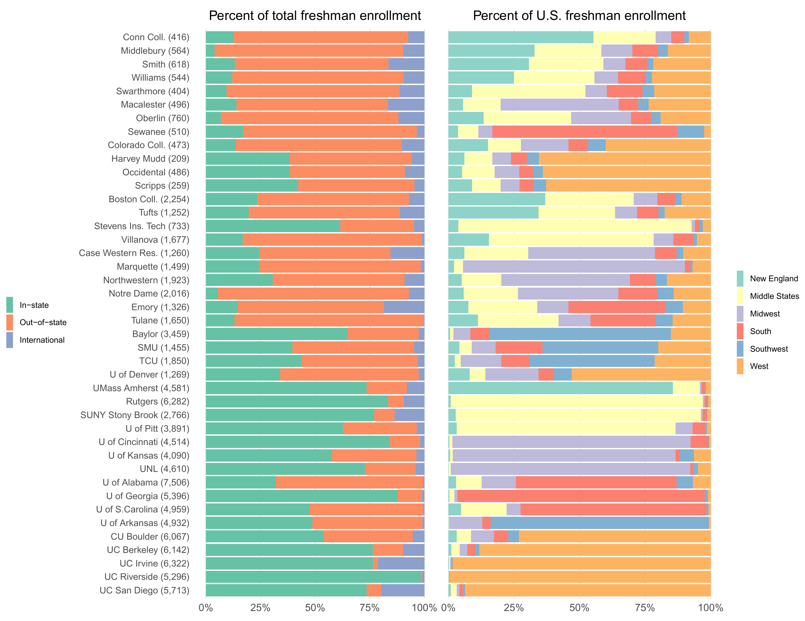
RQ1: Do visit patterns match Market Segment Model?
Recruiting visits by Geomarket market segment
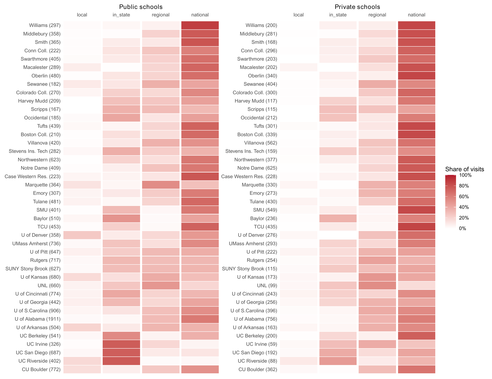
RQ1: Do visit patterns match Market Segment Model?
Recruiting visits by EPS region
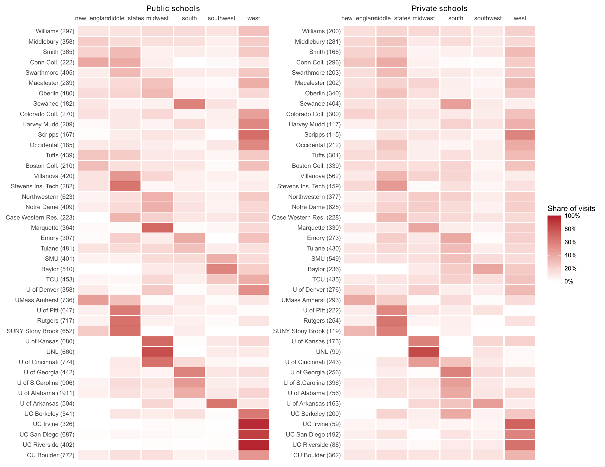
RQ1: Do visit patterns match Market Segment Model?
Top 30 Geomarkets ranked by visits per school (public school visits only)
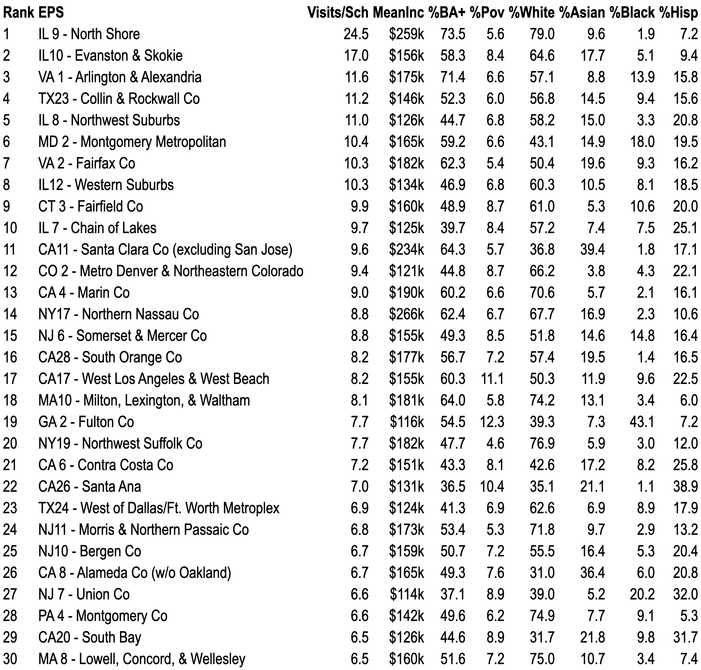
RQ1: Do visit patterns match Market Segment Model?
Top 30 Geomarkets ranked by visits per school (private school visits only)
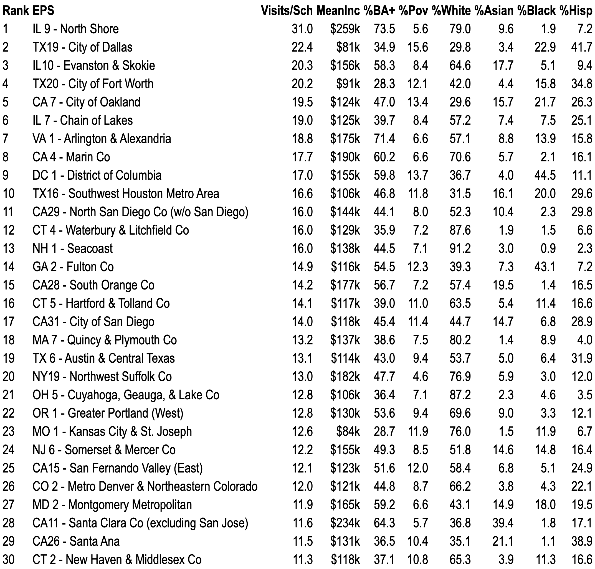
RQ1: Do visit patterns match Market Segment Model?
Concentration of recruiting visits by Geomarket affluence
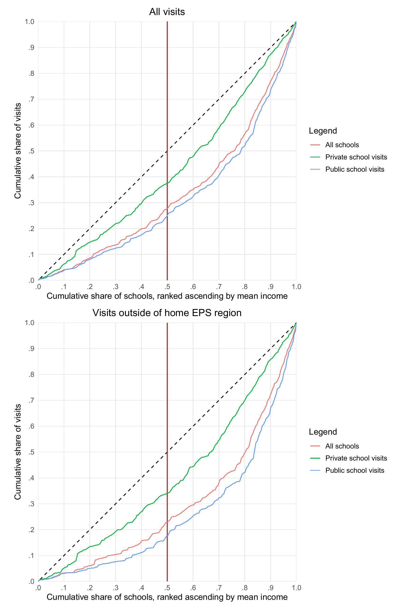
RQ2
RQ3
Discussion
Discussion
UNDER CONSTRUCTION
Access to selective private colleges and public flagship universities are sites of contestation between dominant vs. challenger status groups
- Historically, selective privates are sites of social closure
- Public flagships are sites of social closure and social mobility
Mechanisms of social closure
- Admissions criteria that favor dominant status groups
- State/federal policies that favor dominant groups or challenger groups
These literatures ignore third-party market devices
- Collectively, these market devices create infrastructures that produce social closure, even without intentional action by colleges
- Infrastructures are constructed to privilege wealth over “merit”
- We should study these infrastructures
RQ0
Atlanta area
Research question 1
Racial/ethnic composition of Atlanta area Geomarkets
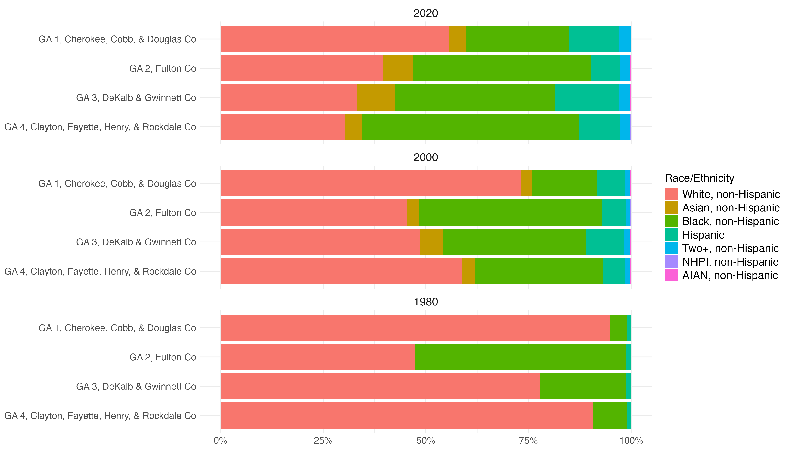
- Race/ethnicity categories not available in 1980 Census: Asian, non-Hispanic; Two+ races, non-Hispanic; NHPI, non-Hispanic; AIAN non-Hispanic
Research question 1
Socioeconomic characteristics of Atlanta area Geomarkets
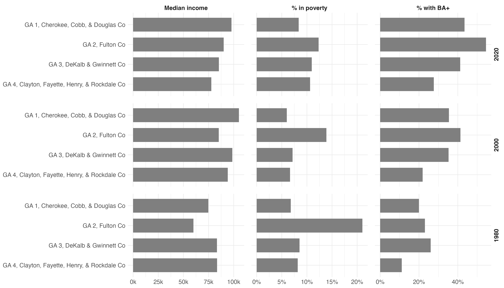
- Household income measured using 2024 CPI
Research question 1
Racial/ethnic and socioeconomic characteristics of Atlanta area Geomarkets over time
|
1980
|
2000
|
2020
|
||||||||||||||||
|---|---|---|---|---|---|---|---|---|---|---|---|---|---|---|---|---|---|---|
| Wt. Mean | Mean | SD | P25 | P50 | P75 | Wt. Mean | Mean | SD | P25 | P50 | P75 | Wt. Mean | Mean | SD | P25 | P50 | P75 | |
| % White, non-Hispanic | ||||||||||||||||||
| GA 1, Cherokee, Cobb, & Douglas Co | 94.9 | 88.7 | 21.6 | 90.5 | 95.9 | 97.7 | 73.3 | 73.7 | 23.1 | 60.2 | 82.0 | 90.5 | 55.7 | 56.2 | 23.9 | 37.8 | 57.5 | 76.2 |
| GA 2, Fulton Co | 47.3 | 54.2 | 40.1 | 5.5 | 66.1 | 94.1 | 45.4 | 45.1 | 36.6 | 5.7 | 46.6 | 82.1 | 39.5 | 39.4 | 30.7 | 6.3 | 39.7 | 67.0 |
| GA 3, DeKalb & Gwinnett Co | 77.7 | 77.4 | 30.5 | 77.1 | 92.3 | 96.2 | 48.6 | 52.1 | 32.4 | 18.2 | 63.0 | 81.9 | 33.1 | 33.2 | 24.9 | 10.4 | 29.5 | 51.7 |
| GA 4, Clayton, Fayette, Henry, & Rockdale Co | 90.6 | 82.5 | 18.5 | 77.8 | 91.0 | 94.4 | 58.9 | 58.1 | 29.8 | 30.5 | 66.7 | 85.4 | 30.4 | 30.5 | 24.6 | 10.2 | 22.4 | 47.4 |
| % Asian, non-Hispanic | ||||||||||||||||||
| GA 1, Cherokee, Cobb, & Douglas Co | NA | NA | NA | NA | NA | NA | 2.5 | 2.1 | 1.9 | 0.6 | 1.5 | 3.0 | 4.2 | 4.3 | 5.1 | 0.6 | 2.5 | 6.0 |
| GA 2, Fulton Co | NA | NA | NA | NA | NA | NA | 3.0 | 2.5 | 3.5 | 0.3 | 1.3 | 3.2 | 7.3 | 6.8 | 10.6 | 0.0 | 2.5 | 8.1 |
| GA 3, DeKalb & Gwinnett Co | NA | NA | NA | NA | NA | NA | 5.5 | 4.6 | 4.7 | 1.0 | 2.7 | 7.0 | 9.5 | 9.7 | 10.8 | 1.3 | 6.1 | 14.7 |
| GA 4, Clayton, Fayette, Henry, & Rockdale Co | NA | NA | NA | NA | NA | NA | 3.1 | 2.4 | 2.7 | 0.6 | 1.5 | 2.9 | 4.0 | 3.7 | 5.1 | 0.0 | 1.7 | 5.1 |
| % Black, non-Hispanic | ||||||||||||||||||
| GA 1, Cherokee, Cobb, & Douglas Co | 4.2 | 9.8 | 21.6 | 0.8 | 2.5 | 7.8 | 15.9 | 16.5 | 19.9 | 3.5 | 8.6 | 22.5 | 25.0 | 24.4 | 20.5 | 6.6 | 20.1 | 37.9 |
| GA 2, Fulton Co | 51.4 | 43.5 | 40.8 | 3.3 | 31.0 | 92.8 | 44.3 | 45.6 | 38.7 | 7.1 | 34.5 | 88.8 | 43.4 | 43.6 | 36.2 | 10.1 | 28.9 | 84.0 |
| GA 3, DeKalb & Gwinnett Co | 20.9 | 19.9 | 31.0 | 1.2 | 4.1 | 19.9 | 34.8 | 33.0 | 33.9 | 6.7 | 15.5 | 67.0 | 38.9 | 38.1 | 29.7 | 14.4 | 27.0 | 59.9 |
| GA 4, Clayton, Fayette, Henry, & Rockdale Co | 8.4 | 15.8 | 18.5 | 3.4 | 7.5 | 20.7 | 31.2 | 33.3 | 27.8 | 8.5 | 25.1 | 47.8 | 52.7 | 52.4 | 24.2 | 37.5 | 54.8 | 73.3 |
| % Hispanic | ||||||||||||||||||
| GA 1, Cherokee, Cobb, & Douglas Co | 0.9 | 0.8 | 0.5 | 0.6 | 0.8 | 1.0 | 6.8 | 6.1 | 6.9 | 2.0 | 3.5 | 6.6 | 12.2 | 11.7 | 10.6 | 4.1 | 8.5 | 15.8 |
| GA 2, Fulton Co | 1.3 | 1.3 | 1.4 | 0.7 | 1.0 | 1.5 | 5.9 | 5.4 | 7.7 | 1.5 | 2.7 | 5.3 | 7.2 | 7.1 | 8.6 | 1.9 | 4.9 | 9.4 |
| GA 3, DeKalb & Gwinnett Co | 1.4 | 1.5 | 1.5 | 0.8 | 1.1 | 1.6 | 9.3 | 8.4 | 11.4 | 2.2 | 3.7 | 9.7 | 15.5 | 15.6 | 17.8 | 2.8 | 8.0 | 23.5 |
| GA 4, Clayton, Fayette, Henry, & Rockdale Co | 0.9 | 0.9 | 0.4 | 0.6 | 0.9 | 1.2 | 5.3 | 4.7 | 5.7 | 1.7 | 2.7 | 4.8 | 10.0 | 10.1 | 9.6 | 3.5 | 6.9 | 13.8 |
| % Two+, non-Hispanic | ||||||||||||||||||
| GA 1, Cherokee, Cobb, & Douglas Co | NA | NA | NA | NA | NA | NA | 1.3 | 1.2 | 0.5 | 0.8 | 1.1 | 1.4 | 2.8 | 2.9 | 2.9 | 1.0 | 2.2 | 3.8 |
| GA 2, Fulton Co | NA | NA | NA | NA | NA | NA | 1.1 | 1.1 | 0.5 | 0.7 | 1.0 | 1.4 | 2.4 | 2.4 | 3.1 | 0.4 | 1.6 | 3.0 |
| GA 3, DeKalb & Gwinnett Co | NA | NA | NA | NA | NA | NA | 1.6 | 1.5 | 0.9 | 0.9 | 1.3 | 1.7 | 2.8 | 2.8 | 2.9 | 0.8 | 2.1 | 3.8 |
| GA 4, Clayton, Fayette, Henry, & Rockdale Co | NA | NA | NA | NA | NA | NA | 1.2 | 1.1 | 0.4 | 0.8 | 1.0 | 1.4 | 2.7 | 2.6 | 2.7 | 0.7 | 1.8 | 3.5 |
| % NHPI, non-Hispanic | ||||||||||||||||||
| GA 1, Cherokee, Cobb, & Douglas Co | NA | NA | NA | NA | NA | NA | 0.0 | 0.0 | 0.0 | 0.0 | 0.0 | 0.0 | 0.0 | 0.0 | 0.2 | 0.0 | 0.0 | 0.0 |
| GA 2, Fulton Co | NA | NA | NA | NA | NA | NA | 0.0 | 0.0 | 0.0 | 0.0 | 0.0 | 0.0 | 0.0 | 0.0 | 0.2 | 0.0 | 0.0 | 0.0 |
| GA 3, DeKalb & Gwinnett Co | NA | NA | NA | NA | NA | NA | 0.0 | 0.0 | 0.1 | 0.0 | 0.0 | 0.0 | 0.0 | 0.0 | 0.3 | 0.0 | 0.0 | 0.0 |
| GA 4, Clayton, Fayette, Henry, & Rockdale Co | NA | NA | NA | NA | NA | NA | 0.0 | 0.0 | 0.1 | 0.0 | 0.0 | 0.0 | 0.1 | 0.1 | 0.5 | 0.0 | 0.0 | 0.0 |
| % AIAN, non-Hispanic | ||||||||||||||||||
| GA 1, Cherokee, Cobb, & Douglas Co | NA | NA | NA | NA | NA | NA | 0.2 | 0.2 | 0.1 | 0.1 | 0.2 | 0.3 | 0.1 | 0.1 | 0.3 | 0.0 | 0.0 | 0.0 |
| GA 2, Fulton Co | NA | NA | NA | NA | NA | NA | 0.1 | 0.2 | 0.1 | 0.1 | 0.1 | 0.2 | 0.2 | 0.2 | 0.6 | 0.0 | 0.0 | 0.0 |
| GA 3, DeKalb & Gwinnett Co | NA | NA | NA | NA | NA | NA | 0.2 | 0.2 | 0.1 | 0.1 | 0.2 | 0.2 | 0.2 | 0.2 | 0.7 | 0.0 | 0.0 | 0.0 |
| GA 4, Clayton, Fayette, Henry, & Rockdale Co | NA | NA | NA | NA | NA | NA | 0.2 | 0.2 | 0.1 | 0.1 | 0.2 | 0.3 | 0.1 | 0.1 | 0.3 | 0.0 | 0.0 | 0.0 |
| Median income | ||||||||||||||||||
| GA 1, Cherokee, Cobb, & Douglas Co | NA | 85.2 | 34.0 | 63.7 | 74.8 | 98.9 | NA | 114.2 | 45.9 | 85.0 | 105.1 | 134.8 | NA | 106.0 | 39.1 | 76.6 | 97.8 | 131.3 |
| GA 2, Fulton Co | NA | 66.2 | 39.1 | 39.2 | 60.0 | 87.3 | NA | 95.4 | 58.1 | 50.6 | 85.2 | 126.5 | NA | 104.5 | 65.4 | 57.0 | 90.0 | 132.4 |
| GA 3, DeKalb & Gwinnett Co | NA | 84.8 | 29.4 | 65.8 | 83.3 | 101.0 | NA | 106.2 | 39.5 | 79.5 | 98.6 | 123.5 | NA | 92.7 | 41.4 | 62.0 | 85.2 | 111.2 |
| GA 4, Clayton, Fayette, Henry, & Rockdale Co | NA | 83.3 | 18.4 | 69.4 | 83.5 | 96.5 | NA | 98.4 | 29.7 | 74.1 | 94.1 | 119.4 | NA | 82.4 | 31.1 | 59.0 | 77.7 | 99.9 |
| % in poverty | ||||||||||||||||||
| GA 1, Cherokee, Cobb, & Douglas Co | 6.8 | 10.9 | 9.8 | 5.3 | 8.5 | 14.1 | 6.0 | 7.1 | 7.7 | 3.0 | 5.1 | 8.1 | 8.4 | 8.1 | 6.3 | 3.2 | 6.8 | 11.4 |
| GA 2, Fulton Co | 21.0 | 22.4 | 19.4 | 7.0 | 15.5 | 32.2 | 13.9 | 15.9 | 15.9 | 4.0 | 8.9 | 23.9 | 12.3 | 13.3 | 12.6 | 3.8 | 9.9 | 18.8 |
| GA 3, DeKalb & Gwinnett Co | 8.5 | 10.7 | 9.3 | 4.3 | 8.0 | 14.1 | 7.2 | 8.3 | 6.9 | 3.8 | 6.4 | 10.7 | 11.0 | 10.9 | 8.1 | 4.5 | 9.3 | 15.7 |
| GA 4, Clayton, Fayette, Henry, & Rockdale Co | 8.2 | 10.3 | 5.8 | 6.1 | 9.4 | 12.6 | 6.6 | 7.1 | 5.2 | 3.1 | 5.9 | 9.4 | 10.6 | 11.0 | 8.5 | 4.5 | 9.2 | 15.4 |
| % with BA+ | ||||||||||||||||||
| GA 1, Cherokee, Cobb, & Douglas Co | 20.0 | 16.5 | 14.9 | 6.5 | 10.2 | 22.4 | 35.4 | 33.2 | 19.4 | 17.1 | 29.7 | 47.0 | 43.4 | 43.6 | 17.5 | 29.7 | 42.8 | 56.7 |
| GA 2, Fulton Co | 23.1 | 19.4 | 17.7 | 5.0 | 12.1 | 36.0 | 41.4 | 35.2 | 25.0 | 12.1 | 27.2 | 60.2 | 54.5 | 53.0 | 25.1 | 29.3 | 59.0 | 75.0 |
| GA 3, DeKalb & Gwinnett Co | 26.0 | 24.5 | 15.3 | 10.5 | 22.2 | 37.4 | 35.3 | 35.5 | 19.5 | 20.5 | 31.1 | 49.3 | 41.2 | 41.2 | 19.8 | 26.0 | 36.1 | 54.9 |
| GA 4, Clayton, Fayette, Henry, & Rockdale Co | 11.1 | 10.5 | 5.6 | 5.7 | 9.0 | 14.8 | 21.9 | 21.2 | 11.9 | 12.4 | 18.6 | 28.1 | 27.6 | 26.8 | 13.5 | 16.7 | 24.2 | 33.6 |
- Race/ethnicity categories not available in 1980 Census: Asian, non-Hispanic; Two+ races, non-Hispanic; NHPI, non-Hispanic; AIAN non-Hispanic
- Household income measured using 2024 CPI
Research question 1
Racial/ethnic and socioeconomic characteristics of Atlanta area Geomarkets over time
Fullscreen
- Race/ethnicity categories not available in 1980 Census: Asian, non-Hispanic; Two+ races, non-Hispanic; NHPI, non-Hispanic; AIAN non-Hispanic
- Household income measured using 2024 CPI
Bay Area
Research question 1
Racial/ethnic composition of Bay Area Geomarkets

- Race/ethnicity categories not available in 1980 Census: Asian, non-Hispanic; Two+ races, non-Hispanic; NHPI, non-Hispanic; AIAN non-Hispanic
Research question 1
Socioeconomic characteristics of Bay Area Geomarkets

- Household income measured using 2024 CPI
Research question 1
Racial/ethnic and socioeconomic characteristics of Bay Area Geomarkets over time
|
1980
|
2000
|
2020
|
||||||||||||||||
|---|---|---|---|---|---|---|---|---|---|---|---|---|---|---|---|---|---|---|
| Wt. Mean | Mean | SD | P25 | P50 | P75 | Wt. Mean | Mean | SD | P25 | P50 | P75 | Wt. Mean | Mean | SD | P25 | P50 | P75 | |
| % White, non-Hispanic | ||||||||||||||||||
| CA 4, Marin Co | 93.2 | 88.5 | 12.7 | 89.3 | 91.9 | 93.6 | 78.8 | 80.8 | 14.4 | 77.9 | 86.1 | 89.3 | 71.2 | 70.9 | 20.0 | 66.9 | 78.8 | 82.7 |
| CA 5, San Francisco Co | 67.8 | 53.4 | 23.5 | 36.8 | 56.6 | 71.3 | 43.8 | 44.3 | 24.1 | 23.3 | 45.0 | 63.5 | 40.1 | 41.4 | 20.7 | 26.9 | 41.5 | 55.4 |
| CA 6, Contra Costa Co | 81.4 | 76.4 | 21.6 | 70.7 | 85.4 | 89.2 | 58.1 | 59.2 | 23.6 | 43.1 | 66.7 | 77.5 | 42.8 | 44.4 | 23.2 | 24.4 | 48.0 | 62.4 |
| CA 7, City of Oakland | 40.8 | 40.6 | 30.9 | 11.2 | 37.8 | 69.2 | 25.0 | 31.2 | 27.1 | 7.1 | 21.5 | 53.1 | 29.8 | 31.6 | 22.2 | 11.9 | 28.0 | 49.1 |
| CA 8, Alameda Co (w/o Oakland) | 79.5 | 68.2 | 22.0 | 58.8 | 74.4 | 85.2 | 47.5 | 48.5 | 21.8 | 31.6 | 47.5 | 67.3 | 31.1 | 32.6 | 19.5 | 16.1 | 28.3 | 47.9 |
| CA 9, San Mateo Co | 79.4 | 72.0 | 22.9 | 64.5 | 81.4 | 88.5 | 50.0 | 53.0 | 25.9 | 31.3 | 57.0 | 75.4 | 38.8 | 39.6 | 22.5 | 22.4 | 39.7 | 56.2 |
| CA10, City of San Jose | 70.1 | 66.6 | 21.9 | 51.2 | 75.6 | 84.6 | 36.3 | 39.9 | 23.8 | 17.7 | 39.5 | 61.7 | 25.4 | 25.6 | 18.4 | 8.8 | 22.8 | 40.9 |
| CA11, Santa Clara Co (excluding San Jose) | 84.4 | 76.1 | 16.5 | 67.7 | 81.0 | 87.8 | 53.8 | 53.7 | 20.0 | 38.9 | 54.4 | 69.4 | 36.9 | 37.7 | 18.0 | 23.9 | 37.8 | 50.0 |
| % Asian, non-Hispanic | ||||||||||||||||||
| CA 4, Marin Co | NA | NA | NA | NA | NA | NA | 4.5 | 4.1 | 2.4 | 2.1 | 3.8 | 5.7 | 5.7 | 5.7 | 3.5 | 3.4 | 5.1 | 7.1 |
| CA 5, San Francisco Co | NA | NA | NA | NA | NA | NA | 30.8 | 28.9 | 19.6 | 10.7 | 25.7 | 44.1 | 34.2 | 32.9 | 19.4 | 15.7 | 30.9 | 44.7 |
| CA 6, Contra Costa Co | NA | NA | NA | NA | NA | NA | 10.9 | 11.4 | 7.8 | 6.2 | 10.0 | 14.2 | 17.2 | 17.0 | 13.8 | 8.2 | 13.0 | 21.5 |
| CA 7, City of Oakland | NA | NA | NA | NA | NA | NA | 15.2 | 14.7 | 14.1 | 5.4 | 10.2 | 19.2 | 15.8 | 16.4 | 13.2 | 7.8 | 13.3 | 21.2 |
| CA 8, Alameda Co (w/o Oakland) | NA | NA | NA | NA | NA | NA | 22.4 | 19.4 | 15.0 | 8.7 | 14.9 | 25.4 | 36.6 | 34.8 | 20.1 | 19.7 | 30.3 | 47.4 |
| CA 9, San Mateo Co | NA | NA | NA | NA | NA | NA | 19.9 | 19.7 | 16.7 | 7.2 | 13.5 | 28.5 | 29.2 | 28.4 | 18.8 | 13.1 | 24.0 | 40.8 |
| CA10, City of San Jose | NA | NA | NA | NA | NA | NA | 25.4 | 25.5 | 17.6 | 11.7 | 20.2 | 36.4 | 35.9 | 35.1 | 20.2 | 20.0 | 29.3 | 49.4 |
| CA11, Santa Clara Co (excluding San Jose) | NA | NA | NA | NA | NA | NA | 25.4 | 23.9 | 16.5 | 11.0 | 20.4 | 36.1 | 39.5 | 38.2 | 20.2 | 23.2 | 35.3 | 53.0 |
| % Black, non-Hispanic | ||||||||||||||||||
| CA 4, Marin Co | 2.5 | 3.3 | 10.8 | 0.4 | 1.0 | 1.9 | 2.8 | 2.8 | 7.8 | 0.6 | 0.9 | 1.9 | 2.2 | 2.3 | 4.9 | 0.2 | 1.2 | 1.9 |
| CA 5, San Francisco Co | 16.2 | 13.3 | 20.2 | 1.8 | 4.4 | 12.8 | 7.6 | 8.3 | 13.0 | 1.3 | 2.8 | 9.1 | 4.9 | 5.1 | 7.7 | 1.0 | 2.4 | 5.8 |
| CA 6, Contra Costa Co | 9.6 | 9.1 | 19.1 | 0.9 | 1.8 | 6.8 | 9.2 | 8.8 | 12.4 | 1.6 | 3.1 | 13.0 | 8.3 | 7.9 | 8.1 | 1.5 | 5.0 | 11.6 |
| CA 7, City of Oakland | 48.9 | 41.4 | 32.3 | 9.3 | 39.1 | 71.7 | 34.3 | 31.6 | 23.0 | 11.6 | 26.6 | 52.7 | 21.8 | 21.6 | 14.1 | 10.8 | 19.6 | 31.1 |
| CA 8, Alameda Co (w/o Oakland) | 6.3 | 11.3 | 21.5 | 1.2 | 2.8 | 6.6 | 6.9 | 10.0 | 14.6 | 2.1 | 4.6 | 9.8 | 6.0 | 6.2 | 6.3 | 1.7 | 4.1 | 8.8 |
| CA 9, San Mateo Co | 6.6 | 6.4 | 14.1 | 0.5 | 1.4 | 5.1 | 3.4 | 3.5 | 6.2 | 0.8 | 1.7 | 3.0 | 2.2 | 2.2 | 3.3 | 0.3 | 1.0 | 2.4 |
| CA10, City of San Jose | 4.6 | 3.6 | 3.5 | 0.9 | 2.5 | 5.1 | 3.3 | 3.0 | 1.8 | 1.9 | 2.7 | 3.9 | 2.8 | 2.8 | 2.8 | 0.9 | 1.9 | 3.8 |
| CA11, Santa Clara Co (excluding San Jose) | 2.6 | 3.1 | 7.9 | 0.5 | 1.2 | 3.4 | 1.9 | 2.2 | 2.4 | 0.7 | 1.9 | 2.8 | 1.8 | 1.8 | 2.4 | 0.2 | 1.0 | 2.4 |
| % Hispanic | ||||||||||||||||||
| CA 4, Marin Co | 4.3 | 4.4 | 2.9 | 2.6 | 3.9 | 5.1 | 11.1 | 9.1 | 9.7 | 4.1 | 6.1 | 11.6 | 16.2 | 15.9 | 18.1 | 7.1 | 10.4 | 18.0 |
| CA 5, San Francisco Co | 15.9 | 11.3 | 11.6 | 4.6 | 6.5 | 12.8 | 14.1 | 14.3 | 14.0 | 5.1 | 8.2 | 19.4 | 15.3 | 14.5 | 10.9 | 6.5 | 11.1 | 21.5 |
| CA 6, Contra Costa Co | 9.0 | 8.5 | 7.4 | 3.7 | 6.4 | 10.7 | 17.7 | 16.2 | 14.3 | 5.8 | 11.3 | 20.7 | 25.9 | 24.4 | 18.7 | 9.6 | 19.1 | 34.1 |
| CA 7, City of Oakland | 10.2 | 9.0 | 10.2 | 3.2 | 5.9 | 9.6 | 21.5 | 17.9 | 15.8 | 6.6 | 10.7 | 28.2 | 26.5 | 23.7 | 19.7 | 9.2 | 16.0 | 33.0 |
| CA 8, Alameda Co (w/o Oakland) | 14.2 | 12.1 | 10.0 | 5.5 | 9.0 | 16.5 | 18.1 | 16.8 | 13.2 | 7.7 | 13.0 | 20.9 | 20.9 | 20.4 | 14.8 | 9.5 | 15.9 | 27.7 |
| CA 9, San Mateo Co | 14.0 | 11.4 | 9.0 | 5.2 | 8.3 | 14.6 | 21.9 | 18.8 | 17.2 | 6.6 | 13.1 | 24.1 | 24.2 | 23.7 | 19.6 | 9.4 | 17.1 | 32.7 |
| CA10, City of San Jose | 25.3 | 21.6 | 18.5 | 8.6 | 12.9 | 31.6 | 31.3 | 27.7 | 20.9 | 12.7 | 18.3 | 40.6 | 32.0 | 32.3 | 19.8 | 17.2 | 26.8 | 46.5 |
| CA11, Santa Clara Co (excluding San Jose) | 13.0 | 12.8 | 12.0 | 4.7 | 8.9 | 16.1 | 15.5 | 16.3 | 14.9 | 5.3 | 12.3 | 19.6 | 17.1 | 17.4 | 16.7 | 4.9 | 12.0 | 23.3 |
| % Two+, non-Hispanic | ||||||||||||||||||
| CA 4, Marin Co | NA | NA | NA | NA | NA | NA | 2.4 | 2.4 | 0.7 | 2.0 | 2.4 | 2.7 | 4.5 | 4.2 | 2.8 | 2.2 | 3.8 | 5.8 |
| CA 5, San Francisco Co | NA | NA | NA | NA | NA | NA | 3.0 | 2.9 | 0.9 | 2.2 | 3.0 | 3.4 | 5.0 | 4.9 | 3.1 | 2.9 | 4.6 | 6.6 |
| CA 6, Contra Costa Co | NA | NA | NA | NA | NA | NA | 3.5 | 3.5 | 1.0 | 2.8 | 3.5 | 4.2 | 5.2 | 5.3 | 3.0 | 3.0 | 4.8 | 6.9 |
| CA 7, City of Oakland | NA | NA | NA | NA | NA | NA | 3.2 | 3.4 | 1.1 | 2.7 | 3.5 | 4.2 | 5.3 | 5.2 | 3.3 | 2.7 | 4.5 | 7.0 |
| CA 8, Alameda Co (w/o Oakland) | NA | NA | NA | NA | NA | NA | 4.2 | 4.0 | 1.2 | 3.3 | 4.0 | 4.7 | 4.4 | 4.5 | 2.7 | 2.3 | 3.9 | 5.8 |
| CA 9, San Mateo Co | NA | NA | NA | NA | NA | NA | 3.3 | 3.3 | 1.7 | 2.5 | 3.0 | 3.9 | 4.3 | 4.3 | 2.4 | 2.5 | 4.1 | 5.9 |
| CA10, City of San Jose | NA | NA | NA | NA | NA | NA | 3.0 | 3.0 | 0.9 | 2.4 | 3.1 | 3.7 | 3.3 | 3.4 | 2.3 | 1.6 | 3.0 | 4.9 |
| CA11, Santa Clara Co (excluding San Jose) | NA | NA | NA | NA | NA | NA | 2.9 | 3.0 | 0.8 | 2.5 | 3.0 | 3.6 | 4.3 | 4.2 | 2.5 | 2.5 | 3.8 | 5.7 |
| % NHPI, non-Hispanic | ||||||||||||||||||
| CA 4, Marin Co | NA | NA | NA | NA | NA | NA | 0.1 | 0.1 | 0.1 | 0.1 | 0.1 | 0.2 | 0.1 | 0.1 | 0.3 | 0.0 | 0.0 | 0.0 |
| CA 5, San Francisco Co | NA | NA | NA | NA | NA | NA | 0.5 | 0.5 | 1.5 | 0.1 | 0.2 | 0.4 | 0.3 | 0.3 | 1.1 | 0.0 | 0.0 | 0.0 |
| CA 6, Contra Costa Co | NA | NA | NA | NA | NA | NA | 0.3 | 0.3 | 0.3 | 0.1 | 0.2 | 0.4 | 0.5 | 0.5 | 1.3 | 0.0 | 0.0 | 0.3 |
| CA 7, City of Oakland | NA | NA | NA | NA | NA | NA | 0.5 | 0.4 | 0.4 | 0.1 | 0.2 | 0.6 | 0.6 | 0.5 | 0.9 | 0.0 | 0.1 | 0.7 |
| CA 8, Alameda Co (w/o Oakland) | NA | NA | NA | NA | NA | NA | 0.6 | 0.5 | 0.6 | 0.1 | 0.3 | 0.7 | 0.9 | 0.9 | 1.4 | 0.0 | 0.3 | 1.0 |
| CA 9, San Mateo Co | NA | NA | NA | NA | NA | NA | 1.3 | 1.2 | 1.9 | 0.2 | 0.5 | 1.1 | 1.2 | 1.2 | 2.6 | 0.0 | 0.0 | 1.2 |
| CA10, City of San Jose | NA | NA | NA | NA | NA | NA | 0.3 | 0.3 | 0.3 | 0.2 | 0.3 | 0.5 | 0.4 | 0.4 | 1.1 | 0.0 | 0.0 | 0.3 |
| CA11, Santa Clara Co (excluding San Jose) | NA | NA | NA | NA | NA | NA | 0.2 | 0.3 | 0.5 | 0.1 | 0.2 | 0.4 | 0.2 | 0.2 | 0.6 | 0.0 | 0.0 | 0.0 |
| % AIAN, non-Hispanic | ||||||||||||||||||
| CA 4, Marin Co | NA | NA | NA | NA | NA | NA | 0.3 | 0.3 | 0.2 | 0.2 | 0.2 | 0.3 | 0.1 | 0.1 | 0.4 | 0.0 | 0.0 | 0.0 |
| CA 5, San Francisco Co | NA | NA | NA | NA | NA | NA | 0.3 | 0.3 | 1.2 | 0.1 | 0.2 | 0.3 | 0.2 | 0.2 | 0.8 | 0.0 | 0.0 | 0.0 |
| CA 6, Contra Costa Co | NA | NA | NA | NA | NA | NA | 0.4 | 0.4 | 0.2 | 0.2 | 0.3 | 0.5 | 0.2 | 0.2 | 0.4 | 0.0 | 0.0 | 0.2 |
| CA 7, City of Oakland | NA | NA | NA | NA | NA | NA | 0.4 | 0.5 | 1.2 | 0.2 | 0.3 | 0.5 | 0.3 | 0.4 | 1.1 | 0.0 | 0.1 | 0.5 |
| CA 8, Alameda Co (w/o Oakland) | NA | NA | NA | NA | NA | NA | 0.4 | 0.4 | 1.0 | 0.2 | 0.3 | 0.5 | 0.3 | 0.3 | 0.4 | 0.0 | 0.1 | 0.4 |
| CA 9, San Mateo Co | NA | NA | NA | NA | NA | NA | 0.2 | 0.2 | 0.2 | 0.1 | 0.2 | 0.3 | 0.1 | 0.1 | 0.4 | 0.0 | 0.0 | 0.1 |
| CA10, City of San Jose | NA | NA | NA | NA | NA | NA | 0.3 | 0.3 | 0.2 | 0.2 | 0.3 | 0.4 | 0.2 | 0.2 | 0.4 | 0.0 | 0.0 | 0.2 |
| CA11, Santa Clara Co (excluding San Jose) | NA | NA | NA | NA | NA | NA | 0.3 | 0.3 | 0.2 | 0.1 | 0.2 | 0.4 | 0.2 | 0.2 | 0.4 | 0.0 | 0.0 | 0.1 |
| Median income | ||||||||||||||||||
| CA 4, Marin Co | NA | 108.4 | 35.6 | 85.7 | 105.1 | 124.0 | NA | 141.2 | 38.2 | 113.0 | 137.7 | 162.2 | NA | 153.2 | 57.3 | 120.7 | 141.4 | 183.3 |
| CA 5, San Francisco Co | NA | 73.1 | 27.7 | 54.2 | 73.1 | 86.2 | NA | 112.3 | 40.7 | 93.5 | 111.8 | 133.7 | NA | 151.0 | 63.9 | 108.5 | 148.0 | 193.9 |
| CA 6, Contra Costa Co | NA | 104.5 | 37.2 | 77.7 | 101.9 | 130.3 | NA | 132.4 | 52.7 | 90.5 | 123.1 | 167.4 | NA | 139.7 | 61.0 | 93.8 | 131.7 | 171.0 |
| CA 7, City of Oakland | NA | 70.2 | 38.6 | 43.1 | 58.7 | 84.1 | NA | 92.8 | 55.6 | 56.5 | 74.9 | 108.9 | NA | 110.8 | 62.8 | 64.5 | 93.9 | 140.2 |
| CA 8, Alameda Co (w/o Oakland) | NA | 93.4 | 33.7 | 65.4 | 93.0 | 114.2 | NA | 125.5 | 48.6 | 92.0 | 118.3 | 154.9 | NA | 145.6 | 52.9 | 106.0 | 136.3 | 180.8 |
| CA 9, San Mateo Co | NA | 109.1 | 37.0 | 84.4 | 102.5 | 123.1 | NA | 146.6 | 60.9 | 107.8 | 134.4 | 167.1 | NA | 167.7 | 59.5 | 126.4 | 156.9 | 196.6 |
| CA10, City of San Jose | NA | 98.1 | 30.4 | 74.3 | 98.8 | 120.0 | NA | 138.3 | 40.8 | 107.2 | 136.6 | 161.0 | NA | 142.7 | 51.0 | 110.0 | 138.0 | 174.5 |
| CA11, Santa Clara Co (excluding San Jose) | NA | 113.3 | 35.8 | 87.7 | 107.1 | 130.3 | NA | 162.4 | 52.6 | 126.7 | 153.6 | 186.6 | NA | 188.8 | 57.0 | 147.2 | 183.8 | 223.0 |
| % in poverty | ||||||||||||||||||
| CA 4, Marin Co | 7.1 | 7.4 | 4.7 | 4.9 | 6.5 | 8.5 | 5.5 | 5.8 | 3.9 | 3.6 | 4.9 | 6.6 | 6.6 | 7.1 | 6.4 | 3.2 | 6.0 | 8.6 |
| CA 5, San Francisco Co | 13.7 | 14.2 | 9.2 | 7.4 | 11.2 | 18.8 | 10.2 | 10.2 | 7.3 | 5.8 | 8.2 | 11.8 | 10.5 | 11.2 | 10.9 | 4.8 | 8.1 | 13.8 |
| CA 6, Contra Costa Co | 7.8 | 7.5 | 7.0 | 3.2 | 5.7 | 8.3 | 6.6 | 6.7 | 6.2 | 2.6 | 4.2 | 8.4 | 8.1 | 8.1 | 6.3 | 3.7 | 6.3 | 10.9 |
| CA 7, City of Oakland | 17.8 | 18.4 | 13.3 | 7.8 | 16.2 | 26.7 | 15.7 | 16.1 | 11.5 | 5.9 | 16.1 | 23.9 | 13.4 | 14.2 | 10.5 | 6.5 | 12.0 | 20.3 |
| CA 8, Alameda Co (w/o Oakland) | 8.2 | 9.4 | 8.8 | 3.6 | 6.9 | 10.7 | 7.3 | 8.0 | 8.0 | 3.3 | 5.7 | 8.8 | 7.6 | 7.9 | 7.6 | 3.2 | 5.8 | 10.2 |
| CA 9, San Mateo Co | 6.1 | 6.2 | 5.4 | 3.3 | 5.0 | 7.3 | 4.9 | 5.1 | 4.4 | 2.8 | 4.1 | 6.0 | 6.0 | 6.0 | 4.1 | 3.1 | 5.3 | 8.4 |
| CA10, City of San Jose | 8.6 | 8.7 | 7.3 | 4.2 | 6.4 | 10.1 | 7.4 | 7.1 | 5.1 | 3.3 | 5.7 | 9.8 | 8.2 | 8.5 | 6.0 | 4.2 | 7.0 | 11.1 |
| CA11, Santa Clara Co (excluding San Jose) | 5.4 | 6.2 | 5.0 | 3.4 | 5.1 | 8.1 | 4.8 | 5.1 | 3.8 | 2.7 | 4.2 | 6.3 | 5.7 | 5.7 | 4.1 | 2.7 | 4.7 | 7.7 |
| % with BA+ | ||||||||||||||||||
| CA 4, Marin Co | 38.1 | 36.5 | 13.2 | 26.4 | 36.8 | 44.6 | 51.3 | 51.5 | 15.9 | 39.3 | 51.8 | 63.4 | 60.2 | 59.2 | 18.1 | 50.3 | 61.9 | 74.8 |
| CA 5, San Francisco Co | 28.2 | 27.9 | 14.7 | 16.0 | 27.1 | 37.3 | 45.0 | 43.7 | 20.1 | 25.4 | 44.6 | 59.9 | 58.8 | 59.0 | 21.4 | 44.7 | 62.6 | 75.7 |
| CA 6, Contra Costa Co | 24.6 | 26.3 | 17.8 | 12.7 | 22.2 | 38.0 | 35.0 | 37.1 | 22.4 | 15.8 | 33.4 | 54.7 | 43.3 | 43.8 | 22.8 | 25.3 | 40.3 | 63.9 |
| CA 7, City of Oakland | 23.1 | 23.1 | 20.4 | 6.4 | 15.0 | 35.8 | 32.2 | 33.4 | 24.8 | 12.1 | 27.1 | 53.5 | 47.0 | 47.5 | 24.3 | 24.5 | 49.8 | 67.8 |
| CA 8, Alameda Co (w/o Oakland) | 21.9 | 23.6 | 18.9 | 10.7 | 17.0 | 29.3 | 36.0 | 38.4 | 20.7 | 21.3 | 35.9 | 51.8 | 49.3 | 50.6 | 19.9 | 34.4 | 51.9 | 66.6 |
| CA 9, San Mateo Co | 25.6 | 26.8 | 15.0 | 14.6 | 24.7 | 34.5 | 39.0 | 40.7 | 19.7 | 25.5 | 38.3 | 55.0 | 52.1 | 52.6 | 18.4 | 39.5 | 52.1 | 67.9 |
| CA10, City of San Jose | 19.6 | 20.4 | 10.0 | 11.8 | 20.6 | 26.4 | 30.3 | 32.5 | 16.8 | 19.2 | 32.7 | 43.2 | 44.0 | 42.7 | 19.5 | 25.2 | 45.1 | 55.9 |
| CA11, Santa Clara Co (excluding San Jose) | 32.8 | 30.2 | 16.1 | 19.0 | 26.4 | 41.1 | 51.6 | 48.3 | 19.5 | 34.4 | 48.0 | 64.6 | 64.3 | 63.8 | 19.3 | 51.4 | 68.6 | 78.1 |
- Race/ethnicity categories not available in 1980 Census: Asian, non-Hispanic; Two+ races, non-Hispanic; NHPI, non-Hispanic; AIAN non-Hispanic
- Household income measured using 2024 CPI
Research question 1
Racial/ethnic and socioeconomic characteristics of Bay Area Geomarkets over time
Fullscreen
- Race/ethnicity categories not available in 1980 Census: Asian, non-Hispanic; Two+ races, non-Hispanic; NHPI, non-Hispanic; AIAN non-Hispanic
- Household income measured using 2024 CPI
Boston area
Research question 1
Racial/ethnic composition of Boston area Geomarkets
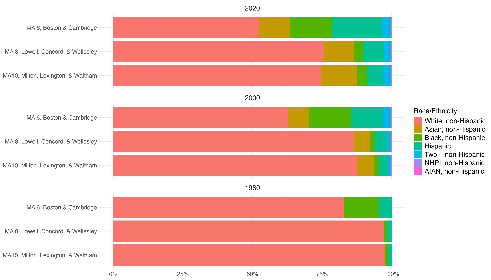
- Race/ethnicity categories not available in 1980 Census: Asian, non-Hispanic; Two+ races, non-Hispanic; NHPI, non-Hispanic; AIAN non-Hispanic
Research question 1
Socioeconomic characteristics of Boston area Geomarkets

- Household income measured using 2024 CPI
Research question 1
Racial/ethnic and socioeconomic characteristics of Boston area Geomarkets over time
|
1980
|
2000
|
2020
|
||||||||||||||||
|---|---|---|---|---|---|---|---|---|---|---|---|---|---|---|---|---|---|---|
| Wt. Mean | Mean | SD | P25 | P50 | P75 | Wt. Mean | Mean | SD | P25 | P50 | P75 | Wt. Mean | Mean | SD | P25 | P50 | P75 | |
| % White, non-Hispanic | ||||||||||||||||||
| MA 6, Boston & Cambridge | 82.8 | 78.1 | 30.4 | 71.9 | 93.2 | 97.4 | 62.8 | 63.5 | 29.0 | 46.2 | 72.6 | 86.3 | 52.3 | 54.0 | 24.4 | 38.0 | 58.1 | 73.1 |
| MA 8, Lowell, Concord, & Wellesley | 97.2 | 95.6 | 5.2 | 95.8 | 97.3 | 98.3 | 86.6 | 86.5 | 14.6 | 84.0 | 92.0 | 95.3 | 75.6 | 74.0 | 16.9 | 65.4 | 78.6 | 86.9 |
| MA10, Milton, Lexington, & Waltham | 97.8 | 96.1 | 2.3 | 95.0 | 96.4 | 98.0 | 87.7 | 87.2 | 8.0 | 83.8 | 88.7 | 93.2 | 74.5 | 74.0 | 12.2 | 65.2 | 75.1 | 81.8 |
| % Asian, non-Hispanic | ||||||||||||||||||
| MA 6, Boston & Cambridge | NA | NA | NA | NA | NA | NA | 7.6 | 7.0 | 7.6 | 2.3 | 4.9 | 9.9 | 11.3 | 11.2 | 9.7 | 4.0 | 8.3 | 16.8 |
| MA 8, Lowell, Concord, & Wellesley | NA | NA | NA | NA | NA | NA | 5.5 | 5.6 | 7.1 | 1.6 | 3.1 | 7.0 | 10.8 | 11.3 | 10.1 | 4.6 | 7.8 | 15.7 |
| MA10, Milton, Lexington, & Waltham | NA | NA | NA | NA | NA | NA | 6.0 | 6.1 | 4.2 | 2.8 | 5.3 | 8.1 | 13.2 | 12.6 | 8.4 | 5.8 | 11.1 | 16.0 |
| % Black, non-Hispanic | ||||||||||||||||||
| MA 6, Boston & Cambridge | 12.6 | 13.7 | 25.6 | 0.4 | 1.5 | 10.3 | 14.9 | 14.4 | 21.2 | 1.8 | 4.8 | 15.0 | 15.0 | 13.9 | 18.8 | 2.3 | 6.0 | 15.8 |
| MA 8, Lowell, Concord, & Wellesley | 1.1 | 1.2 | 1.8 | 0.3 | 0.6 | 1.3 | 1.8 | 1.8 | 2.6 | 0.5 | 0.8 | 2.3 | 3.4 | 3.5 | 4.1 | 0.6 | 2.1 | 4.8 |
| MA10, Milton, Lexington, & Waltham | 0.9 | 0.9 | 1.1 | 0.3 | 0.7 | 1.2 | 1.9 | 2.1 | 2.0 | 0.8 | 1.5 | 2.3 | 3.4 | 3.7 | 3.7 | 1.3 | 2.5 | 5.6 |
| % Hispanic | ||||||||||||||||||
| MA 6, Boston & Cambridge | 4.5 | 5.1 | 8.6 | 0.9 | 2.0 | 5.2 | 11.4 | 11.0 | 12.7 | 2.9 | 6.3 | 14.2 | 18.0 | 16.9 | 15.9 | 6.3 | 11.2 | 22.9 |
| MA 8, Lowell, Concord, & Wellesley | 1.7 | 2.0 | 3.7 | 0.5 | 0.8 | 1.3 | 4.5 | 4.4 | 7.2 | 1.1 | 1.6 | 3.4 | 7.4 | 7.7 | 8.7 | 1.8 | 4.3 | 9.4 |
| MA10, Milton, Lexington, & Waltham | 1.3 | 1.2 | 1.1 | 0.6 | 0.9 | 1.5 | 3.2 | 3.0 | 3.5 | 1.4 | 2.1 | 3.2 | 6.0 | 6.3 | 7.4 | 2.4 | 4.2 | 6.6 |
| % Two+, non-Hispanic | ||||||||||||||||||
| MA 6, Boston & Cambridge | NA | NA | NA | NA | NA | NA | 3.0 | 2.7 | 1.8 | 1.5 | 2.3 | 3.4 | 3.2 | 3.1 | 2.6 | 1.4 | 2.6 | 4.2 |
| MA 8, Lowell, Concord, & Wellesley | NA | NA | NA | NA | NA | NA | 1.5 | 1.3 | 1.1 | 0.7 | 1.0 | 1.5 | 2.6 | 2.6 | 2.0 | 1.2 | 2.3 | 3.4 |
| MA10, Milton, Lexington, & Waltham | NA | NA | NA | NA | NA | NA | 1.2 | 1.2 | 0.6 | 0.9 | 1.1 | 1.5 | 2.8 | 3.0 | 1.7 | 1.7 | 2.8 | 3.9 |
| % NHPI, non-Hispanic | ||||||||||||||||||
| MA 6, Boston & Cambridge | NA | NA | NA | NA | NA | NA | 0.0 | 0.0 | 0.1 | 0.0 | 0.0 | 0.1 | 0.0 | 0.0 | 0.2 | 0.0 | 0.0 | 0.0 |
| MA 8, Lowell, Concord, & Wellesley | NA | NA | NA | NA | NA | NA | 0.0 | 0.0 | 0.0 | 0.0 | 0.0 | 0.0 | 0.0 | 0.0 | 0.2 | 0.0 | 0.0 | 0.0 |
| MA10, Milton, Lexington, & Waltham | NA | NA | NA | NA | NA | NA | 0.0 | 0.0 | 0.0 | 0.0 | 0.0 | 0.0 | 0.0 | 0.0 | 0.1 | 0.0 | 0.0 | 0.0 |
| % AIAN, non-Hispanic | ||||||||||||||||||
| MA 6, Boston & Cambridge | NA | NA | NA | NA | NA | NA | 0.2 | 0.2 | 0.2 | 0.1 | 0.2 | 0.3 | 0.2 | 0.2 | 0.6 | 0.0 | 0.0 | 0.0 |
| MA 8, Lowell, Concord, & Wellesley | NA | NA | NA | NA | NA | NA | 0.1 | 0.1 | 0.1 | 0.0 | 0.1 | 0.1 | 0.1 | 0.1 | 0.6 | 0.0 | 0.0 | 0.0 |
| MA10, Milton, Lexington, & Waltham | NA | NA | NA | NA | NA | NA | 0.1 | 0.1 | 0.1 | 0.0 | 0.1 | 0.1 | 0.1 | 0.1 | 0.3 | 0.0 | 0.0 | 0.0 |
| Median income | ||||||||||||||||||
| MA 6, Boston & Cambridge | NA | 66.3 | 26.2 | 48.6 | 63.7 | 78.9 | NA | 92.1 | 39.6 | 65.2 | 86.6 | 111.0 | NA | 109.9 | 48.5 | 74.3 | 105.7 | 138.0 |
| MA 8, Lowell, Concord, & Wellesley | NA | 101.6 | 32.2 | 85.9 | 99.4 | 116.4 | NA | 134.4 | 49.1 | 104.3 | 129.3 | 163.1 | NA | 137.1 | 50.7 | 103.6 | 133.9 | 167.9 |
| MA10, Milton, Lexington, & Waltham | NA | 107.9 | 34.3 | 86.3 | 100.1 | 124.2 | NA | 140.5 | 49.0 | 102.7 | 128.5 | 164.7 | NA | 160.6 | 55.8 | 118.8 | 148.5 | 190.8 |
| % in poverty | ||||||||||||||||||
| MA 6, Boston & Cambridge | 15.1 | 16.0 | 11.2 | 7.6 | 12.6 | 21.3 | 14.7 | 14.5 | 10.5 | 6.9 | 11.7 | 20.3 | 14.9 | 14.9 | 11.0 | 6.7 | 11.8 | 21.6 |
| MA 8, Lowell, Concord, & Wellesley | 5.8 | 6.4 | 6.0 | 3.2 | 4.5 | 6.4 | 5.9 | 6.0 | 7.5 | 2.7 | 3.9 | 6.1 | 7.2 | 7.6 | 7.3 | 3.2 | 5.2 | 9.3 |
| MA10, Milton, Lexington, & Waltham | 5.5 | 5.7 | 4.0 | 3.6 | 4.6 | 6.6 | 5.2 | 5.1 | 3.5 | 2.7 | 4.4 | 7.0 | 5.8 | 6.1 | 4.4 | 2.9 | 5.6 | 7.6 |
| % with BA+ | ||||||||||||||||||
| MA 6, Boston & Cambridge | 22.6 | 21.7 | 17.8 | 8.3 | 15.5 | 31.0 | 39.1 | 39.8 | 23.5 | 18.7 | 36.1 | 59.3 | 54.2 | 56.1 | 25.3 | 32.6 | 59.6 | 78.6 |
| MA 8, Lowell, Concord, & Wellesley | 25.5 | 25.5 | 15.2 | 14.5 | 22.7 | 33.7 | 40.7 | 41.2 | 19.6 | 26.1 | 40.2 | 55.6 | 51.6 | 50.8 | 19.3 | 36.7 | 52.3 | 65.5 |
| MA10, Milton, Lexington, & Waltham | 31.1 | 31.7 | 16.4 | 17.6 | 26.4 | 46.2 | 49.9 | 50.5 | 17.6 | 36.1 | 46.7 | 69.8 | 64.0 | 64.2 | 16.2 | 49.7 | 61.3 | 78.3 |
- Race/ethnicity categories not available in 1980 Census: Asian, non-Hispanic; Two+ races, non-Hispanic; NHPI, non-Hispanic; AIAN non-Hispanic
- Household income measured using 2024 CPI
Research question 1
Racial/ethnic and socioeconomic characteristics of Boston area Geomarkets over time
Fullscreen
- Race/ethnicity categories not available in 1980 Census: Asian, non-Hispanic; Two+ races, non-Hispanic; NHPI, non-Hispanic; AIAN non-Hispanic
- Household income measured using 2024 CPI
Chicago area
Research question 1
Racial/ethnic composition of Chicago area Geomarkets

- Race/ethnicity categories not available in 1980 Census: Asian, non-Hispanic; Two+ races, non-Hispanic; NHPI, non-Hispanic; AIAN non-Hispanic
Research question 1
Socioeconomic characteristics of Chicago area Geomarkets

- Household income measured using 2024 CPI
Research question 1
Racial/ethnic and socioeconomic characteristics of Chicago area Geomarkets over time
|
1980
|
2000
|
2020
|
||||||||||||||||
|---|---|---|---|---|---|---|---|---|---|---|---|---|---|---|---|---|---|---|
| Wt. Mean | Mean | SD | P25 | P50 | P75 | Wt. Mean | Mean | SD | P25 | P50 | P75 | Wt. Mean | Mean | SD | P25 | P50 | P75 | |
| % White, non-Hispanic | ||||||||||||||||||
| IL 7, Chain of Lakes | 86.6 | 86.4 | 20.4 | 87.1 | 94.9 | 97.3 | 70.3 | 73.7 | 26.1 | 63.8 | 86.4 | 91.8 | 57.4 | 57.0 | 27.3 | 35.4 | 67.2 | 80.7 |
| IL 8, Northwest Suburbs | 95.5 | 92.5 | 5.0 | 90.9 | 93.7 | 95.8 | 74.3 | 76.2 | 15.9 | 66.4 | 82.5 | 87.6 | 58.3 | 58.9 | 20.1 | 41.5 | 63.5 | 74.7 |
| IL 9, North Shore | 96.1 | 93.5 | 6.1 | 93.3 | 95.7 | 96.7 | 88.4 | 85.6 | 13.0 | 84.0 | 90.7 | 93.3 | 79.1 | 80.2 | 12.5 | 74.2 | 83.2 | 90.2 |
| IL10, Evanston & Skokie | 93.0 | 89.1 | 15.2 | 89.5 | 93.1 | 96.0 | 75.0 | 76.9 | 16.8 | 67.5 | 81.2 | 90.5 | 64.8 | 65.3 | 17.0 | 56.4 | 67.5 | 78.5 |
| IL11, City of Chicago | 52.0 | 48.6 | 38.7 | 2.5 | 53.5 | 88.8 | 36.6 | 35.1 | 33.4 | 1.4 | 25.3 | 67.7 | 35.8 | 33.4 | 29.6 | 3.5 | 27.3 | 60.6 |
| IL12, Western Suburbs | 92.3 | 89.7 | 15.6 | 90.3 | 94.6 | 96.9 | 74.2 | 73.6 | 21.2 | 64.5 | 81.3 | 88.3 | 60.4 | 60.7 | 22.2 | 46.9 | 64.8 | 78.2 |
| IL13, South & Southwest Suburbs | 83.5 | 82.2 | 25.0 | 83.8 | 93.3 | 97.2 | 66.3 | 64.7 | 31.0 | 37.8 | 78.7 | 91.1 | 53.0 | 51.5 | 32.2 | 17.1 | 56.8 | 81.4 |
| % Asian, non-Hispanic | ||||||||||||||||||
| IL 7, Chain of Lakes | NA | NA | NA | NA | NA | NA | 3.8 | 3.5 | 3.6 | 0.9 | 2.0 | 5.2 | 7.4 | 6.8 | 7.6 | 1.6 | 4.5 | 9.3 |
| IL 8, Northwest Suburbs | NA | NA | NA | NA | NA | NA | 9.2 | 8.0 | 5.3 | 4.1 | 7.1 | 10.7 | 15.0 | 15.0 | 10.7 | 7.7 | 12.7 | 18.6 |
| IL 9, North Shore | NA | NA | NA | NA | NA | NA | 4.1 | 5.1 | 3.7 | 2.2 | 3.9 | 7.2 | 9.6 | 9.3 | 9.7 | 3.0 | 5.0 | 12.3 |
| IL10, Evanston & Skokie | NA | NA | NA | NA | NA | NA | 12.7 | 10.5 | 8.6 | 3.4 | 7.0 | 17.2 | 17.8 | 16.8 | 10.7 | 8.8 | 15.1 | 23.3 |
| IL11, City of Chicago | NA | NA | NA | NA | NA | NA | 4.3 | 4.0 | 8.4 | 0.1 | 1.1 | 3.8 | 6.6 | 6.0 | 9.6 | 0.0 | 2.4 | 7.6 |
| IL12, Western Suburbs | NA | NA | NA | NA | NA | NA | 6.4 | 5.2 | 4.6 | 1.7 | 3.7 | 7.4 | 10.5 | 10.6 | 9.7 | 3.5 | 7.3 | 15.1 |
| IL13, South & Southwest Suburbs | NA | NA | NA | NA | NA | NA | 1.3 | 1.3 | 1.7 | 0.4 | 0.8 | 1.6 | 2.1 | 1.9 | 2.5 | 0.0 | 0.9 | 2.6 |
| % Black, non-Hispanic | ||||||||||||||||||
| IL 7, Chain of Lakes | 7.9 | 7.3 | 16.1 | 0.1 | 0.5 | 3.8 | 8.0 | 7.2 | 13.8 | 0.6 | 1.4 | 5.8 | 7.5 | 8.3 | 11.1 | 0.8 | 2.9 | 12.3 |
| IL 8, Northwest Suburbs | 1.1 | 1.0 | 1.7 | 0.2 | 0.6 | 1.2 | 2.5 | 2.3 | 2.3 | 0.7 | 1.5 | 3.1 | 3.3 | 3.1 | 3.3 | 0.6 | 1.9 | 4.1 |
| IL 9, North Shore | 1.3 | 1.8 | 4.9 | 0.3 | 0.6 | 1.1 | 1.2 | 1.2 | 1.0 | 0.4 | 0.9 | 1.5 | 1.9 | 1.7 | 3.5 | 0.2 | 0.9 | 2.0 |
| IL10, Evanston & Skokie | 4.8 | 4.9 | 15.0 | 0.2 | 0.3 | 1.8 | 4.8 | 4.8 | 11.8 | 0.3 | 0.9 | 2.9 | 5.2 | 5.1 | 8.9 | 0.9 | 2.0 | 6.5 |
| IL11, City of Chicago | 35.1 | 34.3 | 43.0 | 0.1 | 4.2 | 95.2 | 31.8 | 37.2 | 42.1 | 1.4 | 9.7 | 95.2 | 25.8 | 31.5 | 37.6 | 2.1 | 7.7 | 72.3 |
| IL12, Western Suburbs | 4.3 | 4.3 | 14.2 | 0.1 | 0.4 | 1.5 | 7.4 | 7.5 | 16.9 | 0.9 | 1.9 | 4.7 | 8.1 | 8.0 | 13.6 | 1.5 | 3.8 | 7.9 |
| IL13, South & Southwest Suburbs | 12.7 | 12.5 | 23.7 | 0.1 | 0.7 | 10.2 | 23.1 | 23.5 | 29.9 | 0.8 | 6.4 | 40.7 | 27.0 | 27.5 | 31.3 | 2.5 | 11.0 | 51.6 |
| % Hispanic | ||||||||||||||||||
| IL 7, Chain of Lakes | 5.5 | 4.8 | 6.9 | 1.5 | 2.3 | 5.4 | 16.3 | 14.1 | 17.7 | 2.9 | 5.3 | 17.6 | 25.1 | 24.9 | 21.9 | 7.1 | 16.8 | 39.0 |
| IL 8, Northwest Suburbs | 3.4 | 3.9 | 3.5 | 1.7 | 2.7 | 5.1 | 12.6 | 11.9 | 13.0 | 3.5 | 6.2 | 13.8 | 20.9 | 20.4 | 19.0 | 8.1 | 12.8 | 26.7 |
| IL 9, North Shore | 2.5 | 2.6 | 3.0 | 1.0 | 1.6 | 2.3 | 5.4 | 7.1 | 11.9 | 1.6 | 2.6 | 3.7 | 7.2 | 6.5 | 8.4 | 2.2 | 3.6 | 6.0 |
| IL10, Evanston & Skokie | 2.2 | 2.3 | 1.7 | 1.1 | 1.7 | 2.9 | 5.7 | 5.9 | 6.5 | 2.0 | 3.8 | 6.9 | 9.4 | 9.5 | 6.7 | 4.1 | 7.7 | 13.0 |
| IL11, City of Chicago | 12.9 | 14.1 | 21.2 | 1.0 | 3.3 | 18.2 | 25.5 | 21.9 | 27.3 | 1.7 | 7.5 | 34.9 | 29.6 | 26.7 | 28.4 | 4.9 | 14.3 | 41.6 |
| IL12, Western Suburbs | 3.4 | 3.7 | 5.4 | 1.3 | 2.0 | 3.4 | 10.7 | 12.2 | 14.7 | 3.5 | 6.3 | 13.5 | 18.5 | 18.1 | 18.1 | 5.4 | 11.6 | 25.3 |
| IL13, South & Southwest Suburbs | 3.8 | 4.2 | 5.9 | 1.5 | 2.3 | 4.2 | 7.9 | 8.9 | 11.0 | 3.0 | 4.6 | 9.4 | 16.0 | 16.9 | 16.6 | 6.2 | 11.6 | 22.2 |
| % Two+, non-Hispanic | ||||||||||||||||||
| IL 7, Chain of Lakes | NA | NA | NA | NA | NA | NA | 1.3 | 1.2 | 0.6 | 0.8 | 1.1 | 1.4 | 2.3 | 2.4 | 2.1 | 1.1 | 1.9 | 3.2 |
| IL 8, Northwest Suburbs | NA | NA | NA | NA | NA | NA | 1.2 | 1.3 | 1.3 | 0.8 | 1.1 | 1.5 | 2.3 | 2.3 | 2.2 | 1.0 | 1.7 | 3.0 |
| IL 9, North Shore | NA | NA | NA | NA | NA | NA | 0.9 | 0.8 | 0.3 | 0.6 | 0.8 | 1.1 | 2.1 | 2.0 | 1.9 | 0.7 | 1.4 | 2.6 |
| IL10, Evanston & Skokie | NA | NA | NA | NA | NA | NA | 1.8 | 1.6 | 1.0 | 0.8 | 1.4 | 2.1 | 2.7 | 2.8 | 2.2 | 1.2 | 2.5 | 3.8 |
| IL11, City of Chicago | NA | NA | NA | NA | NA | NA | 1.6 | 1.5 | 1.3 | 0.6 | 1.1 | 2.0 | 2.1 | 2.1 | 2.3 | 0.3 | 1.5 | 3.2 |
| IL12, Western Suburbs | NA | NA | NA | NA | NA | NA | 1.2 | 1.3 | 1.0 | 0.8 | 1.1 | 1.5 | 2.3 | 2.3 | 1.7 | 1.0 | 1.9 | 3.1 |
| IL13, South & Southwest Suburbs | NA | NA | NA | NA | NA | NA | 1.2 | 1.3 | 0.8 | 0.8 | 1.1 | 1.6 | 1.9 | 2.0 | 1.9 | 0.6 | 1.5 | 2.8 |
| % NHPI, non-Hispanic | ||||||||||||||||||
| IL 7, Chain of Lakes | NA | NA | NA | NA | NA | NA | 0.0 | 0.0 | 0.0 | 0.0 | 0.0 | 0.0 | 0.0 | 0.0 | 0.2 | 0.0 | 0.0 | 0.0 |
| IL 8, Northwest Suburbs | NA | NA | NA | NA | NA | NA | 0.0 | 0.0 | 0.0 | 0.0 | 0.0 | 0.0 | 0.0 | 0.0 | 0.3 | 0.0 | 0.0 | 0.0 |
| IL 9, North Shore | NA | NA | NA | NA | NA | NA | 0.0 | 0.0 | 0.1 | 0.0 | 0.0 | 0.0 | 0.0 | 0.0 | 0.0 | 0.0 | 0.0 | 0.0 |
| IL10, Evanston & Skokie | NA | NA | NA | NA | NA | NA | 0.0 | 0.0 | 0.0 | 0.0 | 0.0 | 0.0 | 0.0 | 0.0 | 0.2 | 0.0 | 0.0 | 0.0 |
| IL11, City of Chicago | NA | NA | NA | NA | NA | NA | 0.0 | 0.0 | 0.1 | 0.0 | 0.0 | 0.0 | 0.0 | 0.0 | 0.1 | 0.0 | 0.0 | 0.0 |
| IL12, Western Suburbs | NA | NA | NA | NA | NA | NA | 0.0 | 0.0 | 0.0 | 0.0 | 0.0 | 0.0 | 0.0 | 0.1 | 0.6 | 0.0 | 0.0 | 0.0 |
| IL13, South & Southwest Suburbs | NA | NA | NA | NA | NA | NA | 0.0 | 0.0 | 0.0 | 0.0 | 0.0 | 0.0 | 0.0 | 0.0 | 0.1 | 0.0 | 0.0 | 0.0 |
| % AIAN, non-Hispanic | ||||||||||||||||||
| IL 7, Chain of Lakes | NA | NA | NA | NA | NA | NA | 0.2 | 0.2 | 0.1 | 0.1 | 0.1 | 0.2 | 0.2 | 0.2 | 0.9 | 0.0 | 0.0 | 0.0 |
| IL 8, Northwest Suburbs | NA | NA | NA | NA | NA | NA | 0.1 | 0.1 | 0.1 | 0.0 | 0.1 | 0.1 | 0.1 | 0.1 | 0.4 | 0.0 | 0.0 | 0.0 |
| IL 9, North Shore | NA | NA | NA | NA | NA | NA | 0.0 | 0.1 | 0.1 | 0.0 | 0.0 | 0.1 | 0.1 | 0.1 | 0.5 | 0.0 | 0.0 | 0.0 |
| IL10, Evanston & Skokie | NA | NA | NA | NA | NA | NA | 0.1 | 0.1 | 0.1 | 0.0 | 0.1 | 0.1 | 0.1 | 0.1 | 0.3 | 0.0 | 0.0 | 0.0 |
| IL11, City of Chicago | NA | NA | NA | NA | NA | NA | 0.1 | 0.2 | 0.3 | 0.0 | 0.1 | 0.2 | 0.1 | 0.1 | 0.3 | 0.0 | 0.0 | 0.0 |
| IL12, Western Suburbs | NA | NA | NA | NA | NA | NA | 0.1 | 0.1 | 0.1 | 0.0 | 0.1 | 0.1 | 0.1 | 0.1 | 0.2 | 0.0 | 0.0 | 0.0 |
| IL13, South & Southwest Suburbs | NA | NA | NA | NA | NA | NA | 0.1 | 0.1 | 0.1 | 0.1 | 0.1 | 0.2 | 0.1 | 0.1 | 0.2 | 0.0 | 0.0 | 0.0 |
| Median income | ||||||||||||||||||
| IL 7, Chain of Lakes | NA | 109.1 | 36.7 | 87.0 | 103.7 | 123.0 | NA | 130.5 | 48.1 | 98.7 | 119.4 | 159.3 | NA | 113.9 | 52.7 | 74.1 | 102.1 | 147.0 |
| IL 8, Northwest Suburbs | NA | 119.8 | 25.2 | 103.5 | 116.6 | 129.4 | NA | 127.2 | 34.9 | 105.7 | 118.2 | 141.0 | NA | 110.8 | 31.1 | 88.2 | 106.4 | 130.4 |
| IL 9, North Shore | NA | 168.4 | 52.1 | 136.8 | 165.2 | 207.0 | NA | 200.1 | 76.0 | 147.9 | 185.6 | 247.1 | NA | 194.4 | 68.8 | 132.7 | 193.8 | 240.7 |
| IL10, Evanston & Skokie | NA | 130.5 | 41.5 | 103.3 | 124.5 | 144.3 | NA | 140.3 | 61.2 | 97.9 | 120.2 | 169.1 | NA | 127.6 | 56.0 | 86.8 | 124.2 | 156.8 |
| IL11, City of Chicago | NA | 68.3 | 27.4 | 48.6 | 68.4 | 87.1 | NA | 74.6 | 35.9 | 52.0 | 73.2 | 90.6 | NA | 79.7 | 43.3 | 50.1 | 70.5 | 99.7 |
| IL12, Western Suburbs | NA | 110.5 | 23.7 | 94.1 | 107.8 | 123.3 | NA | 122.3 | 37.4 | 96.2 | 115.7 | 142.0 | NA | 120.9 | 45.3 | 88.2 | 110.5 | 150.3 |
| IL13, South & Southwest Suburbs | NA | 98.8 | 23.4 | 86.2 | 99.0 | 112.7 | NA | 98.9 | 30.2 | 78.2 | 96.2 | 116.1 | NA | 90.8 | 33.9 | 64.8 | 83.5 | 117.2 |
| % in poverty | ||||||||||||||||||
| IL 7, Chain of Lakes | 6.6 | 6.1 | 5.2 | 3.3 | 4.5 | 6.6 | 5.9 | 5.7 | 5.7 | 2.1 | 4.3 | 6.6 | 8.4 | 8.9 | 8.2 | 3.4 | 6.9 | 12.0 |
| IL 8, Northwest Suburbs | 2.9 | 3.2 | 1.8 | 2.0 | 2.8 | 4.1 | 3.5 | 3.6 | 2.2 | 1.9 | 3.2 | 4.8 | 6.8 | 6.9 | 4.6 | 4.2 | 5.7 | 8.8 |
| IL 9, North Shore | 2.7 | 2.9 | 1.9 | 1.5 | 2.6 | 3.6 | 2.8 | 2.9 | 2.1 | 1.4 | 2.1 | 3.7 | 5.6 | 5.2 | 4.5 | 2.6 | 4.0 | 6.5 |
| IL10, Evanston & Skokie | 3.5 | 3.5 | 3.1 | 1.8 | 2.7 | 4.0 | 5.2 | 4.8 | 5.2 | 2.1 | 3.6 | 5.4 | 8.4 | 8.3 | 7.0 | 3.3 | 6.9 | 12.0 |
| IL11, City of Chicago | 18.1 | 20.0 | 17.0 | 6.5 | 14.2 | 30.1 | 15.8 | 19.0 | 15.5 | 7.5 | 13.8 | 27.6 | 15.6 | 17.4 | 12.1 | 8.2 | 14.5 | 23.7 |
| IL12, Western Suburbs | 3.8 | 4.4 | 4.3 | 2.3 | 3.4 | 4.9 | 4.2 | 4.6 | 3.2 | 2.4 | 3.8 | 5.9 | 6.8 | 6.8 | 4.7 | 3.1 | 5.9 | 9.9 |
| IL13, South & Southwest Suburbs | 6.9 | 8.0 | 10.4 | 3.1 | 4.7 | 7.6 | 6.8 | 8.2 | 7.8 | 3.4 | 5.5 | 9.4 | 10.5 | 11.0 | 8.5 | 4.6 | 8.6 | 15.5 |
| % with BA+ | ||||||||||||||||||
| IL 7, Chain of Lakes | 17.2 | 20.3 | 13.8 | 10.7 | 16.0 | 27.6 | 32.8 | 32.9 | 19.9 | 15.7 | 30.7 | 52.2 | 39.7 | 38.0 | 22.6 | 17.0 | 34.6 | 58.1 |
| IL 8, Northwest Suburbs | 25.8 | 24.4 | 9.3 | 18.5 | 24.2 | 31.2 | 36.2 | 35.7 | 13.7 | 26.8 | 34.5 | 45.9 | 44.7 | 44.3 | 14.8 | 32.4 | 45.5 | 55.0 |
| IL 9, North Shore | 49.7 | 46.4 | 14.4 | 35.6 | 48.5 | 56.1 | 63.7 | 61.2 | 15.8 | 53.7 | 64.2 | 71.9 | 73.5 | 75.2 | 12.2 | 68.9 | 78.0 | 84.2 |
| IL10, Evanston & Skokie | 35.7 | 36.9 | 18.2 | 22.9 | 31.9 | 50.0 | 49.8 | 49.9 | 19.9 | 33.7 | 45.7 | 65.2 | 58.3 | 60.2 | 18.7 | 43.5 | 59.5 | 76.9 |
| IL11, City of Chicago | 14.4 | 12.6 | 14.1 | 3.9 | 7.4 | 15.0 | 25.5 | 23.6 | 22.2 | 7.4 | 14.8 | 34.4 | 39.9 | 37.9 | 26.1 | 15.5 | 30.1 | 59.0 |
| IL12, Western Suburbs | 24.6 | 22.0 | 13.5 | 10.1 | 20.1 | 32.7 | 37.8 | 34.7 | 18.5 | 18.9 | 32.9 | 49.3 | 46.9 | 47.2 | 20.1 | 31.5 | 48.3 | 64.4 |
| IL13, South & Southwest Suburbs | 14.0 | 12.4 | 8.7 | 5.6 | 9.5 | 17.3 | 21.4 | 19.4 | 11.1 | 10.5 | 17.3 | 26.6 | 28.8 | 26.9 | 12.6 | 16.5 | 26.7 | 36.9 |
- Race/ethnicity categories not available in 1980 Census: Asian, non-Hispanic; Two+ races, non-Hispanic; NHPI, non-Hispanic; AIAN non-Hispanic
- Household income measured using 2024 CPI
Research question 1
Racial/ethnic and socioeconomic characteristics of Chicago area Geomarkets over time
Fullscreen
- Race/ethnicity categories not available in 1980 Census: Asian, non-Hispanic; Two+ races, non-Hispanic; NHPI, non-Hispanic; AIAN non-Hispanic
- Household income measured using 2024 CPI
Cleveland area
Research question 1
Racial/ethnic composition of Cleveland area Geomarkets
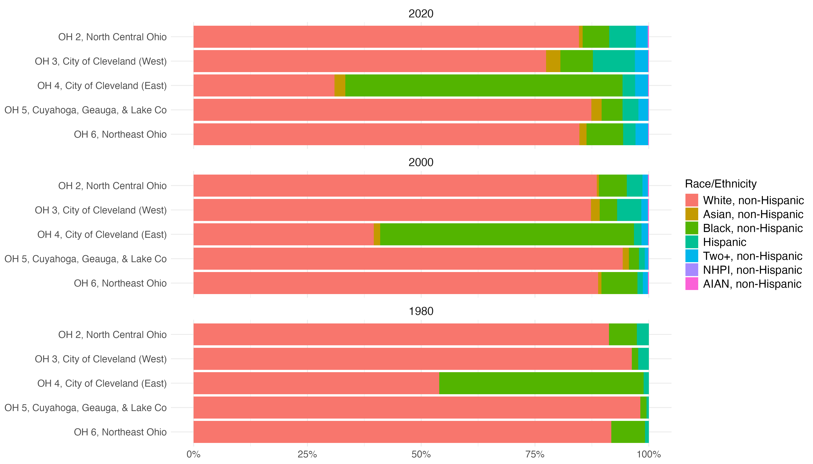
- Race/ethnicity categories not available in 1980 Census: Asian, non-Hispanic; Two+ races, non-Hispanic; NHPI, non-Hispanic; AIAN non-Hispanic
Research question 1
Socioeconomic characteristics of Cleveland area Geomarkets
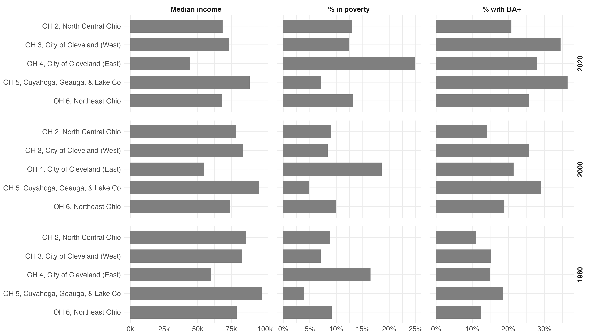
- Household income measured using 2024 CPI
Research question 1
Racial/ethnic and socioeconomic characteristics of Cleveland area Geomarkets over time
|
1980
|
2000
|
2020
|
||||||||||||||||
|---|---|---|---|---|---|---|---|---|---|---|---|---|---|---|---|---|---|---|
| Wt. Mean | Mean | SD | P25 | P50 | P75 | Wt. Mean | Mean | SD | P25 | P50 | P75 | Wt. Mean | Mean | SD | P25 | P50 | P75 | |
| % White, non-Hispanic | ||||||||||||||||||
| OH 2, North Central Ohio | 91.3 | 90.9 | 13.9 | 90.2 | 97.4 | 98.6 | 88.6 | 88.5 | 15.3 | 86.4 | 95.3 | 97.5 | 84.7 | 83.3 | 17.5 | 78.0 | 90.2 | 94.7 |
| OH 3, City of Cleveland (West) | 96.3 | 92.8 | 11.8 | 93.6 | 97.4 | 98.4 | 87.3 | 84.8 | 17.3 | 82.9 | 93.0 | 95.7 | 77.5 | 75.7 | 19.3 | 62.2 | 85.1 | 90.3 |
| OH 4, City of Cleveland (East) | 54.0 | 53.2 | 40.4 | 4.6 | 62.9 | 95.8 | 39.6 | 40.4 | 35.4 | 2.3 | 35.4 | 76.8 | 30.9 | 28.0 | 25.5 | 4.4 | 23.0 | 43.7 |
| OH 5, Cuyahoga, Geauga, & Lake Co | 98.1 | 95.1 | 10.5 | 97.1 | 98.2 | 98.8 | 94.3 | 90.6 | 15.9 | 92.2 | 96.6 | 97.7 | 87.4 | 86.3 | 13.8 | 84.1 | 91.0 | 95.7 |
| OH 6, Northeast Ohio | 91.8 | 88.1 | 22.0 | 92.0 | 97.6 | 98.9 | 88.9 | 86.3 | 21.7 | 88.3 | 95.5 | 97.7 | 84.8 | 81.9 | 20.7 | 78.9 | 90.3 | 95.3 |
| % Asian, non-Hispanic | ||||||||||||||||||
| OH 2, North Central Ohio | NA | NA | NA | NA | NA | NA | 0.5 | 0.5 | 0.8 | 0.1 | 0.3 | 0.7 | 0.8 | 0.8 | 1.6 | 0.0 | 0.0 | 0.7 |
| OH 3, City of Cleveland (West) | NA | NA | NA | NA | NA | NA | 1.9 | 1.7 | 1.3 | 0.8 | 1.3 | 2.2 | 3.1 | 2.9 | 3.6 | 0.8 | 2.0 | 4.0 |
| OH 4, City of Cleveland (East) | NA | NA | NA | NA | NA | NA | 1.4 | 1.9 | 5.4 | 0.1 | 0.5 | 1.6 | 2.4 | 2.2 | 5.2 | 0.0 | 0.3 | 1.6 |
| OH 5, Cuyahoga, Geauga, & Lake Co | NA | NA | NA | NA | NA | NA | 1.4 | 1.4 | 1.7 | 0.3 | 0.7 | 1.7 | 2.3 | 2.5 | 4.7 | 0.0 | 0.6 | 2.6 |
| OH 6, Northeast Ohio | NA | NA | NA | NA | NA | NA | 0.7 | 0.7 | 1.1 | 0.1 | 0.3 | 0.8 | 1.6 | 1.5 | 2.9 | 0.0 | 0.4 | 1.5 |
| % Black, non-Hispanic | ||||||||||||||||||
| OH 2, North Central Ohio | 6.1 | 6.0 | 11.0 | 0.2 | 1.0 | 4.8 | 6.1 | 6.1 | 11.2 | 0.3 | 1.1 | 6.2 | 5.8 | 6.4 | 9.9 | 0.3 | 1.5 | 8.6 |
| OH 3, City of Cleveland (West) | 1.4 | 2.6 | 9.9 | 0.1 | 0.2 | 0.9 | 3.9 | 5.3 | 10.2 | 0.5 | 1.2 | 6.0 | 7.2 | 8.0 | 9.9 | 1.3 | 3.8 | 11.3 |
| OH 4, City of Cleveland (East) | 44.9 | 43.6 | 41.4 | 1.5 | 33.8 | 93.5 | 55.8 | 53.1 | 37.7 | 12.8 | 55.6 | 94.8 | 60.9 | 63.5 | 28.9 | 42.9 | 69.9 | 90.1 |
| OH 5, Cuyahoga, Geauga, & Lake Co | 1.4 | 3.5 | 10.0 | 0.1 | 0.4 | 1.3 | 2.2 | 5.8 | 14.4 | 0.4 | 0.9 | 3.1 | 4.6 | 4.9 | 7.0 | 0.5 | 2.0 | 6.7 |
| OH 6, Northeast Ohio | 7.4 | 10.4 | 21.4 | 0.2 | 1.0 | 6.3 | 7.9 | 10.3 | 20.2 | 0.5 | 1.7 | 7.3 | 8.0 | 10.2 | 17.0 | 0.6 | 2.4 | 10.6 |
| % Hispanic | ||||||||||||||||||
| OH 2, North Central Ohio | 2.6 | 2.5 | 6.2 | 0.5 | 0.9 | 1.4 | 3.4 | 3.4 | 6.8 | 0.8 | 1.3 | 2.4 | 5.9 | 6.2 | 8.9 | 1.3 | 3.4 | 6.5 |
| OH 3, City of Cleveland (West) | 2.3 | 3.3 | 5.6 | 0.6 | 0.9 | 2.9 | 5.3 | 6.4 | 10.0 | 1.2 | 1.9 | 5.8 | 9.2 | 9.9 | 11.2 | 2.3 | 4.8 | 13.6 |
| OH 4, City of Cleveland (East) | 1.1 | 1.8 | 3.4 | 0.5 | 0.8 | 1.4 | 1.7 | 2.8 | 6.1 | 0.7 | 1.1 | 1.8 | 2.8 | 2.8 | 3.7 | 0.5 | 1.4 | 3.7 |
| OH 5, Cuyahoga, Geauga, & Lake Co | 0.5 | 0.5 | 0.6 | 0.3 | 0.4 | 0.6 | 1.3 | 1.2 | 2.3 | 0.5 | 0.7 | 1.0 | 3.5 | 3.7 | 6.1 | 1.0 | 1.7 | 4.3 |
| OH 6, Northeast Ohio | 0.8 | 0.9 | 1.8 | 0.4 | 0.6 | 0.9 | 1.2 | 1.3 | 2.3 | 0.6 | 0.8 | 1.2 | 2.7 | 3.1 | 4.6 | 0.6 | 1.7 | 3.8 |
| % Two+, non-Hispanic | ||||||||||||||||||
| OH 2, North Central Ohio | NA | NA | NA | NA | NA | NA | 1.2 | 1.1 | 0.9 | 0.6 | 0.8 | 1.3 | 2.6 | 2.8 | 3.3 | 0.8 | 2.1 | 3.9 |
| OH 3, City of Cleveland (West) | NA | NA | NA | NA | NA | NA | 1.5 | 1.5 | 1.1 | 0.7 | 1.2 | 2.0 | 2.9 | 3.0 | 2.3 | 1.3 | 2.5 | 4.0 |
| OH 4, City of Cleveland (East) | NA | NA | NA | NA | NA | NA | 1.4 | 1.5 | 1.0 | 0.8 | 1.3 | 2.0 | 2.8 | 2.7 | 2.6 | 0.9 | 2.1 | 3.7 |
| OH 5, Cuyahoga, Geauga, & Lake Co | NA | NA | NA | NA | NA | NA | 0.8 | 0.9 | 0.5 | 0.5 | 0.7 | 1.0 | 2.2 | 2.3 | 2.5 | 0.6 | 1.4 | 3.3 |
| OH 6, Northeast Ohio | NA | NA | NA | NA | NA | NA | 1.1 | 1.1 | 0.8 | 0.6 | 0.8 | 1.4 | 2.8 | 3.0 | 3.2 | 1.0 | 2.0 | 4.0 |
| % NHPI, non-Hispanic | ||||||||||||||||||
| OH 2, North Central Ohio | NA | NA | NA | NA | NA | NA | 0.0 | 0.0 | 0.0 | 0.0 | 0.0 | 0.0 | 0.0 | 0.0 | 0.2 | 0.0 | 0.0 | 0.0 |
| OH 3, City of Cleveland (West) | NA | NA | NA | NA | NA | NA | 0.0 | 0.0 | 0.0 | 0.0 | 0.0 | 0.0 | 0.0 | 0.0 | 0.1 | 0.0 | 0.0 | 0.0 |
| OH 4, City of Cleveland (East) | NA | NA | NA | NA | NA | NA | 0.0 | 0.0 | 0.0 | 0.0 | 0.0 | 0.0 | 0.0 | 0.0 | 0.1 | 0.0 | 0.0 | 0.0 |
| OH 5, Cuyahoga, Geauga, & Lake Co | NA | NA | NA | NA | NA | NA | 0.0 | 0.0 | 0.0 | 0.0 | 0.0 | 0.0 | 0.0 | 0.0 | 0.1 | 0.0 | 0.0 | 0.0 |
| OH 6, Northeast Ohio | NA | NA | NA | NA | NA | NA | 0.0 | 0.0 | 0.0 | 0.0 | 0.0 | 0.0 | 0.0 | 0.0 | 0.1 | 0.0 | 0.0 | 0.0 |
| % AIAN, non-Hispanic | ||||||||||||||||||
| OH 2, North Central Ohio | NA | NA | NA | NA | NA | NA | 0.2 | 0.2 | 0.2 | 0.1 | 0.1 | 0.3 | 0.2 | 0.2 | 0.5 | 0.0 | 0.0 | 0.2 |
| OH 3, City of Cleveland (West) | NA | NA | NA | NA | NA | NA | 0.2 | 0.2 | 0.2 | 0.1 | 0.1 | 0.3 | 0.1 | 0.1 | 0.3 | 0.0 | 0.0 | 0.0 |
| OH 4, City of Cleveland (East) | NA | NA | NA | NA | NA | NA | 0.1 | 0.2 | 0.2 | 0.0 | 0.1 | 0.2 | 0.1 | 0.2 | 0.5 | 0.0 | 0.0 | 0.1 |
| OH 5, Cuyahoga, Geauga, & Lake Co | NA | NA | NA | NA | NA | NA | 0.1 | 0.1 | 0.1 | 0.0 | 0.1 | 0.1 | 0.1 | 0.1 | 0.2 | 0.0 | 0.0 | 0.0 |
| OH 6, Northeast Ohio | NA | NA | NA | NA | NA | NA | 0.2 | 0.2 | 0.2 | 0.1 | 0.1 | 0.2 | 0.1 | 0.1 | 0.4 | 0.0 | 0.0 | 0.0 |
| Median income | ||||||||||||||||||
| OH 2, North Central Ohio | NA | 82.7 | 22.1 | 67.4 | 86.0 | 97.5 | NA | 80.9 | 23.4 | 65.2 | 78.3 | 95.2 | NA | 67.6 | 23.0 | 52.3 | 68.4 | 81.1 |
| OH 3, City of Cleveland (West) | NA | 83.4 | 27.1 | 62.1 | 83.1 | 105.6 | NA | 86.2 | 32.0 | 63.4 | 83.7 | 107.1 | NA | 76.3 | 30.5 | 53.4 | 73.6 | 93.0 |
| OH 4, City of Cleveland (East) | NA | 65.7 | 37.0 | 39.9 | 60.2 | 85.5 | NA | 62.1 | 38.3 | 36.7 | 54.8 | 79.9 | NA | 53.7 | 35.7 | 32.2 | 44.2 | 66.3 |
| OH 5, Cuyahoga, Geauga, & Lake Co | NA | 106.1 | 36.9 | 85.1 | 97.6 | 112.8 | NA | 109.9 | 52.7 | 80.2 | 95.4 | 118.8 | NA | 97.0 | 37.8 | 73.8 | 88.5 | 106.4 |
| OH 6, Northeast Ohio | NA | 78.0 | 25.0 | 62.2 | 78.9 | 93.2 | NA | 76.9 | 28.9 | 59.2 | 74.3 | 91.6 | NA | 68.9 | 28.6 | 50.3 | 68.0 | 83.5 |
| % in poverty | ||||||||||||||||||
| OH 2, North Central Ohio | 8.9 | 9.2 | 7.8 | 4.3 | 6.4 | 11.7 | 9.1 | 9.1 | 6.9 | 4.1 | 7.1 | 11.9 | 12.9 | 14.0 | 10.8 | 6.8 | 10.7 | 17.9 |
| OH 3, City of Cleveland (West) | 7.0 | 10.0 | 12.2 | 2.8 | 4.9 | 12.2 | 8.4 | 9.9 | 10.7 | 3.0 | 5.3 | 11.2 | 12.4 | 13.1 | 11.3 | 4.6 | 9.3 | 18.4 |
| OH 4, City of Cleveland (East) | 16.5 | 21.4 | 18.8 | 5.2 | 16.6 | 33.0 | 18.6 | 21.6 | 17.6 | 6.8 | 17.5 | 32.9 | 24.8 | 25.9 | 16.0 | 12.8 | 24.7 | 35.1 |
| OH 5, Cuyahoga, Geauga, & Lake Co | 4.0 | 4.6 | 3.2 | 2.5 | 3.6 | 6.2 | 4.8 | 5.2 | 3.5 | 2.8 | 4.4 | 6.5 | 7.1 | 7.1 | 5.1 | 3.8 | 5.8 | 8.7 |
| OH 6, Northeast Ohio | 9.1 | 11.2 | 10.4 | 4.5 | 7.3 | 13.2 | 9.9 | 11.3 | 10.1 | 4.7 | 7.7 | 13.7 | 13.2 | 14.9 | 12.2 | 6.6 | 10.4 | 20.0 |
| % with BA+ | ||||||||||||||||||
| OH 2, North Central Ohio | 11.0 | 11.5 | 8.2 | 5.8 | 9.3 | 14.7 | 14.1 | 14.6 | 10.5 | 8.3 | 11.4 | 18.7 | 20.9 | 19.3 | 12.1 | 10.7 | 16.5 | 24.3 |
| OH 3, City of Cleveland (West) | 15.3 | 13.1 | 9.6 | 5.2 | 10.0 | 18.6 | 25.7 | 23.8 | 14.2 | 12.5 | 21.8 | 33.2 | 34.5 | 32.6 | 17.2 | 18.4 | 30.8 | 46.1 |
| OH 4, City of Cleveland (East) | 14.8 | 12.2 | 14.4 | 3.0 | 5.8 | 15.6 | 21.4 | 19.6 | 19.1 | 6.0 | 12.5 | 29.2 | 28.0 | 26.2 | 21.9 | 10.3 | 16.4 | 37.3 |
| OH 5, Cuyahoga, Geauga, & Lake Co | 18.5 | 17.8 | 12.3 | 8.9 | 14.3 | 22.7 | 29.0 | 28.1 | 17.3 | 14.7 | 23.4 | 36.8 | 36.4 | 35.2 | 17.6 | 22.0 | 31.9 | 46.0 |
| OH 6, Northeast Ohio | 12.5 | 11.1 | 9.2 | 4.9 | 8.6 | 14.2 | 18.9 | 17.1 | 12.6 | 8.2 | 13.1 | 22.2 | 25.7 | 23.5 | 14.7 | 12.6 | 20.2 | 31.8 |
- Race/ethnicity categories not available in 1980 Census: Asian, non-Hispanic; Two+ races, non-Hispanic; NHPI, non-Hispanic; AIAN non-Hispanic
- Household income measured using 2024 CPI
Research question 1
Racial/ethnic and socioeconomic characteristics of Cleveland area Geomarkets over time
Fullscreen
- Race/ethnicity categories not available in 1980 Census: Asian, non-Hispanic; Two+ races, non-Hispanic; NHPI, non-Hispanic; AIAN non-Hispanic
- Household income measured using 2024 CPI
Dallas area
Research question 1
Racial/ethnic composition of Dallas area Geomarkets
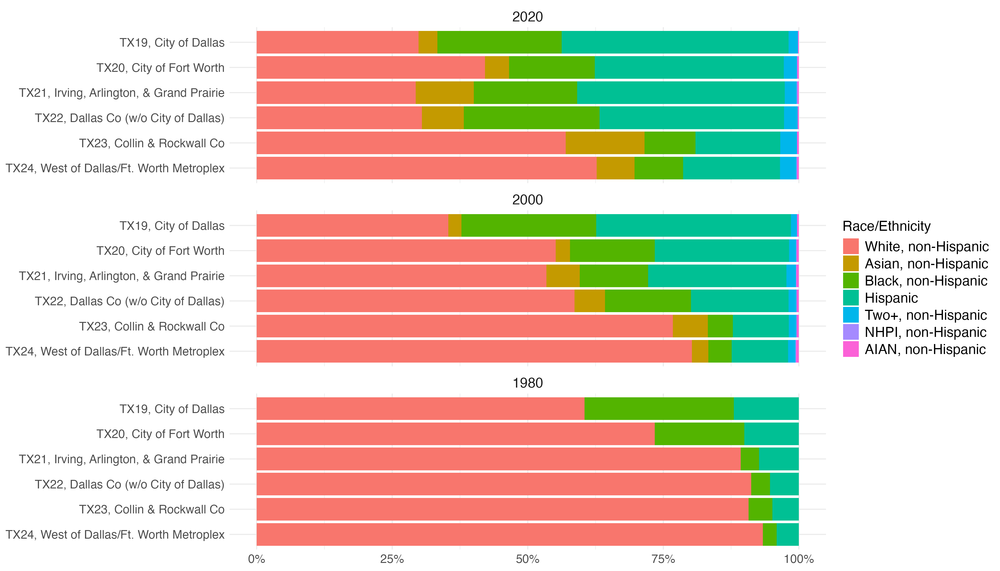
- Race/ethnicity categories not available in 1980 Census: Asian, non-Hispanic; Two+ races, non-Hispanic; NHPI, non-Hispanic; AIAN non-Hispanic
Research question 1
Socioeconomic characteristics of Dallas area Geomarkets
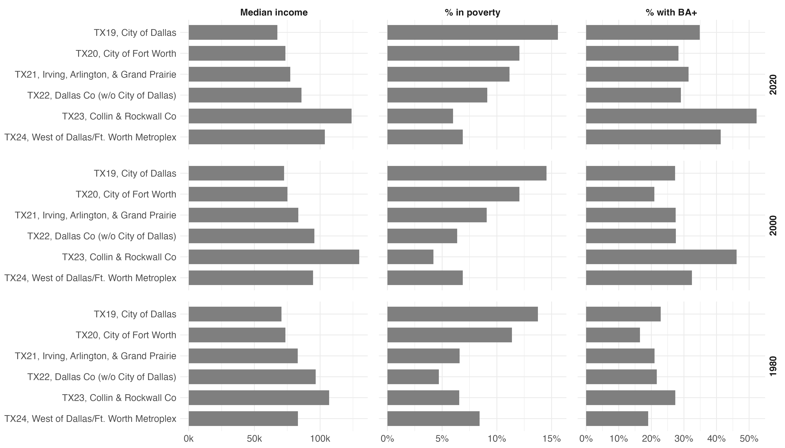
- Household income measured using 2024 CPI
Research question 1
Racial/ethnic and socioeconomic characteristics of Dallas area Geomarkets over time
|
1980
|
2000
|
2020
|
||||||||||||||||
|---|---|---|---|---|---|---|---|---|---|---|---|---|---|---|---|---|---|---|
| Wt. Mean | Mean | SD | P25 | P50 | P75 | Wt. Mean | Mean | SD | P25 | P50 | P75 | Wt. Mean | Mean | SD | P25 | P50 | P75 | |
| % White, non-Hispanic | ||||||||||||||||||
| TX19, City of Dallas | 60.5 | 62.9 | 34.9 | 32.0 | 79.4 | 92.1 | 35.4 | 41.1 | 31.0 | 12.6 | 36.6 | 66.2 | 29.9 | 34.5 | 28.9 | 9.7 | 23.6 | 57.8 |
| TX20, City of Fort Worth | 73.4 | 72.9 | 30.8 | 60.3 | 89.1 | 94.5 | 55.1 | 57.8 | 29.3 | 32.3 | 68.0 | 82.9 | 42.1 | 41.8 | 25.0 | 19.6 | 43.0 | 61.8 |
| TX21, Irving, Arlington, & Grand Prairie | 89.3 | 82.7 | 17.8 | 80.6 | 88.6 | 92.7 | 53.4 | 53.3 | 20.3 | 38.1 | 54.2 | 69.4 | 29.3 | 28.9 | 18.8 | 16.2 | 23.5 | 37.3 |
| TX22, Dallas Co (w/o City of Dallas) | 91.2 | 87.2 | 12.8 | 85.8 | 91.0 | 94.2 | 58.6 | 57.6 | 21.0 | 45.5 | 61.9 | 72.7 | 30.5 | 30.9 | 18.4 | 17.2 | 26.5 | 41.1 |
| TX23, Collin & Rockwall Co | 90.7 | 90.6 | 9.0 | 89.5 | 92.3 | 96.2 | 76.8 | 77.8 | 11.7 | 73.9 | 79.7 | 85.0 | 57.0 | 57.4 | 16.5 | 46.2 | 59.2 | 68.4 |
| TX24, West of Dallas/Ft. Worth Metroplex | 93.4 | 89.9 | 12.5 | 89.2 | 93.7 | 95.9 | 80.3 | 78.9 | 13.3 | 71.3 | 82.5 | 89.2 | 62.7 | 62.9 | 18.9 | 48.2 | 64.6 | 78.9 |
| % Asian, non-Hispanic | ||||||||||||||||||
| TX19, City of Dallas | NA | NA | NA | NA | NA | NA | 2.4 | 2.8 | 4.3 | 0.3 | 1.1 | 3.1 | 3.4 | 3.7 | 5.4 | 0.0 | 1.8 | 5.1 |
| TX20, City of Fort Worth | NA | NA | NA | NA | NA | NA | 2.7 | 2.5 | 2.6 | 0.8 | 1.7 | 3.4 | 4.4 | 4.2 | 5.3 | 0.5 | 2.5 | 5.6 |
| TX21, Irving, Arlington, & Grand Prairie | NA | NA | NA | NA | NA | NA | 6.2 | 5.8 | 5.1 | 2.1 | 4.4 | 7.8 | 10.7 | 11.6 | 16.3 | 2.4 | 5.2 | 13.3 |
| TX22, Dallas Co (w/o City of Dallas) | NA | NA | NA | NA | NA | NA | 5.6 | 5.5 | 5.8 | 1.2 | 2.9 | 8.6 | 7.7 | 7.9 | 9.6 | 0.7 | 4.1 | 12.2 |
| TX23, Collin & Rockwall Co | NA | NA | NA | NA | NA | NA | 6.5 | 6.0 | 5.7 | 1.3 | 5.0 | 9.0 | 14.5 | 14.1 | 13.9 | 3.4 | 10.5 | 20.0 |
| TX24, West of Dallas/Ft. Worth Metroplex | NA | NA | NA | NA | NA | NA | 3.0 | 3.2 | 4.1 | 0.4 | 1.7 | 4.3 | 7.0 | 6.8 | 8.7 | 0.8 | 3.6 | 9.8 |
| % Black, non-Hispanic | ||||||||||||||||||
| TX19, City of Dallas | 27.5 | 23.8 | 34.5 | 1.0 | 4.2 | 29.6 | 24.9 | 24.7 | 28.6 | 3.5 | 11.3 | 36.9 | 23.0 | 21.1 | 22.2 | 3.5 | 13.6 | 32.4 |
| TX20, City of Fort Worth | 16.5 | 16.2 | 28.9 | 0.5 | 2.1 | 14.0 | 15.6 | 16.2 | 22.8 | 2.0 | 4.8 | 23.0 | 15.8 | 16.2 | 16.6 | 3.9 | 9.6 | 24.3 |
| TX21, Irving, Arlington, & Grand Prairie | 3.4 | 5.5 | 10.9 | 0.8 | 1.7 | 5.4 | 12.6 | 12.6 | 10.1 | 5.0 | 9.6 | 17.0 | 19.1 | 19.3 | 14.5 | 7.8 | 16.0 | 28.7 |
| TX22, Dallas Co (w/o City of Dallas) | 3.5 | 5.6 | 11.9 | 0.8 | 2.2 | 4.9 | 15.8 | 15.3 | 15.6 | 5.2 | 9.7 | 18.3 | 25.0 | 25.2 | 21.2 | 9.9 | 18.9 | 31.2 |
| TX23, Collin & Rockwall Co | 4.4 | 3.7 | 5.2 | 0.6 | 2.4 | 4.0 | 4.6 | 4.6 | 3.1 | 2.4 | 4.2 | 5.9 | 9.4 | 9.2 | 6.9 | 4.0 | 7.7 | 13.4 |
| TX24, West of Dallas/Ft. Worth Metroplex | 2.5 | 4.1 | 11.4 | 0.3 | 0.9 | 3.7 | 4.3 | 5.4 | 7.8 | 1.2 | 3.0 | 6.7 | 8.9 | 8.7 | 9.5 | 1.5 | 5.5 | 12.5 |
| % Hispanic | ||||||||||||||||||
| TX19, City of Dallas | 12.0 | 11.8 | 15.5 | 2.6 | 5.3 | 12.8 | 35.9 | 29.8 | 25.9 | 9.9 | 20.6 | 45.1 | 41.8 | 38.4 | 26.7 | 14.6 | 32.2 | 60.9 |
| TX20, City of Fort Worth | 10.0 | 9.7 | 14.8 | 2.7 | 4.5 | 8.3 | 24.8 | 21.6 | 21.4 | 8.3 | 13.0 | 25.1 | 34.9 | 35.0 | 22.8 | 16.6 | 27.9 | 47.8 |
| TX21, Irving, Arlington, & Grand Prairie | 7.3 | 9.6 | 14.0 | 3.5 | 5.4 | 9.3 | 25.5 | 26.0 | 19.6 | 9.8 | 18.5 | 39.4 | 38.3 | 37.3 | 24.3 | 16.1 | 30.4 | 59.1 |
| TX22, Dallas Co (w/o City of Dallas) | 5.3 | 5.6 | 3.9 | 2.8 | 4.5 | 7.2 | 18.0 | 19.6 | 16.0 | 8.9 | 14.1 | 25.4 | 34.0 | 33.1 | 19.7 | 17.9 | 29.6 | 45.4 |
| TX23, Collin & Rockwall Co | 4.9 | 4.3 | 4.8 | 2.0 | 2.8 | 4.6 | 10.4 | 9.6 | 9.1 | 5.1 | 6.5 | 10.3 | 15.6 | 15.8 | 12.4 | 7.2 | 12.0 | 20.8 |
| TX24, West of Dallas/Ft. Worth Metroplex | 4.1 | 4.6 | 3.3 | 2.5 | 3.5 | 5.6 | 10.4 | 10.3 | 6.5 | 5.8 | 8.6 | 13.2 | 17.9 | 18.1 | 12.4 | 9.2 | 15.2 | 23.2 |
| % Two+, non-Hispanic | ||||||||||||||||||
| TX19, City of Dallas | NA | NA | NA | NA | NA | NA | 1.1 | 1.1 | 0.8 | 0.6 | 1.0 | 1.5 | 1.7 | 1.9 | 2.2 | 0.1 | 1.1 | 2.9 |
| TX20, City of Fort Worth | NA | NA | NA | NA | NA | NA | 1.3 | 1.3 | 0.6 | 0.9 | 1.2 | 1.6 | 2.4 | 2.2 | 2.0 | 0.6 | 1.8 | 3.4 |
| TX21, Irving, Arlington, & Grand Prairie | NA | NA | NA | NA | NA | NA | 1.7 | 1.7 | 0.7 | 1.2 | 1.6 | 2.0 | 2.2 | 2.2 | 2.0 | 0.6 | 1.8 | 3.3 |
| TX22, Dallas Co (w/o City of Dallas) | NA | NA | NA | NA | NA | NA | 1.5 | 1.4 | 0.6 | 1.1 | 1.3 | 1.7 | 2.5 | 2.4 | 2.1 | 0.8 | 2.0 | 3.5 |
| TX23, Collin & Rockwall Co | NA | NA | NA | NA | NA | NA | 1.4 | 1.4 | 0.5 | 1.1 | 1.3 | 1.6 | 3.1 | 3.0 | 2.9 | 1.2 | 2.2 | 3.8 |
| TX24, West of Dallas/Ft. Worth Metroplex | NA | NA | NA | NA | NA | NA | 1.3 | 1.4 | 0.6 | 1.0 | 1.3 | 1.6 | 3.0 | 2.9 | 2.6 | 1.3 | 2.3 | 3.8 |
| % NHPI, non-Hispanic | ||||||||||||||||||
| TX19, City of Dallas | NA | NA | NA | NA | NA | NA | 0.0 | 0.0 | 0.1 | 0.0 | 0.0 | 0.0 | 0.0 | 0.0 | 0.2 | 0.0 | 0.0 | 0.0 |
| TX20, City of Fort Worth | NA | NA | NA | NA | NA | NA | 0.1 | 0.1 | 0.1 | 0.0 | 0.0 | 0.1 | 0.1 | 0.1 | 0.7 | 0.0 | 0.0 | 0.0 |
| TX21, Irving, Arlington, & Grand Prairie | NA | NA | NA | NA | NA | NA | 0.1 | 0.1 | 0.1 | 0.0 | 0.0 | 0.1 | 0.2 | 0.2 | 0.9 | 0.0 | 0.0 | 0.0 |
| TX22, Dallas Co (w/o City of Dallas) | NA | NA | NA | NA | NA | NA | 0.0 | 0.0 | 0.1 | 0.0 | 0.0 | 0.1 | 0.0 | 0.0 | 0.2 | 0.0 | 0.0 | 0.0 |
| TX23, Collin & Rockwall Co | NA | NA | NA | NA | NA | NA | 0.0 | 0.0 | 0.0 | 0.0 | 0.0 | 0.1 | 0.1 | 0.1 | 0.2 | 0.0 | 0.0 | 0.0 |
| TX24, West of Dallas/Ft. Worth Metroplex | NA | NA | NA | NA | NA | NA | 0.1 | 0.1 | 0.5 | 0.0 | 0.0 | 0.1 | 0.1 | 0.1 | 0.7 | 0.0 | 0.0 | 0.0 |
| % AIAN, non-Hispanic | ||||||||||||||||||
| TX19, City of Dallas | NA | NA | NA | NA | NA | NA | 0.3 | 0.3 | 0.2 | 0.2 | 0.3 | 0.4 | 0.2 | 0.2 | 0.4 | 0.0 | 0.0 | 0.2 |
| TX20, City of Fort Worth | NA | NA | NA | NA | NA | NA | 0.4 | 0.4 | 0.2 | 0.3 | 0.4 | 0.5 | 0.3 | 0.3 | 0.7 | 0.0 | 0.0 | 0.2 |
| TX21, Irving, Arlington, & Grand Prairie | NA | NA | NA | NA | NA | NA | 0.5 | 0.5 | 0.2 | 0.3 | 0.4 | 0.5 | 0.2 | 0.2 | 0.7 | 0.0 | 0.0 | 0.2 |
| TX22, Dallas Co (w/o City of Dallas) | NA | NA | NA | NA | NA | NA | 0.4 | 0.4 | 0.2 | 0.3 | 0.4 | 0.5 | 0.2 | 0.2 | 0.6 | 0.0 | 0.0 | 0.2 |
| TX23, Collin & Rockwall Co | NA | NA | NA | NA | NA | NA | 0.4 | 0.4 | 0.2 | 0.2 | 0.4 | 0.5 | 0.3 | 0.3 | 0.5 | 0.0 | 0.0 | 0.3 |
| TX24, West of Dallas/Ft. Worth Metroplex | NA | NA | NA | NA | NA | NA | 0.5 | 0.5 | 0.2 | 0.3 | 0.5 | 0.6 | 0.3 | 0.3 | 0.6 | 0.0 | 0.0 | 0.4 |
| Median income | ||||||||||||||||||
| TX19, City of Dallas | NA | 84.2 | 52.0 | 54.4 | 70.6 | 96.2 | NA | 87.7 | 56.5 | 56.5 | 72.6 | 97.2 | NA | 86.2 | 56.9 | 49.7 | 67.5 | 101.7 |
| TX20, City of Fort Worth | NA | 78.1 | 36.7 | 53.3 | 73.6 | 95.8 | NA | 83.1 | 40.8 | 56.7 | 75.2 | 99.7 | NA | 80.9 | 33.9 | 54.2 | 73.6 | 102.7 |
| TX21, Irving, Arlington, & Grand Prairie | NA | 83.9 | 22.4 | 68.0 | 83.0 | 101.1 | NA | 91.6 | 36.0 | 66.7 | 83.4 | 112.1 | NA | 83.6 | 34.9 | 57.6 | 77.3 | 100.0 |
| TX22, Dallas Co (w/o City of Dallas) | NA | 99.8 | 28.5 | 82.5 | 96.6 | 111.8 | NA | 101.9 | 38.3 | 75.8 | 95.6 | 121.4 | NA | 90.8 | 32.1 | 68.3 | 85.8 | 105.4 |
| TX23, Collin & Rockwall Co | NA | 109.9 | 34.9 | 85.5 | 106.8 | 127.5 | NA | 136.6 | 48.4 | 98.4 | 129.7 | 162.1 | NA | 128.6 | 47.3 | 93.3 | 124.0 | 158.3 |
| TX24, West of Dallas/Ft. Worth Metroplex | NA | 86.4 | 25.1 | 70.6 | 83.1 | 100.6 | NA | 108.2 | 48.8 | 75.8 | 94.6 | 128.8 | NA | 119.5 | 54.6 | 79.7 | 103.6 | 146.0 |
| % in poverty | ||||||||||||||||||
| TX19, City of Dallas | 13.8 | 14.2 | 14.2 | 4.4 | 8.1 | 19.6 | 14.5 | 14.8 | 12.5 | 6.1 | 11.6 | 20.0 | 15.6 | 15.4 | 10.8 | 6.4 | 13.8 | 22.2 |
| TX20, City of Fort Worth | 11.4 | 12.2 | 11.2 | 4.2 | 8.5 | 16.1 | 12.1 | 12.8 | 10.9 | 4.9 | 9.2 | 17.3 | 12.1 | 13.3 | 10.2 | 6.0 | 10.8 | 19.3 |
| TX21, Irving, Arlington, & Grand Prairie | 6.6 | 8.6 | 7.1 | 4.0 | 6.1 | 11.4 | 9.1 | 9.8 | 7.6 | 4.3 | 7.8 | 13.6 | 11.2 | 11.5 | 8.8 | 4.9 | 9.4 | 16.1 |
| TX22, Dallas Co (w/o City of Dallas) | 4.7 | 5.7 | 4.3 | 3.0 | 4.3 | 6.9 | 6.4 | 7.4 | 5.4 | 3.4 | 6.2 | 10.1 | 9.1 | 9.4 | 8.1 | 3.9 | 7.6 | 13.0 |
| TX23, Collin & Rockwall Co | 6.6 | 6.3 | 5.7 | 2.5 | 4.4 | 8.3 | 4.2 | 4.6 | 3.8 | 1.9 | 3.5 | 6.5 | 6.0 | 6.3 | 7.4 | 2.5 | 4.8 | 7.9 |
| TX24, West of Dallas/Ft. Worth Metroplex | 8.4 | 8.4 | 6.6 | 4.0 | 6.9 | 11.5 | 6.9 | 7.3 | 6.6 | 2.7 | 6.0 | 9.8 | 6.9 | 7.2 | 6.9 | 2.6 | 5.4 | 9.5 |
| % with BA+ | ||||||||||||||||||
| TX19, City of Dallas | 22.9 | 20.6 | 17.8 | 5.0 | 13.6 | 32.2 | 27.3 | 27.3 | 23.7 | 6.9 | 20.0 | 42.8 | 34.9 | 36.6 | 28.5 | 10.6 | 28.1 | 62.6 |
| TX20, City of Fort Worth | 16.5 | 16.0 | 13.6 | 5.1 | 12.1 | 24.5 | 20.9 | 21.9 | 16.5 | 8.5 | 16.6 | 34.0 | 28.3 | 27.9 | 19.7 | 11.0 | 24.7 | 40.0 |
| TX21, Irving, Arlington, & Grand Prairie | 21.0 | 17.7 | 11.6 | 8.1 | 15.0 | 25.0 | 27.5 | 26.2 | 16.4 | 11.3 | 25.6 | 36.8 | 31.4 | 31.8 | 20.2 | 15.0 | 29.1 | 44.1 |
| TX22, Dallas Co (w/o City of Dallas) | 21.6 | 21.4 | 14.0 | 10.4 | 18.1 | 31.4 | 27.5 | 27.1 | 17.3 | 14.0 | 22.8 | 37.3 | 29.1 | 29.1 | 18.1 | 15.8 | 25.0 | 35.7 |
| TX23, Collin & Rockwall Co | 27.3 | 27.8 | 15.2 | 15.5 | 25.1 | 40.7 | 46.2 | 43.3 | 19.0 | 26.9 | 48.1 | 60.0 | 52.3 | 51.9 | 17.1 | 41.4 | 54.5 | 64.7 |
| TX24, West of Dallas/Ft. Worth Metroplex | 19.0 | 18.6 | 12.4 | 8.9 | 13.7 | 26.9 | 32.5 | 30.2 | 16.7 | 15.9 | 28.1 | 41.1 | 41.3 | 40.7 | 17.6 | 26.2 | 39.6 | 53.6 |
- Race/ethnicity categories not available in 1980 Census: Asian, non-Hispanic; Two+ races, non-Hispanic; NHPI, non-Hispanic; AIAN non-Hispanic
- Household income measured using 2024 CPI
Research question 1
Racial/ethnic and socioeconomic characteristics of Dallas area Geomarkets over time
Fullscreen
- Race/ethnicity categories not available in 1980 Census: Asian, non-Hispanic; Two+ races, non-Hispanic; NHPI, non-Hispanic; AIAN non-Hispanic
- Household income measured using 2024 CPI
D.C., Maryland, and Virginia
Research question 1
Racial/ethnic composition of D.C., Maryland, and Virginia area Geomarkets
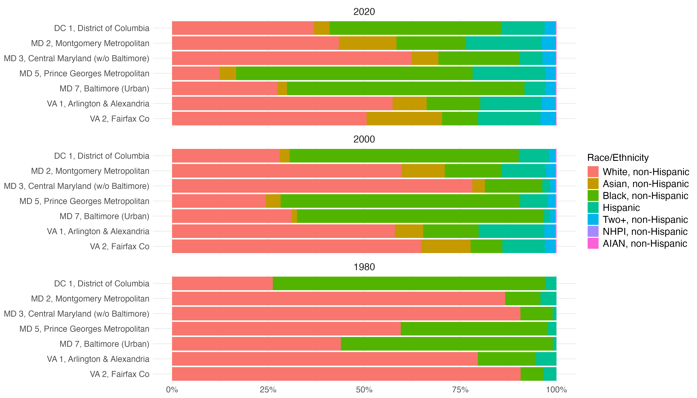
- Race/ethnicity categories not available in 1980 Census: Asian, non-Hispanic; Two+ races, non-Hispanic; NHPI, non-Hispanic; AIAN non-Hispanic
Research question 1
Socioeconomic characteristics of D.C., Maryland, and Virginia area Geomarkets
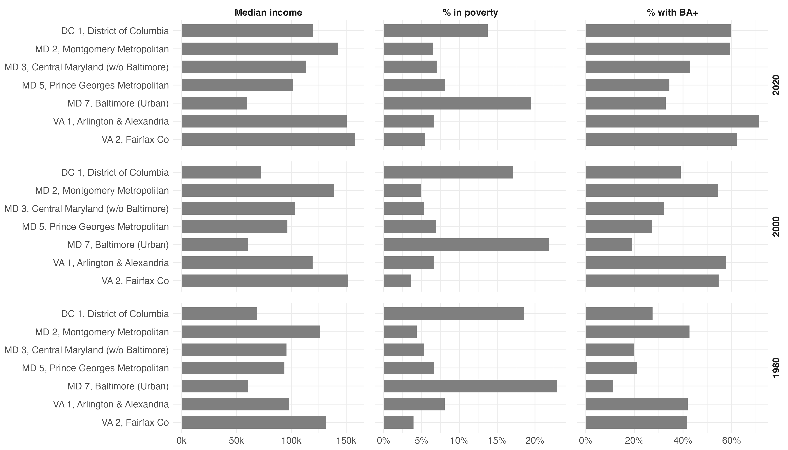
- Household income measured using 2024 CPI
Research question 1
Racial/ethnic and socioeconomic characteristics of D.C., Maryland, and Virginia Geomarkets over time
|
1980
|
2000
|
2020
|
||||||||||||||||
|---|---|---|---|---|---|---|---|---|---|---|---|---|---|---|---|---|---|---|
| Wt. Mean | Mean | SD | P25 | P50 | P75 | Wt. Mean | Mean | SD | P25 | P50 | P75 | Wt. Mean | Mean | SD | P25 | P50 | P75 | |
| % White, non-Hispanic | ||||||||||||||||||
| DC 1, District of Columbia | 26.2 | 30.4 | 33.7 | 2.2 | 12.9 | 61.7 | 27.9 | 26.4 | 31.8 | 1.2 | 6.8 | 53.9 | 36.9 | 38.6 | 28.8 | 8.3 | 41.4 | 66.2 |
| MD 2, Montgomery Metropolitan | 86.6 | 80.9 | 16.0 | 79.0 | 85.8 | 90.2 | 59.6 | 61.1 | 23.4 | 44.7 | 64.5 | 81.0 | 43.4 | 44.7 | 21.9 | 26.6 | 43.1 | 63.7 |
| MD 3, Central Maryland (w/o Baltimore) | 90.6 | 88.3 | 16.6 | 86.8 | 94.6 | 97.6 | 78.1 | 76.9 | 23.5 | 67.3 | 87.2 | 93.6 | 62.3 | 64.1 | 24.4 | 50.6 | 68.7 | 84.8 |
| MD 5, Prince Georges Metropolitan | 59.5 | 52.7 | 32.0 | 21.0 | 61.8 | 80.9 | 24.4 | 25.7 | 25.6 | 4.7 | 15.9 | 40.1 | 12.4 | 12.2 | 14.4 | 2.7 | 6.8 | 14.9 |
| MD 7, Baltimore (Urban) | 43.9 | 55.3 | 40.7 | 4.8 | 70.3 | 95.9 | 31.0 | 39.5 | 36.1 | 2.8 | 31.3 | 76.4 | 27.4 | 27.2 | 27.6 | 3.9 | 15.4 | 45.6 |
| VA 1, Arlington & Alexandria | 79.5 | 75.6 | 20.8 | 71.3 | 83.1 | 90.3 | 57.9 | 60.6 | 22.7 | 43.2 | 62.8 | 80.8 | 57.4 | 58.6 | 19.4 | 46.8 | 61.4 | 73.7 |
| VA 2, Fairfax Co | 90.7 | 86.2 | 10.8 | 84.5 | 89.3 | 92.3 | 64.7 | 66.3 | 17.6 | 57.5 | 69.7 | 78.8 | 50.6 | 52.3 | 17.4 | 40.0 | 52.3 | 66.0 |
| % Asian, non-Hispanic | ||||||||||||||||||
| DC 1, District of Columbia | NA | NA | NA | NA | NA | NA | 2.6 | 3.4 | 10.0 | 0.3 | 1.1 | 3.5 | 4.1 | 4.2 | 5.0 | 0.6 | 2.7 | 5.8 |
| MD 2, Montgomery Metropolitan | NA | NA | NA | NA | NA | NA | 11.3 | 9.5 | 6.6 | 4.8 | 8.7 | 12.5 | 15.0 | 14.7 | 10.3 | 6.9 | 12.9 | 19.4 |
| MD 3, Central Maryland (w/o Baltimore) | NA | NA | NA | NA | NA | NA | 3.3 | 2.8 | 3.2 | 0.8 | 1.7 | 3.6 | 7.0 | 6.3 | 7.5 | 1.3 | 3.5 | 8.4 |
| MD 5, Prince Georges Metropolitan | NA | NA | NA | NA | NA | NA | 3.9 | 3.5 | 4.0 | 0.7 | 1.9 | 5.0 | 4.2 | 3.9 | 4.9 | 0.8 | 1.9 | 5.6 |
| MD 7, Baltimore (Urban) | NA | NA | NA | NA | NA | NA | 1.5 | 1.6 | 2.5 | 0.3 | 0.9 | 1.8 | 2.5 | 2.4 | 3.6 | 0.0 | 0.9 | 3.4 |
| VA 1, Arlington & Alexandria | NA | NA | NA | NA | NA | NA | 7.4 | 7.3 | 5.0 | 3.3 | 6.7 | 10.0 | 8.9 | 9.3 | 6.6 | 4.0 | 8.2 | 12.9 |
| VA 2, Fairfax Co | NA | NA | NA | NA | NA | NA | 12.9 | 11.0 | 6.2 | 6.4 | 10.6 | 14.4 | 19.6 | 19.1 | 10.8 | 10.6 | 17.5 | 25.7 |
| % Black, non-Hispanic | ||||||||||||||||||
| DC 1, District of Columbia | 71.0 | 64.5 | 36.7 | 26.7 | 83.7 | 95.7 | 59.6 | 61.2 | 36.5 | 23.5 | 76.1 | 95.3 | 44.8 | 43.1 | 33.7 | 10.8 | 34.6 | 77.5 |
| MD 2, Montgomery Metropolitan | 9.2 | 10.8 | 14.6 | 2.7 | 5.7 | 13.1 | 14.9 | 15.4 | 15.7 | 4.7 | 10.8 | 19.1 | 18.1 | 17.3 | 14.3 | 6.2 | 13.8 | 24.5 |
| MD 3, Central Maryland (w/o Baltimore) | 8.4 | 9.4 | 16.3 | 0.7 | 2.9 | 10.4 | 14.9 | 16.6 | 22.6 | 2.2 | 6.2 | 20.2 | 21.1 | 20.2 | 22.3 | 3.9 | 11.7 | 27.9 |
| MD 5, Prince Georges Metropolitan | 38.3 | 42.3 | 33.5 | 13.4 | 31.0 | 73.5 | 62.3 | 61.7 | 29.1 | 37.5 | 67.9 | 90.8 | 61.6 | 61.8 | 24.2 | 42.0 | 69.4 | 81.9 |
| MD 7, Baltimore (Urban) | 55.1 | 42.4 | 41.1 | 1.6 | 27.5 | 93.8 | 64.2 | 55.3 | 38.1 | 12.3 | 64.2 | 94.8 | 61.8 | 62.2 | 33.1 | 31.1 | 74.3 | 91.0 |
| VA 1, Arlington & Alexandria | 15.1 | 14.8 | 20.9 | 2.3 | 6.4 | 15.0 | 14.4 | 14.4 | 13.6 | 3.8 | 8.7 | 22.5 | 14.0 | 13.3 | 12.6 | 3.8 | 10.3 | 18.1 |
| VA 2, Fairfax Co | 5.9 | 6.1 | 9.3 | 1.5 | 2.9 | 7.7 | 8.3 | 8.7 | 9.9 | 3.0 | 5.3 | 10.5 | 9.4 | 8.8 | 8.5 | 2.8 | 5.9 | 11.3 |
| % Hispanic | ||||||||||||||||||
| DC 1, District of Columbia | 2.8 | 2.8 | 3.1 | 0.9 | 1.6 | 3.8 | 7.9 | 6.8 | 8.6 | 1.2 | 3.7 | 8.4 | 11.2 | 10.5 | 8.3 | 4.6 | 8.6 | 14.0 |
| MD 2, Montgomery Metropolitan | 4.1 | 3.7 | 2.7 | 2.0 | 3.1 | 4.5 | 11.6 | 11.2 | 10.8 | 4.2 | 7.2 | 13.4 | 19.7 | 18.8 | 14.7 | 8.3 | 13.6 | 25.5 |
| MD 3, Central Maryland (w/o Baltimore) | 1.0 | 0.9 | 0.7 | 0.5 | 0.8 | 1.1 | 2.1 | 2.0 | 1.5 | 1.0 | 1.5 | 2.4 | 5.9 | 5.6 | 5.1 | 2.1 | 4.1 | 7.4 |
| MD 5, Prince Georges Metropolitan | 2.2 | 2.1 | 2.2 | 1.0 | 1.7 | 2.3 | 7.1 | 6.7 | 10.8 | 1.4 | 2.5 | 6.4 | 18.9 | 18.7 | 18.8 | 5.6 | 11.6 | 25.8 |
| MD 7, Baltimore (Urban) | 1.0 | 1.0 | 0.6 | 0.6 | 0.9 | 1.2 | 1.7 | 1.8 | 2.5 | 0.7 | 1.2 | 1.9 | 5.4 | 5.2 | 7.3 | 0.8 | 3.1 | 6.6 |
| VA 1, Arlington & Alexandria | 5.3 | 4.5 | 2.9 | 2.7 | 3.7 | 5.8 | 17.1 | 14.3 | 13.1 | 5.1 | 10.4 | 19.7 | 15.9 | 14.5 | 10.7 | 7.6 | 11.0 | 18.1 |
| VA 2, Fairfax Co | 3.4 | 3.2 | 1.9 | 1.9 | 2.8 | 3.7 | 11.1 | 10.8 | 9.1 | 4.4 | 8.0 | 13.6 | 16.3 | 15.2 | 12.5 | 6.5 | 11.3 | 21.2 |
| % Two+, non-Hispanic | ||||||||||||||||||
| DC 1, District of Columbia | NA | NA | NA | NA | NA | NA | 1.7 | 1.7 | 1.0 | 1.0 | 1.5 | 2.3 | 2.9 | 2.9 | 2.5 | 1.1 | 2.3 | 3.9 |
| MD 2, Montgomery Metropolitan | NA | NA | NA | NA | NA | NA | 2.4 | 2.3 | 0.9 | 1.7 | 2.2 | 2.8 | 3.7 | 3.7 | 2.3 | 1.9 | 3.3 | 5.0 |
| MD 3, Central Maryland (w/o Baltimore) | NA | NA | NA | NA | NA | NA | 1.4 | 1.3 | 0.7 | 0.7 | 1.2 | 1.6 | 3.4 | 3.2 | 2.6 | 1.4 | 2.5 | 4.5 |
| MD 5, Prince Georges Metropolitan | NA | NA | NA | NA | NA | NA | 2.0 | 1.9 | 0.8 | 1.3 | 1.8 | 2.4 | 2.7 | 2.7 | 3.0 | 0.8 | 1.9 | 3.6 |
| MD 7, Baltimore (Urban) | NA | NA | NA | NA | NA | NA | 1.3 | 1.3 | 0.8 | 0.8 | 1.2 | 1.6 | 2.6 | 2.4 | 2.5 | 0.6 | 1.8 | 3.5 |
| VA 1, Arlington & Alexandria | NA | NA | NA | NA | NA | NA | 2.9 | 2.8 | 1.8 | 1.6 | 2.3 | 3.5 | 3.7 | 3.6 | 2.5 | 1.7 | 3.1 | 4.7 |
| VA 2, Fairfax Co | NA | NA | NA | NA | NA | NA | 2.7 | 2.6 | 1.2 | 1.9 | 2.5 | 3.2 | 4.0 | 4.0 | 2.8 | 2.0 | 3.6 | 5.4 |
| % NHPI, non-Hispanic | ||||||||||||||||||
| DC 1, District of Columbia | NA | NA | NA | NA | NA | NA | 0.0 | 0.1 | 0.2 | 0.0 | 0.0 | 0.1 | 0.0 | 0.0 | 0.3 | 0.0 | 0.0 | 0.0 |
| MD 2, Montgomery Metropolitan | NA | NA | NA | NA | NA | NA | 0.0 | 0.0 | 0.1 | 0.0 | 0.0 | 0.1 | 0.0 | 0.0 | 0.2 | 0.0 | 0.0 | 0.0 |
| MD 3, Central Maryland (w/o Baltimore) | NA | NA | NA | NA | NA | NA | 0.0 | 0.0 | 0.1 | 0.0 | 0.0 | 0.0 | 0.0 | 0.0 | 0.2 | 0.0 | 0.0 | 0.0 |
| MD 5, Prince Georges Metropolitan | NA | NA | NA | NA | NA | NA | 0.0 | 0.0 | 0.1 | 0.0 | 0.0 | 0.1 | 0.0 | 0.0 | 0.2 | 0.0 | 0.0 | 0.0 |
| MD 7, Baltimore (Urban) | NA | NA | NA | NA | NA | NA | 0.0 | 0.0 | 0.1 | 0.0 | 0.0 | 0.0 | 0.0 | 0.0 | 0.1 | 0.0 | 0.0 | 0.0 |
| VA 1, Arlington & Alexandria | NA | NA | NA | NA | NA | NA | 0.1 | 0.1 | 0.1 | 0.0 | 0.1 | 0.1 | 0.1 | 0.1 | 0.4 | 0.0 | 0.0 | 0.0 |
| VA 2, Fairfax Co | NA | NA | NA | NA | NA | NA | 0.1 | 0.1 | 0.1 | 0.0 | 0.0 | 0.1 | 0.1 | 0.1 | 0.3 | 0.0 | 0.0 | 0.0 |
| % AIAN, non-Hispanic | ||||||||||||||||||
| DC 1, District of Columbia | NA | NA | NA | NA | NA | NA | 0.2 | 0.2 | 0.2 | 0.1 | 0.2 | 0.3 | 0.2 | 0.2 | 0.5 | 0.0 | 0.0 | 0.0 |
| MD 2, Montgomery Metropolitan | NA | NA | NA | NA | NA | NA | 0.2 | 0.2 | 0.1 | 0.1 | 0.2 | 0.3 | 0.1 | 0.1 | 0.4 | 0.0 | 0.0 | 0.0 |
| MD 3, Central Maryland (w/o Baltimore) | NA | NA | NA | NA | NA | NA | 0.2 | 0.3 | 0.2 | 0.1 | 0.2 | 0.3 | 0.2 | 0.2 | 0.5 | 0.0 | 0.0 | 0.1 |
| MD 5, Prince Georges Metropolitan | NA | NA | NA | NA | NA | NA | 0.3 | 0.3 | 0.2 | 0.2 | 0.3 | 0.4 | 0.2 | 0.2 | 0.7 | 0.0 | 0.0 | 0.0 |
| MD 7, Baltimore (Urban) | NA | NA | NA | NA | NA | NA | 0.3 | 0.3 | 0.4 | 0.1 | 0.2 | 0.4 | 0.3 | 0.3 | 1.0 | 0.0 | 0.0 | 0.1 |
| VA 1, Arlington & Alexandria | NA | NA | NA | NA | NA | NA | 0.2 | 0.2 | 0.1 | 0.1 | 0.2 | 0.3 | 0.2 | 0.2 | 0.6 | 0.0 | 0.0 | 0.0 |
| VA 2, Fairfax Co | NA | NA | NA | NA | NA | NA | 0.2 | 0.2 | 0.1 | 0.1 | 0.2 | 0.3 | 0.1 | 0.1 | 0.3 | 0.0 | 0.0 | 0.0 |
| Median income | ||||||||||||||||||
| DC 1, District of Columbia | NA | 76.8 | 37.0 | 54.0 | 68.7 | 89.8 | NA | 83.9 | 53.2 | 52.6 | 72.5 | 100.4 | NA | 122.4 | 62.3 | 71.7 | 119.8 | 164.0 |
| MD 2, Montgomery Metropolitan | NA | 133.9 | 49.2 | 97.2 | 126.2 | 157.5 | NA | 153.8 | 62.9 | 109.9 | 139.3 | 182.9 | NA | 152.4 | 62.9 | 105.6 | 142.6 | 190.3 |
| MD 3, Central Maryland (w/o Baltimore) | NA | 99.1 | 28.4 | 81.1 | 95.7 | 114.2 | NA | 108.5 | 40.2 | 81.2 | 103.4 | 129.4 | NA | 120.1 | 44.0 | 88.5 | 113.2 | 145.2 |
| MD 5, Prince Georges Metropolitan | NA | 98.4 | 30.8 | 76.8 | 93.8 | 119.5 | NA | 103.3 | 35.1 | 78.0 | 96.6 | 127.4 | NA | 108.9 | 38.0 | 79.5 | 101.5 | 129.8 |
| MD 7, Baltimore (Urban) | NA | 62.7 | 24.8 | 44.8 | 60.7 | 79.0 | NA | 63.1 | 27.9 | 43.0 | 60.6 | 77.8 | NA | 68.1 | 38.7 | 43.2 | 59.9 | 78.0 |
| VA 1, Arlington & Alexandria | NA | 106.3 | 41.5 | 77.4 | 98.3 | 126.1 | NA | 133.1 | 56.4 | 96.6 | 119.5 | 160.5 | NA | 152.9 | 54.1 | 116.6 | 150.5 | 185.7 |
| VA 2, Fairfax Co | NA | 134.3 | 40.9 | 102.6 | 131.6 | 155.6 | NA | 161.0 | 57.0 | 122.9 | 151.9 | 193.7 | NA | 166.2 | 58.0 | 122.8 | 158.2 | 205.3 |
| % in poverty | ||||||||||||||||||
| DC 1, District of Columbia | 18.6 | 17.5 | 12.2 | 9.1 | 14.9 | 23.0 | 17.1 | 17.1 | 12.3 | 7.6 | 15.2 | 23.8 | 13.7 | 14.1 | 11.4 | 5.4 | 10.9 | 19.6 |
| MD 2, Montgomery Metropolitan | 4.4 | 5.1 | 4.4 | 2.3 | 3.7 | 6.4 | 4.9 | 4.7 | 3.6 | 2.1 | 3.6 | 6.3 | 6.6 | 6.4 | 4.9 | 2.5 | 4.8 | 9.5 |
| MD 3, Central Maryland (w/o Baltimore) | 5.4 | 6.1 | 5.8 | 2.8 | 4.6 | 7.2 | 5.3 | 6.1 | 7.0 | 2.5 | 4.5 | 7.6 | 7.0 | 7.2 | 6.4 | 3.2 | 5.6 | 9.7 |
| MD 5, Prince Georges Metropolitan | 6.6 | 9.1 | 9.8 | 3.3 | 6.4 | 10.7 | 7.0 | 8.5 | 7.8 | 3.1 | 6.7 | 10.8 | 8.1 | 8.3 | 7.2 | 3.7 | 6.7 | 10.8 |
| MD 7, Baltimore (Urban) | 22.9 | 20.2 | 16.4 | 6.9 | 14.4 | 29.7 | 21.8 | 20.5 | 13.8 | 9.9 | 16.5 | 28.8 | 19.5 | 21.2 | 13.3 | 10.8 | 20.6 | 28.5 |
| VA 1, Arlington & Alexandria | 8.1 | 7.7 | 5.9 | 3.5 | 5.9 | 10.0 | 6.6 | 5.8 | 4.0 | 2.3 | 4.9 | 8.4 | 6.6 | 6.3 | 5.8 | 2.5 | 5.2 | 7.7 |
| VA 2, Fairfax Co | 4.0 | 4.1 | 3.8 | 1.7 | 2.9 | 5.0 | 3.6 | 3.7 | 3.3 | 1.6 | 2.7 | 5.0 | 5.4 | 5.2 | 4.9 | 1.9 | 3.6 | 6.8 |
| % with BA+ | ||||||||||||||||||
| DC 1, District of Columbia | 27.5 | 25.6 | 22.0 | 7.5 | 15.7 | 41.6 | 39.1 | 34.9 | 28.7 | 10.4 | 21.7 | 62.4 | 59.8 | 59.4 | 28.5 | 31.8 | 66.8 | 85.2 |
| MD 2, Montgomery Metropolitan | 42.6 | 40.7 | 14.8 | 29.7 | 37.9 | 52.3 | 54.6 | 53.6 | 18.0 | 40.9 | 53.1 | 68.3 | 59.2 | 60.0 | 19.5 | 44.9 | 61.7 | 75.8 |
| MD 3, Central Maryland (w/o Baltimore) | 19.7 | 19.2 | 13.9 | 7.9 | 16.4 | 27.1 | 32.3 | 29.7 | 18.0 | 14.5 | 27.1 | 41.2 | 42.9 | 42.1 | 18.6 | 27.8 | 40.4 | 56.1 |
| MD 5, Prince Georges Metropolitan | 21.1 | 19.0 | 11.5 | 9.7 | 17.1 | 27.4 | 27.2 | 25.5 | 13.7 | 14.5 | 23.0 | 35.2 | 34.4 | 33.1 | 14.5 | 21.5 | 31.9 | 42.8 |
| MD 7, Baltimore (Urban) | 11.3 | 11.3 | 12.4 | 3.2 | 6.5 | 14.5 | 19.1 | 19.0 | 17.8 | 6.0 | 12.4 | 25.6 | 32.9 | 31.3 | 24.5 | 11.4 | 23.8 | 47.1 |
| VA 1, Arlington & Alexandria | 41.9 | 39.9 | 15.1 | 30.1 | 39.8 | 50.2 | 57.8 | 56.4 | 18.3 | 43.1 | 59.7 | 71.7 | 71.4 | 72.9 | 15.0 | 65.2 | 75.9 | 85.0 |
| VA 2, Fairfax Co | 41.6 | 39.2 | 14.3 | 29.2 | 40.8 | 50.7 | 54.7 | 53.3 | 16.3 | 41.5 | 54.0 | 66.9 | 62.3 | 63.3 | 15.6 | 52.8 | 64.2 | 75.7 |
- Race/ethnicity categories not available in 1980 Census: Asian, non-Hispanic; Two+ races, non-Hispanic; NHPI, non-Hispanic; AIAN non-Hispanic
- Household income measured using 2024 CPI
Research question 1
Racial/ethnic and socioeconomic characteristics of D.C., Maryland, and Virginia Geomarkets over time
Fullscreen
- Race/ethnicity categories not available in 1980 Census: Asian, non-Hispanic; Two+ races, non-Hispanic; NHPI, non-Hispanic; AIAN non-Hispanic
- Household income measured using 2024 CPI
Detroit area
Research question 1
Racial/ethnic composition of Detroit area Geomarkets
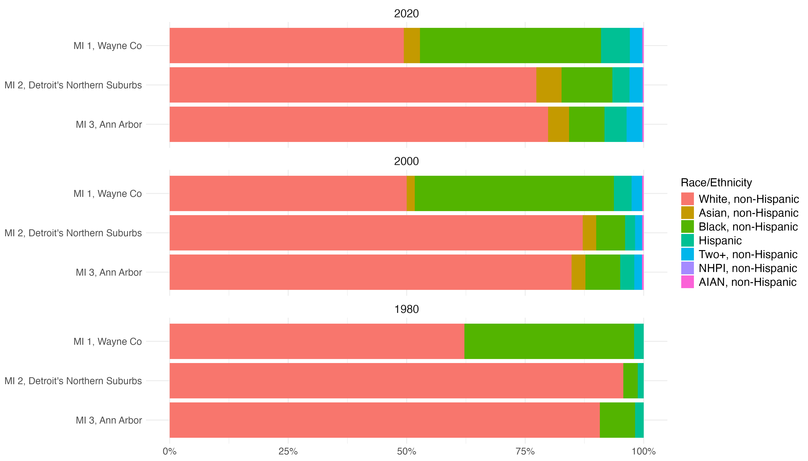
- Race/ethnicity categories not available in 1980 Census: Asian, non-Hispanic; Two+ races, non-Hispanic; NHPI, non-Hispanic; AIAN non-Hispanic
Research question 1
Socioeconomic characteristics of Detroit area Geomarkets
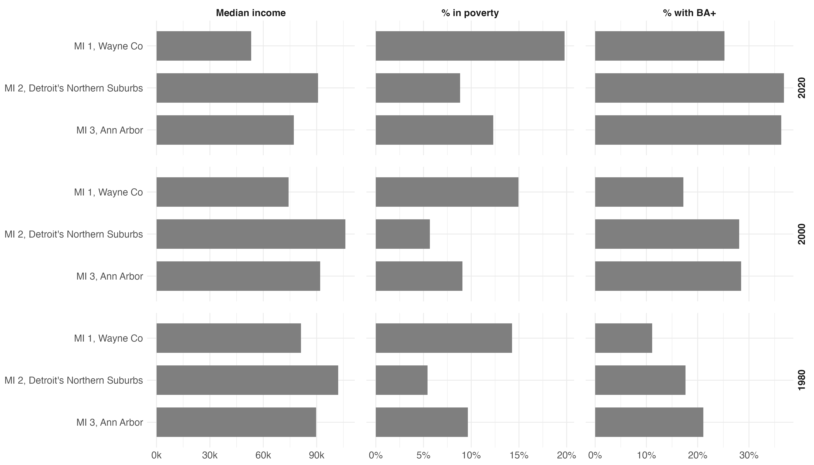
- Household income measured using 2024 CPI
Research question 1
Racial/ethnic and socioeconomic characteristics of Detroit area Geomarkets over time
|
1980
|
2000
|
2020
|
||||||||||||||||
|---|---|---|---|---|---|---|---|---|---|---|---|---|---|---|---|---|---|---|
| Wt. Mean | Mean | SD | P25 | P50 | P75 | Wt. Mean | Mean | SD | P25 | P50 | P75 | Wt. Mean | Mean | SD | P25 | P50 | P75 | |
| % White, non-Hispanic | ||||||||||||||||||
| MI 1, Wayne Co | 62.2 | 61.9 | 38.9 | 18.7 | 83.0 | 97.0 | 50.0 | 48.7 | 40.2 | 4.3 | 49.8 | 90.8 | 49.4 | 44.0 | 35.7 | 5.5 | 44.4 | 81.1 |
| MI 2, Detroit’s Northern Suburbs | 95.7 | 92.6 | 16.0 | 95.4 | 97.6 | 98.3 | 87.1 | 85.5 | 20.6 | 86.4 | 93.7 | 95.9 | 77.4 | 76.7 | 21.4 | 68.4 | 84.3 | 92.1 |
| MI 3, Ann Arbor | 90.8 | 88.5 | 16.7 | 86.2 | 95.6 | 98.0 | 84.8 | 84.0 | 17.0 | 78.2 | 91.5 | 95.9 | 79.8 | 78.9 | 17.9 | 68.8 | 85.7 | 93.1 |
| % Asian, non-Hispanic | ||||||||||||||||||
| MI 1, Wayne Co | NA | NA | NA | NA | NA | NA | 1.7 | 1.6 | 2.9 | 0.2 | 0.6 | 1.5 | 3.4 | 2.8 | 6.6 | 0.0 | 0.4 | 2.2 |
| MI 2, Detroit’s Northern Suburbs | NA | NA | NA | NA | NA | NA | 2.8 | 2.5 | 3.5 | 0.5 | 1.1 | 2.7 | 5.3 | 5.0 | 8.6 | 0.3 | 1.7 | 5.8 |
| MI 3, Ann Arbor | NA | NA | NA | NA | NA | NA | 2.9 | 2.8 | 5.7 | 0.2 | 0.6 | 2.2 | 4.4 | 4.2 | 8.1 | 0.0 | 0.8 | 3.4 |
| % Black, non-Hispanic | ||||||||||||||||||
| MI 1, Wayne Co | 35.8 | 34.6 | 39.6 | 0.1 | 8.9 | 79.1 | 42.0 | 43.7 | 42.3 | 2.0 | 19.6 | 93.0 | 38.2 | 44.1 | 39.2 | 5.0 | 29.5 | 87.7 |
| MI 2, Detroit’s Northern Suburbs | 3.0 | 4.8 | 15.6 | 0.0 | 0.2 | 0.9 | 6.1 | 8.1 | 19.6 | 0.4 | 1.2 | 3.7 | 10.7 | 11.4 | 18.0 | 0.7 | 3.8 | 13.6 |
| MI 3, Ann Arbor | 7.4 | 8.1 | 16.0 | 0.3 | 1.7 | 7.4 | 7.3 | 8.0 | 13.5 | 0.4 | 2.1 | 9.1 | 7.5 | 8.3 | 13.0 | 0.6 | 2.4 | 9.3 |
| % Hispanic | ||||||||||||||||||
| MI 1, Wayne Co | 2.0 | 2.0 | 4.2 | 0.7 | 1.1 | 1.7 | 3.8 | 3.5 | 9.0 | 0.8 | 1.6 | 2.6 | 6.1 | 5.9 | 12.3 | 0.5 | 2.3 | 5.8 |
| MI 2, Detroit’s Northern Suburbs | 1.3 | 1.3 | 1.6 | 0.6 | 0.9 | 1.3 | 2.1 | 2.0 | 2.3 | 1.1 | 1.4 | 1.9 | 3.6 | 3.6 | 4.3 | 1.2 | 2.4 | 4.4 |
| MI 3, Ann Arbor | 1.8 | 1.7 | 2.2 | 0.8 | 1.2 | 1.8 | 3.0 | 2.9 | 2.9 | 1.5 | 2.3 | 3.2 | 4.7 | 4.8 | 4.4 | 1.9 | 3.6 | 6.2 |
| % Two+, non-Hispanic | ||||||||||||||||||
| MI 1, Wayne Co | NA | NA | NA | NA | NA | NA | 2.2 | 2.0 | 2.7 | 1.0 | 1.4 | 2.0 | 2.6 | 2.6 | 2.8 | 0.6 | 1.7 | 3.7 |
| MI 2, Detroit’s Northern Suburbs | NA | NA | NA | NA | NA | NA | 1.5 | 1.5 | 1.0 | 0.9 | 1.2 | 1.8 | 2.8 | 2.9 | 2.8 | 1.0 | 2.1 | 3.9 |
| MI 3, Ann Arbor | NA | NA | NA | NA | NA | NA | 1.6 | 1.7 | 1.2 | 0.9 | 1.3 | 2.2 | 3.3 | 3.4 | 2.7 | 1.5 | 2.8 | 4.5 |
| % NHPI, non-Hispanic | ||||||||||||||||||
| MI 1, Wayne Co | NA | NA | NA | NA | NA | NA | 0.0 | 0.0 | 0.1 | 0.0 | 0.0 | 0.0 | 0.0 | 0.0 | 0.3 | 0.0 | 0.0 | 0.0 |
| MI 2, Detroit’s Northern Suburbs | NA | NA | NA | NA | NA | NA | 0.0 | 0.0 | 0.0 | 0.0 | 0.0 | 0.0 | 0.0 | 0.0 | 0.3 | 0.0 | 0.0 | 0.0 |
| MI 3, Ann Arbor | NA | NA | NA | NA | NA | NA | 0.0 | 0.0 | 0.0 | 0.0 | 0.0 | 0.0 | 0.0 | 0.0 | 0.1 | 0.0 | 0.0 | 0.0 |
| % AIAN, non-Hispanic | ||||||||||||||||||
| MI 1, Wayne Co | NA | NA | NA | NA | NA | NA | 0.3 | 0.3 | 0.3 | 0.1 | 0.3 | 0.5 | 0.3 | 0.3 | 0.9 | 0.0 | 0.0 | 0.1 |
| MI 2, Detroit’s Northern Suburbs | NA | NA | NA | NA | NA | NA | 0.3 | 0.3 | 0.2 | 0.1 | 0.2 | 0.4 | 0.2 | 0.2 | 0.5 | 0.0 | 0.0 | 0.2 |
| MI 3, Ann Arbor | NA | NA | NA | NA | NA | NA | 0.3 | 0.3 | 0.3 | 0.2 | 0.3 | 0.4 | 0.3 | 0.3 | 0.6 | 0.0 | 0.0 | 0.2 |
| Median income | ||||||||||||||||||
| MI 1, Wayne Co | NA | 81.8 | 34.9 | 55.6 | 81.2 | 105.0 | NA | 77.8 | 38.2 | 49.3 | 74.2 | 97.8 | NA | 63.8 | 37.6 | 37.5 | 53.2 | 80.7 |
| MI 2, Detroit’s Northern Suburbs | NA | 108.6 | 36.0 | 87.1 | 102.1 | 120.9 | NA | 114.5 | 43.5 | 85.6 | 106.1 | 134.9 | NA | 96.8 | 38.9 | 67.4 | 90.8 | 117.3 |
| MI 3, Ann Arbor | NA | 91.1 | 30.6 | 75.7 | 89.7 | 105.6 | NA | 96.9 | 39.5 | 74.4 | 92.0 | 113.3 | NA | 84.3 | 39.1 | 57.9 | 77.2 | 102.1 |
| % in poverty | ||||||||||||||||||
| MI 1, Wayne Co | 14.3 | 15.3 | 14.0 | 4.0 | 10.0 | 24.4 | 14.9 | 16.5 | 13.6 | 5.0 | 12.3 | 27.3 | 19.8 | 21.9 | 15.3 | 8.4 | 19.3 | 33.7 |
| MI 2, Detroit’s Northern Suburbs | 5.4 | 5.8 | 5.5 | 2.6 | 4.4 | 7.0 | 5.7 | 5.9 | 5.7 | 2.6 | 4.4 | 7.1 | 8.8 | 9.0 | 8.6 | 3.7 | 6.9 | 11.1 |
| MI 3, Ann Arbor | 9.6 | 10.0 | 9.9 | 4.2 | 6.6 | 11.1 | 9.1 | 9.3 | 11.0 | 3.8 | 6.1 | 9.9 | 12.3 | 13.4 | 13.0 | 4.7 | 9.2 | 16.1 |
| % with BA+ | ||||||||||||||||||
| MI 1, Wayne Co | 11.1 | 10.8 | 10.9 | 4.2 | 7.2 | 13.3 | 17.2 | 16.1 | 14.5 | 6.3 | 10.5 | 21.4 | 25.2 | 22.5 | 17.8 | 9.5 | 16.7 | 30.8 |
| MI 2, Detroit’s Northern Suburbs | 17.6 | 16.4 | 12.8 | 7.7 | 12.3 | 20.4 | 28.1 | 27.1 | 17.5 | 13.4 | 23.0 | 38.6 | 36.8 | 35.9 | 19.1 | 21.2 | 32.3 | 49.2 |
| MI 3, Ann Arbor | 21.1 | 21.1 | 19.6 | 7.0 | 12.5 | 29.5 | 28.5 | 28.3 | 22.9 | 10.9 | 18.0 | 41.2 | 36.3 | 36.7 | 24.5 | 17.5 | 27.9 | 52.9 |
- Race/ethnicity categories not available in 1980 Census: Asian, non-Hispanic; Two+ races, non-Hispanic; NHPI, non-Hispanic; AIAN non-Hispanic
- Household income measured using 2024 CPI
Research question 1
Racial/ethnic and socioeconomic characteristics of Detroit area Geomarkets over time
Fullscreen
- Race/ethnicity categories not available in 1980 Census: Asian, non-Hispanic; Two+ races, non-Hispanic; NHPI, non-Hispanic; AIAN non-Hispanic
- Household income measured using 2024 CPI
Houston area
Research question 1
Racial/ethnic composition of Houston area Geomarkets
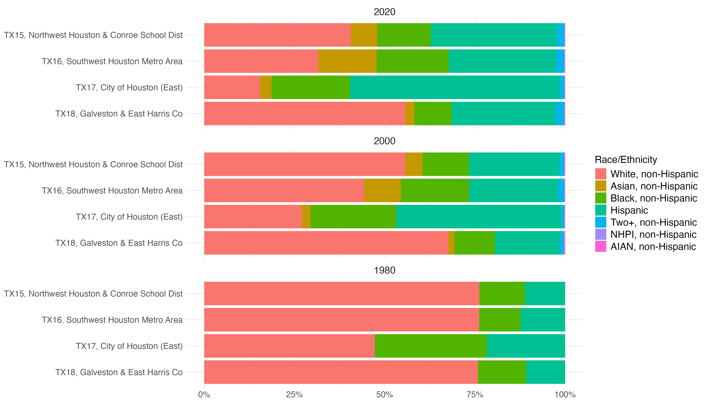
- Race/ethnicity categories not available in 1980 Census: Asian, non-Hispanic; Two+ races, non-Hispanic; NHPI, non-Hispanic; AIAN non-Hispanic
Research question 1
Socioeconomic characteristics of Houston area Geomarkets
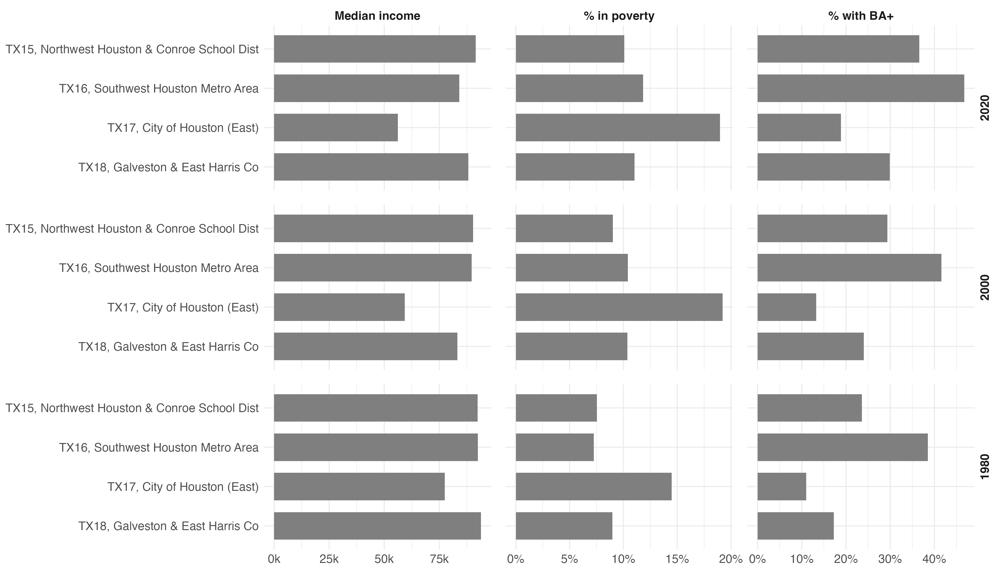
- Household income measured using 2024 CPI
Research question 1
Racial/ethnic and socioeconomic characteristics of Houston area Geomarkets over time
|
1980
|
2000
|
2020
|
||||||||||||||||
|---|---|---|---|---|---|---|---|---|---|---|---|---|---|---|---|---|---|---|
| Wt. Mean | Mean | SD | P25 | P50 | P75 | Wt. Mean | Mean | SD | P25 | P50 | P75 | Wt. Mean | Mean | SD | P25 | P50 | P75 | |
| % White, non-Hispanic | ||||||||||||||||||
| TX15, Northwest Houston & Conroe School Dist | 76.3 | 72.3 | 26.0 | 64.0 | 82.9 | 91.1 | 55.8 | 54.6 | 28.0 | 29.5 | 61.3 | 80.5 | 40.6 | 40.6 | 26.6 | 15.8 | 40.0 | 61.4 |
| TX16, Southwest Houston Metro Area | 76.2 | 67.5 | 27.5 | 54.1 | 77.0 | 88.1 | 44.3 | 48.2 | 28.7 | 21.0 | 49.9 | 75.0 | 31.6 | 33.1 | 24.7 | 10.2 | 29.6 | 55.6 |
| TX17, City of Houston (East) | 47.3 | 49.8 | 35.0 | 8.9 | 61.5 | 82.5 | 27.0 | 30.0 | 27.9 | 5.4 | 19.6 | 54.2 | 15.4 | 15.0 | 17.5 | 3.6 | 8.1 | 18.4 |
| TX18, Galveston & East Harris Co | 75.9 | 77.0 | 23.1 | 70.5 | 86.5 | 92.1 | 67.6 | 64.5 | 21.8 | 49.9 | 70.5 | 83.0 | 55.8 | 56.3 | 19.6 | 42.7 | 60.9 | 71.2 |
| % Asian, non-Hispanic | ||||||||||||||||||
| TX15, Northwest Houston & Conroe School Dist | NA | NA | NA | NA | NA | NA | 4.8 | 4.0 | 4.2 | 0.9 | 2.8 | 5.7 | 7.3 | 6.6 | 7.3 | 1.5 | 4.2 | 8.4 |
| TX16, Southwest Houston Metro Area | NA | NA | NA | NA | NA | NA | 10.2 | 8.1 | 8.0 | 2.2 | 5.2 | 11.2 | 16.1 | 14.6 | 13.8 | 3.9 | 10.6 | 21.1 |
| TX17, City of Houston (East) | NA | NA | NA | NA | NA | NA | 2.5 | 2.3 | 3.8 | 0.3 | 0.9 | 2.6 | 3.3 | 3.1 | 6.2 | 0.0 | 0.7 | 3.7 |
| TX18, Galveston & East Harris Co | NA | NA | NA | NA | NA | NA | 1.7 | 1.9 | 2.7 | 0.4 | 0.9 | 2.6 | 2.5 | 2.4 | 3.4 | 0.1 | 1.1 | 3.6 |
| % Black, non-Hispanic | ||||||||||||||||||
| TX15, Northwest Houston & Conroe School Dist | 12.6 | 12.9 | 22.3 | 1.2 | 3.5 | 11.2 | 12.8 | 12.8 | 18.3 | 2.5 | 6.1 | 12.6 | 14.8 | 14.9 | 15.4 | 3.5 | 10.0 | 21.2 |
| TX16, Southwest Houston Metro Area | 11.5 | 15.7 | 24.3 | 1.5 | 4.9 | 17.2 | 19.0 | 18.0 | 21.6 | 3.2 | 8.9 | 24.3 | 20.0 | 19.5 | 18.7 | 5.1 | 13.7 | 27.3 |
| TX17, City of Houston (East) | 31.0 | 28.7 | 37.5 | 1.0 | 6.3 | 66.4 | 23.7 | 26.3 | 31.5 | 2.3 | 10.1 | 42.1 | 21.7 | 23.2 | 24.5 | 3.0 | 14.2 | 35.6 |
| TX18, Galveston & East Harris Co | 13.3 | 11.5 | 20.4 | 0.5 | 2.4 | 9.5 | 11.3 | 12.6 | 16.7 | 1.9 | 6.2 | 15.4 | 10.3 | 10.6 | 12.0 | 2.1 | 7.0 | 14.6 |
| % Hispanic | ||||||||||||||||||
| TX15, Northwest Houston & Conroe School Dist | 11.1 | 12.9 | 15.4 | 3.8 | 7.1 | 13.3 | 25.1 | 26.9 | 21.4 | 9.4 | 20.5 | 37.9 | 34.9 | 35.3 | 20.7 | 19.2 | 30.3 | 48.7 |
| TX16, Southwest Houston Metro Area | 12.3 | 13.5 | 14.2 | 5.1 | 8.8 | 16.1 | 24.6 | 23.7 | 18.7 | 8.9 | 18.6 | 33.2 | 29.7 | 29.8 | 21.7 | 13.2 | 23.3 | 41.1 |
| TX17, City of Houston (East) | 21.7 | 19.9 | 21.6 | 4.7 | 12.0 | 25.5 | 45.7 | 40.2 | 28.7 | 13.8 | 32.8 | 67.7 | 58.0 | 56.9 | 28.3 | 32.4 | 59.3 | 83.4 |
| TX18, Galveston & East Harris Co | 10.8 | 10.2 | 8.9 | 4.1 | 7.3 | 14.0 | 17.9 | 19.4 | 13.6 | 10.6 | 15.3 | 24.7 | 28.8 | 27.8 | 15.4 | 16.8 | 24.0 | 37.1 |
| % Two+, non-Hispanic | ||||||||||||||||||
| TX15, Northwest Houston & Conroe School Dist | NA | NA | NA | NA | NA | NA | 1.3 | 1.2 | 0.5 | 0.8 | 1.1 | 1.5 | 2.1 | 2.1 | 3.0 | 0.3 | 1.3 | 2.7 |
| TX16, Southwest Houston Metro Area | NA | NA | NA | NA | NA | NA | 1.7 | 1.5 | 0.8 | 1.0 | 1.4 | 2.0 | 2.4 | 2.4 | 3.1 | 0.3 | 1.4 | 3.5 |
| TX17, City of Houston (East) | NA | NA | NA | NA | NA | NA | 0.9 | 0.9 | 0.7 | 0.5 | 0.7 | 1.2 | 1.4 | 1.5 | 2.8 | 0.0 | 0.4 | 1.7 |
| TX18, Galveston & East Harris Co | NA | NA | NA | NA | NA | NA | 1.1 | 1.2 | 0.5 | 0.9 | 1.1 | 1.4 | 2.4 | 2.4 | 3.0 | 0.7 | 1.7 | 3.0 |
| % NHPI, non-Hispanic | ||||||||||||||||||
| TX15, Northwest Houston & Conroe School Dist | NA | NA | NA | NA | NA | NA | 0.0 | 0.0 | 0.1 | 0.0 | 0.0 | 0.0 | 0.0 | 0.1 | 0.5 | 0.0 | 0.0 | 0.0 |
| TX16, Southwest Houston Metro Area | NA | NA | NA | NA | NA | NA | 0.0 | 0.0 | 0.1 | 0.0 | 0.0 | 0.0 | 0.0 | 0.0 | 0.2 | 0.0 | 0.0 | 0.0 |
| TX17, City of Houston (East) | NA | NA | NA | NA | NA | NA | 0.0 | 0.0 | 0.1 | 0.0 | 0.0 | 0.0 | 0.1 | 0.1 | 0.4 | 0.0 | 0.0 | 0.0 |
| TX18, Galveston & East Harris Co | NA | NA | NA | NA | NA | NA | 0.0 | 0.0 | 0.1 | 0.0 | 0.0 | 0.1 | 0.0 | 0.0 | 0.1 | 0.0 | 0.0 | 0.0 |
| % AIAN, non-Hispanic | ||||||||||||||||||
| TX15, Northwest Houston & Conroe School Dist | NA | NA | NA | NA | NA | NA | 0.2 | 0.2 | 0.1 | 0.1 | 0.2 | 0.3 | 0.1 | 0.2 | 0.5 | 0.0 | 0.0 | 0.0 |
| TX16, Southwest Houston Metro Area | NA | NA | NA | NA | NA | NA | 0.2 | 0.2 | 0.1 | 0.1 | 0.2 | 0.2 | 0.2 | 0.2 | 0.6 | 0.0 | 0.0 | 0.0 |
| TX17, City of Houston (East) | NA | NA | NA | NA | NA | NA | 0.2 | 0.2 | 0.1 | 0.1 | 0.2 | 0.3 | 0.1 | 0.1 | 0.3 | 0.0 | 0.0 | 0.0 |
| TX18, Galveston & East Harris Co | NA | NA | NA | NA | NA | NA | 0.3 | 0.3 | 0.2 | 0.2 | 0.3 | 0.4 | 0.2 | 0.2 | 0.7 | 0.0 | 0.0 | 0.0 |
| Median income | ||||||||||||||||||
| TX15, Northwest Houston & Conroe School Dist | NA | 98.2 | 36.8 | 70.1 | 92.4 | 118.6 | NA | 97.6 | 43.6 | 67.4 | 90.3 | 115.3 | NA | 98.7 | 45.0 | 65.7 | 91.5 | 122.7 |
| TX16, Southwest Houston Metro Area | NA | 101.2 | 46.1 | 70.4 | 92.5 | 116.6 | NA | 106.3 | 59.0 | 68.9 | 89.7 | 132.3 | NA | 101.3 | 61.2 | 56.5 | 84.1 | 129.6 |
| TX17, City of Houston (East) | NA | 80.3 | 30.7 | 60.3 | 77.5 | 96.9 | NA | 67.4 | 32.9 | 48.1 | 59.3 | 79.9 | NA | 65.6 | 33.4 | 42.9 | 56.2 | 80.0 |
| TX18, Galveston & East Harris Co | NA | 94.9 | 27.8 | 78.5 | 93.9 | 107.7 | NA | 90.3 | 37.4 | 62.9 | 83.2 | 113.8 | NA | 96.5 | 42.2 | 63.0 | 88.2 | 121.9 |
| % in poverty | ||||||||||||||||||
| TX15, Northwest Houston & Conroe School Dist | 7.5 | 9.5 | 8.1 | 3.7 | 5.7 | 13.5 | 9.0 | 10.5 | 8.3 | 4.2 | 8.2 | 15.0 | 10.1 | 11.0 | 9.6 | 4.0 | 8.0 | 15.3 |
| TX16, Southwest Houston Metro Area | 7.2 | 10.0 | 9.2 | 3.9 | 7.0 | 12.5 | 10.4 | 10.6 | 8.3 | 4.3 | 8.5 | 14.9 | 11.8 | 12.9 | 10.2 | 4.7 | 10.9 | 17.9 |
| TX17, City of Houston (East) | 14.5 | 14.5 | 11.2 | 5.9 | 11.6 | 19.5 | 19.2 | 19.6 | 12.4 | 9.2 | 19.3 | 27.4 | 19.0 | 20.5 | 12.4 | 10.4 | 20.7 | 28.9 |
| TX18, Galveston & East Harris Co | 9.0 | 9.0 | 7.8 | 3.8 | 7.6 | 11.2 | 10.4 | 11.6 | 9.3 | 4.9 | 9.0 | 15.8 | 11.0 | 11.3 | 8.7 | 4.4 | 8.8 | 16.4 |
| % with BA+ | ||||||||||||||||||
| TX15, Northwest Houston & Conroe School Dist | 23.6 | 20.9 | 15.0 | 8.6 | 18.9 | 30.6 | 29.4 | 27.2 | 17.4 | 13.3 | 23.5 | 39.6 | 36.6 | 34.8 | 18.6 | 20.7 | 32.1 | 49.0 |
| TX16, Southwest Houston Metro Area | 38.5 | 32.9 | 16.9 | 20.3 | 34.0 | 46.1 | 41.6 | 39.6 | 21.7 | 22.3 | 37.5 | 57.8 | 46.8 | 47.1 | 25.3 | 23.8 | 47.4 | 70.6 |
| TX17, City of Houston (East) | 11.0 | 11.4 | 11.2 | 4.0 | 7.2 | 14.6 | 13.2 | 14.2 | 15.3 | 4.4 | 8.0 | 17.9 | 18.9 | 18.1 | 17.8 | 6.2 | 11.3 | 22.6 |
| TX18, Galveston & East Harris Co | 17.3 | 15.4 | 12.6 | 6.2 | 12.6 | 20.2 | 24.0 | 21.0 | 15.2 | 9.8 | 16.5 | 29.9 | 29.9 | 29.7 | 17.9 | 15.0 | 25.0 | 44.4 |
- Race/ethnicity categories not available in 1980 Census: Asian, non-Hispanic; Two+ races, non-Hispanic; NHPI, non-Hispanic; AIAN non-Hispanic
- Household income measured using 2024 CPI
Research question 1
Racial/ethnic and socioeconomic characteristics of Houston area Geomarkets over time
Fullscreen
- Race/ethnicity categories not available in 1980 Census: Asian, non-Hispanic; Two+ races, non-Hispanic; NHPI, non-Hispanic; AIAN non-Hispanic
- Household income measured using 2024 CPI
Long Island area
Research question 1
Racial/ethnic composition of Long Island area Geomarkets
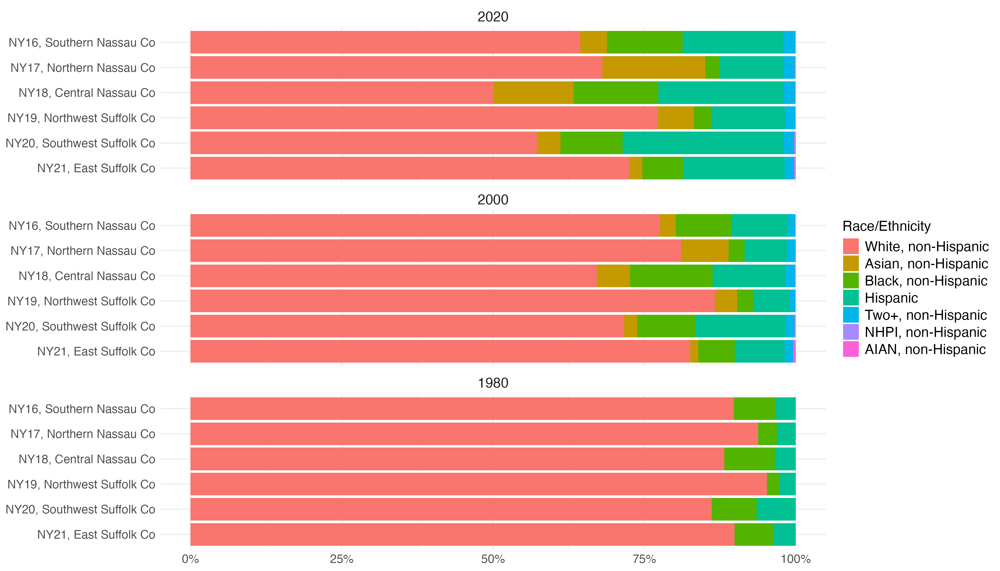
- Race/ethnicity categories not available in 1980 Census: Asian, non-Hispanic; Two+ races, non-Hispanic; NHPI, non-Hispanic; AIAN non-Hispanic
Research question 1
Socioeconomic characteristics of Long Island area Geomarkets
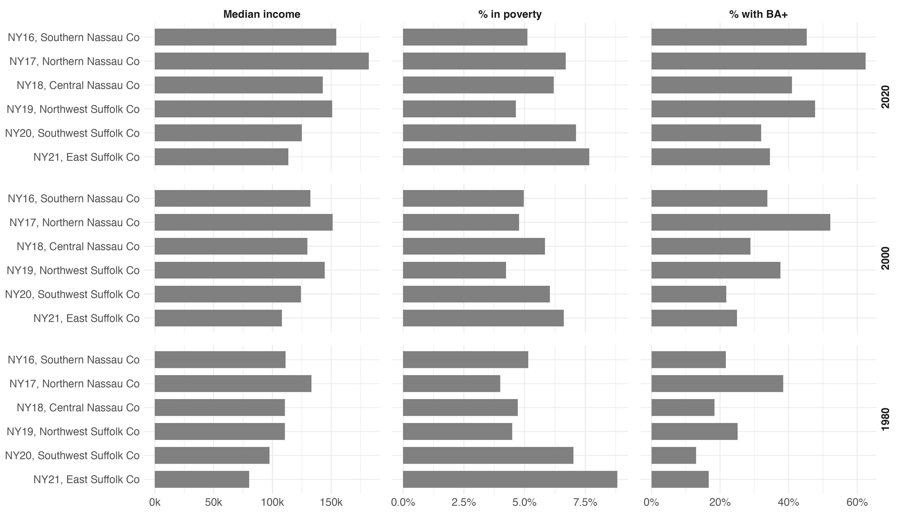
- Household income measured using 2024 CPI
Research question 1
Racial/ethnic and socioeconomic characteristics of Long Island area Geomarkets over time
|
1980
|
2000
|
2020
|
||||||||||||||||
|---|---|---|---|---|---|---|---|---|---|---|---|---|---|---|---|---|---|---|
| Wt. Mean | Mean | SD | P25 | P50 | P75 | Wt. Mean | Mean | SD | P25 | P50 | P75 | Wt. Mean | Mean | SD | P25 | P50 | P75 | |
| % White, non-Hispanic | ||||||||||||||||||
| NY16, Southern Nassau Co | 89.8 | 85.0 | 24.4 | 89.0 | 96.1 | 97.3 | 77.5 | 71.9 | 30.3 | 62.4 | 87.2 | 93.4 | 64.4 | 66.4 | 28.7 | 44.3 | 79.5 | 88.2 |
| NY17, Northern Nassau Co | 93.8 | 92.1 | 7.2 | 91.8 | 94.7 | 96.4 | 81.1 | 80.3 | 13.1 | 73.3 | 82.8 | 90.2 | 68.1 | 67.3 | 14.9 | 56.0 | 67.0 | 80.7 |
| NY18, Central Nassau Co | 88.2 | 84.1 | 25.4 | 90.4 | 95.9 | 96.7 | 67.2 | 66.6 | 30.4 | 43.9 | 82.5 | 88.9 | 50.1 | 50.9 | 27.8 | 24.3 | 61.8 | 73.2 |
| NY19, Northwest Suffolk Co | 95.3 | 93.0 | 6.8 | 92.8 | 95.7 | 96.9 | 86.7 | 85.0 | 14.5 | 84.6 | 90.0 | 92.7 | 77.2 | 76.9 | 15.4 | 71.4 | 80.7 | 87.7 |
| NY20, Southwest Suffolk Co | 86.1 | 85.1 | 21.6 | 84.3 | 94.4 | 96.3 | 71.6 | 73.8 | 26.5 | 66.8 | 87.1 | 90.8 | 57.3 | 60.0 | 28.3 | 48.0 | 70.1 | 81.4 |
| NY21, East Suffolk Co | 89.9 | 89.3 | 13.0 | 88.0 | 93.0 | 95.2 | 82.6 | 83.1 | 12.4 | 78.9 | 84.6 | 91.9 | 72.5 | 74.8 | 16.6 | 64.8 | 78.8 | 86.9 |
| % Asian, non-Hispanic | ||||||||||||||||||
| NY16, Southern Nassau Co | NA | NA | NA | NA | NA | NA | 2.6 | 2.7 | 2.2 | 1.3 | 2.0 | 3.2 | 4.4 | 4.1 | 4.5 | 0.9 | 2.6 | 5.2 |
| NY17, Northern Nassau Co | NA | NA | NA | NA | NA | NA | 7.9 | 8.8 | 6.8 | 3.9 | 6.5 | 12.4 | 17.0 | 16.4 | 13.0 | 6.6 | 13.9 | 23.3 |
| NY18, Central Nassau Co | NA | NA | NA | NA | NA | NA | 5.5 | 6.4 | 6.1 | 2.6 | 4.0 | 8.5 | 13.2 | 13.0 | 11.3 | 5.7 | 9.5 | 17.8 |
| NY19, Northwest Suffolk Co | NA | NA | NA | NA | NA | NA | 3.7 | 3.4 | 3.5 | 1.7 | 2.8 | 4.0 | 5.9 | 5.9 | 6.9 | 2.5 | 4.4 | 6.7 |
| NY20, Southwest Suffolk Co | NA | NA | NA | NA | NA | NA | 2.2 | 2.3 | 1.6 | 1.2 | 1.7 | 3.0 | 3.9 | 3.9 | 4.8 | 0.8 | 2.4 | 5.1 |
| NY21, East Suffolk Co | NA | NA | NA | NA | NA | NA | 1.3 | 1.5 | 1.0 | 0.8 | 1.2 | 1.7 | 2.2 | 2.4 | 3.1 | 0.3 | 1.2 | 3.1 |
| % Black, non-Hispanic | ||||||||||||||||||
| NY16, Southern Nassau Co | 6.9 | 10.2 | 22.7 | 0.1 | 0.3 | 3.6 | 9.3 | 14.0 | 24.2 | 0.4 | 1.2 | 14.9 | 12.5 | 11.0 | 16.3 | 0.4 | 2.5 | 17.6 |
| NY17, Northern Nassau Co | 3.1 | 2.7 | 5.2 | 0.2 | 0.7 | 2.2 | 2.6 | 2.8 | 6.2 | 0.3 | 0.7 | 1.9 | 2.3 | 2.7 | 4.3 | 0.3 | 1.4 | 3.0 |
| NY18, Central Nassau Co | 8.3 | 10.8 | 23.6 | 0.1 | 0.2 | 3.3 | 13.6 | 14.9 | 25.1 | 0.4 | 1.2 | 15.7 | 14.0 | 13.1 | 19.6 | 0.4 | 2.6 | 24.3 |
| NY19, Northwest Suffolk Co | 2.1 | 2.4 | 4.6 | 0.3 | 0.6 | 1.6 | 2.6 | 3.3 | 5.5 | 0.6 | 1.1 | 2.2 | 3.0 | 3.0 | 4.0 | 0.5 | 1.7 | 3.5 |
| NY20, Southwest Suffolk Co | 7.5 | 7.7 | 18.2 | 0.2 | 0.7 | 4.4 | 9.6 | 8.9 | 16.3 | 0.8 | 1.6 | 11.4 | 10.3 | 9.9 | 14.2 | 1.4 | 5.1 | 11.1 |
| NY21, East Suffolk Co | 6.5 | 6.1 | 11.9 | 1.0 | 2.2 | 5.3 | 6.0 | 5.3 | 8.7 | 1.1 | 2.4 | 6.0 | 6.7 | 5.9 | 8.5 | 0.7 | 2.7 | 8.2 |
| % Hispanic | ||||||||||||||||||
| NY16, Southern Nassau Co | 3.3 | 3.6 | 3.2 | 1.8 | 2.5 | 3.8 | 9.4 | 9.5 | 9.0 | 3.6 | 6.5 | 11.6 | 16.6 | 16.0 | 13.4 | 6.8 | 12.3 | 20.0 |
| NY17, Northern Nassau Co | 3.1 | 2.9 | 2.3 | 1.5 | 2.1 | 3.6 | 7.1 | 6.7 | 7.0 | 2.9 | 4.5 | 8.3 | 10.6 | 10.7 | 9.5 | 4.2 | 7.5 | 12.3 |
| NY18, Central Nassau Co | 3.5 | 3.4 | 3.0 | 1.7 | 2.4 | 3.7 | 12.1 | 10.1 | 9.6 | 4.6 | 7.1 | 11.6 | 20.7 | 20.1 | 15.7 | 10.2 | 14.6 | 23.6 |
| NY19, Northwest Suffolk Co | 2.7 | 3.2 | 3.0 | 1.6 | 2.2 | 4.0 | 6.0 | 7.0 | 8.7 | 2.9 | 4.2 | 6.9 | 12.1 | 12.0 | 10.7 | 5.5 | 9.0 | 14.2 |
| NY20, Southwest Suffolk Co | 6.4 | 6.1 | 7.9 | 2.4 | 3.7 | 5.7 | 14.9 | 13.2 | 15.0 | 4.6 | 7.0 | 13.8 | 26.6 | 23.8 | 21.0 | 9.4 | 16.9 | 29.1 |
| NY21, East Suffolk Co | 3.6 | 3.6 | 2.6 | 1.7 | 3.3 | 4.8 | 8.3 | 8.2 | 4.7 | 4.6 | 8.0 | 10.9 | 16.8 | 14.9 | 11.7 | 7.4 | 11.8 | 19.4 |
| % Two+, non-Hispanic | ||||||||||||||||||
| NY16, Southern Nassau Co | NA | NA | NA | NA | NA | NA | 1.1 | 1.5 | 2.2 | 0.6 | 0.9 | 1.9 | 2.0 | 1.8 | 2.0 | 0.4 | 1.1 | 2.6 |
| NY17, Northern Nassau Co | NA | NA | NA | NA | NA | NA | 1.3 | 1.2 | 0.7 | 0.7 | 1.0 | 1.5 | 1.9 | 2.1 | 2.3 | 0.8 | 1.5 | 2.8 |
| NY18, Central Nassau Co | NA | NA | NA | NA | NA | NA | 1.5 | 1.6 | 1.1 | 0.8 | 1.2 | 2.2 | 1.9 | 1.9 | 1.9 | 0.7 | 1.4 | 2.6 |
| NY19, Northwest Suffolk Co | NA | NA | NA | NA | NA | NA | 1.0 | 1.0 | 0.6 | 0.6 | 0.9 | 1.3 | 1.7 | 1.6 | 1.6 | 0.5 | 1.3 | 2.3 |
| NY20, Southwest Suffolk Co | NA | NA | NA | NA | NA | NA | 1.5 | 1.4 | 0.8 | 0.8 | 1.2 | 2.0 | 1.8 | 1.8 | 2.4 | 0.3 | 1.2 | 2.5 |
| NY21, East Suffolk Co | NA | NA | NA | NA | NA | NA | 1.3 | 1.3 | 0.7 | 0.8 | 1.2 | 1.6 | 1.6 | 1.6 | 2.0 | 0.2 | 0.9 | 2.2 |
| % NHPI, non-Hispanic | ||||||||||||||||||
| NY16, Southern Nassau Co | NA | NA | NA | NA | NA | NA | 0.0 | 0.0 | 0.0 | 0.0 | 0.0 | 0.0 | 0.0 | 0.0 | 0.1 | 0.0 | 0.0 | 0.0 |
| NY17, Northern Nassau Co | NA | NA | NA | NA | NA | NA | 0.0 | 0.0 | 0.0 | 0.0 | 0.0 | 0.0 | 0.0 | 0.0 | 0.0 | 0.0 | 0.0 | 0.0 |
| NY18, Central Nassau Co | NA | NA | NA | NA | NA | NA | 0.0 | 0.0 | 0.1 | 0.0 | 0.0 | 0.0 | 0.0 | 0.0 | 0.1 | 0.0 | 0.0 | 0.0 |
| NY19, Northwest Suffolk Co | NA | NA | NA | NA | NA | NA | 0.0 | 0.0 | 0.0 | 0.0 | 0.0 | 0.0 | 0.0 | 0.0 | 0.0 | 0.0 | 0.0 | 0.0 |
| NY20, Southwest Suffolk Co | NA | NA | NA | NA | NA | NA | 0.0 | 0.0 | 0.0 | 0.0 | 0.0 | 0.0 | 0.0 | 0.0 | 0.1 | 0.0 | 0.0 | 0.0 |
| NY21, East Suffolk Co | NA | NA | NA | NA | NA | NA | 0.0 | 0.0 | 0.0 | 0.0 | 0.0 | 0.0 | 0.0 | 0.0 | 0.2 | 0.0 | 0.0 | 0.0 |
| % AIAN, non-Hispanic | ||||||||||||||||||
| NY16, Southern Nassau Co | NA | NA | NA | NA | NA | NA | 0.1 | 0.1 | 0.1 | 0.0 | 0.1 | 0.2 | 0.1 | 0.1 | 0.4 | 0.0 | 0.0 | 0.0 |
| NY17, Northern Nassau Co | NA | NA | NA | NA | NA | NA | 0.0 | 0.1 | 0.1 | 0.0 | 0.0 | 0.1 | 0.2 | 0.1 | 0.4 | 0.0 | 0.0 | 0.0 |
| NY18, Central Nassau Co | NA | NA | NA | NA | NA | NA | 0.1 | 0.1 | 0.1 | 0.0 | 0.1 | 0.2 | 0.1 | 0.1 | 0.5 | 0.0 | 0.0 | 0.0 |
| NY19, Northwest Suffolk Co | NA | NA | NA | NA | NA | NA | 0.1 | 0.1 | 0.2 | 0.0 | 0.1 | 0.1 | 0.1 | 0.1 | 0.6 | 0.0 | 0.0 | 0.0 |
| NY20, Southwest Suffolk Co | NA | NA | NA | NA | NA | NA | 0.2 | 0.2 | 0.3 | 0.0 | 0.1 | 0.2 | 0.2 | 0.2 | 0.7 | 0.0 | 0.0 | 0.0 |
| NY21, East Suffolk Co | NA | NA | NA | NA | NA | NA | 0.4 | 0.4 | 1.2 | 0.1 | 0.1 | 0.3 | 0.2 | 0.2 | 0.8 | 0.0 | 0.0 | 0.0 |
| Median income | ||||||||||||||||||
| NY16, Southern Nassau Co | NA | 110.8 | 30.9 | 95.7 | 111.2 | 122.4 | NA | 133.0 | 36.9 | 112.0 | 132.2 | 149.3 | NA | 153.0 | 39.7 | 138.1 | 154.4 | 173.8 |
| NY17, Northern Nassau Co | NA | 144.8 | 50.8 | 104.7 | 133.2 | 168.1 | NA | 169.8 | 69.0 | 125.4 | 151.3 | 211.5 | NA | 185.0 | 64.7 | 139.0 | 182.1 | 229.1 |
| NY18, Central Nassau Co | NA | 113.8 | 27.9 | 98.6 | 110.6 | 121.1 | NA | 133.3 | 38.4 | 114.9 | 129.7 | 144.7 | NA | 142.5 | 37.8 | 122.3 | 142.9 | 166.1 |
| NY19, Northwest Suffolk Co | NA | 119.2 | 32.8 | 98.9 | 110.7 | 134.3 | NA | 148.7 | 44.6 | 121.3 | 144.5 | 167.0 | NA | 156.0 | 40.4 | 126.8 | 150.9 | 180.9 |
| NY20, Southwest Suffolk Co | NA | 99.8 | 22.7 | 87.8 | 97.6 | 107.3 | NA | 125.6 | 30.6 | 107.7 | 124.3 | 138.8 | NA | 127.9 | 31.8 | 108.2 | 125.0 | 145.2 |
| NY21, East Suffolk Co | NA | 82.6 | 16.2 | 72.0 | 80.3 | 91.6 | NA | 111.5 | 23.2 | 94.1 | 108.1 | 127.5 | NA | 121.2 | 34.6 | 98.7 | 113.5 | 142.6 |
| % in poverty | ||||||||||||||||||
| NY16, Southern Nassau Co | 5.1 | 5.7 | 5.5 | 2.7 | 3.7 | 5.7 | 5.0 | 5.7 | 5.3 | 2.6 | 4.1 | 6.5 | 5.1 | 5.0 | 4.1 | 2.4 | 3.8 | 6.5 |
| NY17, Northern Nassau Co | 4.0 | 3.5 | 2.1 | 2.2 | 3.0 | 4.3 | 4.8 | 4.2 | 2.6 | 2.5 | 3.7 | 5.1 | 6.7 | 6.0 | 5.8 | 2.5 | 5.0 | 7.5 |
| NY18, Central Nassau Co | 4.7 | 5.2 | 9.0 | 2.4 | 3.4 | 5.0 | 5.8 | 5.4 | 4.2 | 2.8 | 4.2 | 6.2 | 6.2 | 6.3 | 5.5 | 3.1 | 4.8 | 7.7 |
| NY19, Northwest Suffolk Co | 4.5 | 4.8 | 3.3 | 2.9 | 4.1 | 6.4 | 4.2 | 4.4 | 3.8 | 2.4 | 3.6 | 5.2 | 4.6 | 4.7 | 3.6 | 2.3 | 4.1 | 5.9 |
| NY20, Southwest Suffolk Co | 7.0 | 7.6 | 8.8 | 3.9 | 5.8 | 8.2 | 6.0 | 5.8 | 3.8 | 3.2 | 4.7 | 7.6 | 7.1 | 7.1 | 5.2 | 3.6 | 6.0 | 9.7 |
| NY21, East Suffolk Co | 8.8 | 8.5 | 4.8 | 5.5 | 7.5 | 11.0 | 6.6 | 6.2 | 3.9 | 3.3 | 5.8 | 7.8 | 7.7 | 7.6 | 5.2 | 3.6 | 6.1 | 10.9 |
| % with BA+ | ||||||||||||||||||
| NY16, Southern Nassau Co | 21.7 | 20.0 | 9.6 | 14.0 | 17.5 | 24.2 | 33.8 | 31.2 | 12.7 | 22.8 | 29.8 | 36.7 | 45.3 | 45.8 | 13.5 | 39.1 | 46.9 | 52.1 |
| NY17, Northern Nassau Co | 38.4 | 34.4 | 13.6 | 22.5 | 32.8 | 46.1 | 52.2 | 48.4 | 15.4 | 37.5 | 48.5 | 60.3 | 62.4 | 62.1 | 15.8 | 54.3 | 63.5 | 73.1 |
| NY18, Central Nassau Co | 18.4 | 19.8 | 10.5 | 12.8 | 16.9 | 22.8 | 28.9 | 31.3 | 13.2 | 22.5 | 28.5 | 36.9 | 40.9 | 41.6 | 16.2 | 30.1 | 41.4 | 52.1 |
| NY19, Northwest Suffolk Co | 25.1 | 24.5 | 13.5 | 14.9 | 22.1 | 32.4 | 37.6 | 36.5 | 15.2 | 24.9 | 34.9 | 47.3 | 47.7 | 48.7 | 14.8 | 38.2 | 49.9 | 58.7 |
| NY20, Southwest Suffolk Co | 13.0 | 13.9 | 9.2 | 7.1 | 11.2 | 17.5 | 21.8 | 23.7 | 12.7 | 15.4 | 20.3 | 27.7 | 32.0 | 33.0 | 14.2 | 22.6 | 32.4 | 41.9 |
| NY21, East Suffolk Co | 16.7 | 16.3 | 8.1 | 8.5 | 17.4 | 21.4 | 24.9 | 25.2 | 10.8 | 17.0 | 23.9 | 32.6 | 34.5 | 37.7 | 16.0 | 24.9 | 36.5 | 48.0 |
- Race/ethnicity categories not available in 1980 Census: Asian, non-Hispanic; Two+ races, non-Hispanic; NHPI, non-Hispanic; AIAN non-Hispanic
- Household income measured using 2024 CPI
Research question 1
Racial/ethnic and socioeconomic characteristics of Long Island area Geomarkets over time
Fullscreen
- Race/ethnicity categories not available in 1980 Census: Asian, non-Hispanic; Two+ races, non-Hispanic; NHPI, non-Hispanic; AIAN non-Hispanic
- Household income measured using 2024 CPI
Los Angeles area
Research question 1
Racial/ethnic composition of Los Angeles area Geomarkets
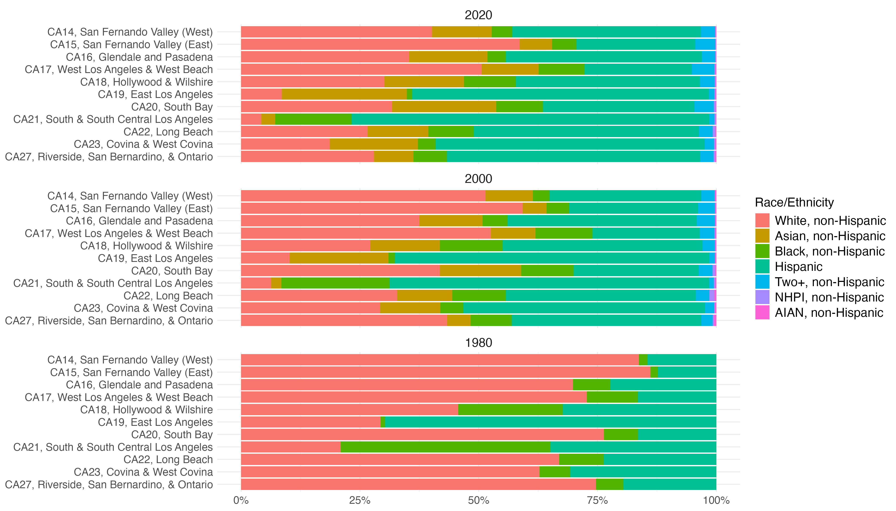
- Race/ethnicity categories not available in 1980 Census: Asian, non-Hispanic; Two+ races, non-Hispanic; NHPI, non-Hispanic; AIAN non-Hispanic
Research question 1
Socioeconomic characteristics of Los Angeles area Geomarkets
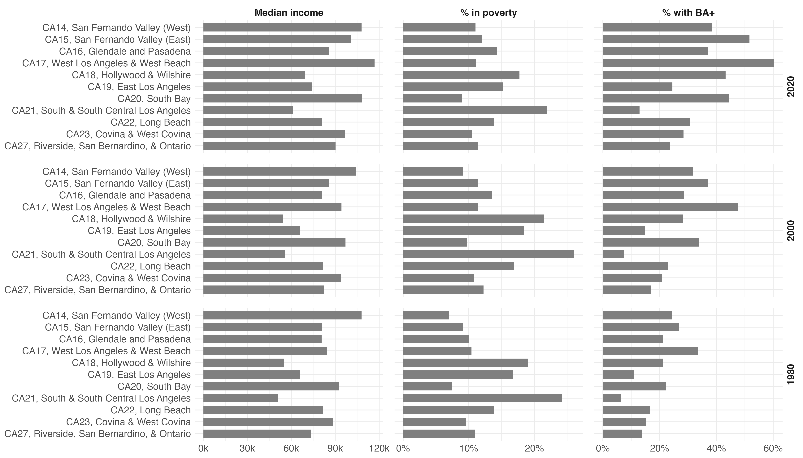
- Household income measured using 2024 CPI
Research question 1
Racial/ethnic and socioeconomic characteristics of Los Angeles area Geomarkets over time
|
1980
|
2000
|
2020
|
||||||||||||||||
|---|---|---|---|---|---|---|---|---|---|---|---|---|---|---|---|---|---|---|
| Wt. Mean | Mean | SD | P25 | P50 | P75 | Wt. Mean | Mean | SD | P25 | P50 | P75 | Wt. Mean | Mean | SD | P25 | P50 | P75 | |
| % White, non-Hispanic | ||||||||||||||||||
| CA14, San Fernando Valley (West) | 83.7 | 78.1 | 18.9 | 76.9 | 84.3 | 89.5 | 51.4 | 52.6 | 26.7 | 32.4 | 56.0 | 75.8 | 40.2 | 41.2 | 23.8 | 21.4 | 38.6 | 61.4 |
| CA15, San Fernando Valley (East) | 86.1 | 82.5 | 12.2 | 79.6 | 87.3 | 91.0 | 59.2 | 57.2 | 25.9 | 29.7 | 62.6 | 79.8 | 58.6 | 58.1 | 18.5 | 48.5 | 61.5 | 71.0 |
| CA16, Glendale and Pasadena | 69.8 | 66.5 | 22.1 | 56.4 | 72.9 | 83.5 | 37.5 | 37.9 | 23.4 | 17.2 | 35.4 | 58.5 | 35.3 | 34.6 | 23.7 | 13.4 | 31.5 | 56.1 |
| CA17, West Los Angeles & West Beach | 72.8 | 67.4 | 27.6 | 52.6 | 80.3 | 89.8 | 52.6 | 53.9 | 31.0 | 30.4 | 64.2 | 81.8 | 50.6 | 52.9 | 25.0 | 38.5 | 58.9 | 72.6 |
| CA18, Hollywood & Wilshire | 45.7 | 40.5 | 32.4 | 8.1 | 33.4 | 71.8 | 27.2 | 26.4 | 28.9 | 3.5 | 10.4 | 42.4 | 30.1 | 30.5 | 26.2 | 7.3 | 19.6 | 53.6 |
| CA19, East Los Angeles | 29.3 | 32.2 | 25.9 | 9.0 | 25.8 | 48.0 | 10.2 | 12.5 | 13.8 | 3.4 | 6.9 | 16.4 | 8.6 | 8.9 | 10.5 | 2.2 | 4.4 | 11.0 |
| CA20, South Bay | 76.4 | 60.9 | 27.9 | 41.8 | 68.7 | 84.1 | 41.8 | 40.1 | 29.5 | 11.8 | 35.6 | 67.4 | 31.8 | 31.1 | 24.4 | 8.8 | 24.3 | 52.7 |
| CA21, South & South Central Los Angeles | 20.9 | 19.7 | 25.6 | 1.6 | 5.3 | 30.1 | 6.3 | 6.8 | 10.2 | 1.1 | 2.4 | 6.5 | 4.3 | 4.8 | 7.9 | 0.6 | 1.5 | 5.4 |
| CA22, Long Beach | 66.9 | 63.8 | 26.9 | 41.3 | 71.5 | 87.8 | 32.8 | 36.9 | 29.0 | 11.3 | 25.9 | 66.2 | 26.6 | 26.7 | 22.6 | 6.8 | 17.6 | 47.0 |
| CA23, Covina & West Covina | 62.8 | 63.4 | 22.2 | 44.0 | 70.4 | 81.7 | 29.2 | 32.5 | 23.1 | 10.6 | 28.7 | 49.0 | 18.7 | 18.9 | 17.4 | 4.8 | 12.0 | 29.0 |
| CA27, Riverside, San Bernardino, & Ontario | 74.7 | 70.1 | 20.4 | 63.5 | 75.6 | 84.9 | 43.4 | 46.6 | 22.3 | 28.5 | 45.1 | 66.0 | 27.9 | 28.4 | 18.5 | 12.8 | 24.4 | 42.2 |
| % Asian, non-Hispanic | ||||||||||||||||||
| CA14, San Fernando Valley (West) | NA | NA | NA | NA | NA | NA | 10.0 | 9.4 | 6.5 | 4.7 | 7.7 | 13.1 | 12.6 | 12.6 | 8.7 | 5.7 | 11.6 | 17.3 |
| CA15, San Fernando Valley (East) | NA | NA | NA | NA | NA | NA | 5.0 | 5.5 | 2.9 | 4.3 | 5.1 | 6.1 | 6.8 | 7.1 | 3.7 | 4.4 | 6.5 | 9.3 |
| CA16, Glendale and Pasadena | NA | NA | NA | NA | NA | NA | 13.3 | 13.6 | 12.5 | 5.3 | 9.2 | 18.0 | 16.5 | 15.5 | 15.2 | 5.8 | 10.5 | 18.7 |
| CA17, West Los Angeles & West Beach | NA | NA | NA | NA | NA | NA | 9.4 | 8.1 | 7.5 | 3.6 | 6.1 | 10.0 | 12.0 | 12.0 | 9.3 | 5.2 | 9.4 | 16.2 |
| CA18, Hollywood & Wilshire | NA | NA | NA | NA | NA | NA | 14.6 | 13.4 | 13.1 | 4.2 | 8.8 | 18.0 | 16.8 | 16.9 | 15.0 | 6.1 | 12.1 | 23.1 |
| CA19, East Los Angeles | NA | NA | NA | NA | NA | NA | 20.8 | 20.5 | 20.7 | 2.6 | 12.6 | 36.9 | 26.3 | 25.9 | 25.1 | 3.9 | 16.6 | 45.3 |
| CA20, South Bay | NA | NA | NA | NA | NA | NA | 17.1 | 15.7 | 13.6 | 4.9 | 10.4 | 26.2 | 21.9 | 22.0 | 15.8 | 9.2 | 18.4 | 31.4 |
| CA21, South & South Central Los Angeles | NA | NA | NA | NA | NA | NA | 2.2 | 3.3 | 6.6 | 0.2 | 0.6 | 2.9 | 2.9 | 3.1 | 6.2 | 0.0 | 0.7 | 2.8 |
| CA22, Long Beach | NA | NA | NA | NA | NA | NA | 11.6 | 11.1 | 9.5 | 4.5 | 7.8 | 15.1 | 12.8 | 12.1 | 10.3 | 4.9 | 9.3 | 17.1 |
| CA23, Covina & West Covina | NA | NA | NA | NA | NA | NA | 12.7 | 14.7 | 14.6 | 5.4 | 8.7 | 16.8 | 18.5 | 18.7 | 15.0 | 9.4 | 14.0 | 22.1 |
| CA27, Riverside, San Bernardino, & Ontario | NA | NA | NA | NA | NA | NA | 5.0 | 5.1 | 6.8 | 1.6 | 3.3 | 5.6 | 8.3 | 7.8 | 8.8 | 2.0 | 5.0 | 10.0 |
| % Black, non-Hispanic | ||||||||||||||||||
| CA14, San Fernando Valley (West) | 1.8 | 2.2 | 5.0 | 0.9 | 1.3 | 2.1 | 3.5 | 3.4 | 2.5 | 1.8 | 2.9 | 4.2 | 4.3 | 4.2 | 3.9 | 1.3 | 3.2 | 5.8 |
| CA15, San Fernando Valley (East) | 1.6 | 1.6 | 0.9 | 1.0 | 1.4 | 2.2 | 4.8 | 3.9 | 2.4 | 2.5 | 3.6 | 5.0 | 5.1 | 5.2 | 4.3 | 2.4 | 4.4 | 6.0 |
| CA16, Glendale and Pasadena | 7.9 | 5.7 | 14.0 | 0.3 | 1.2 | 2.8 | 5.3 | 4.7 | 7.8 | 1.1 | 2.2 | 4.9 | 3.9 | 3.8 | 5.2 | 0.8 | 2.1 | 4.6 |
| CA17, West Los Angeles & West Beach | 10.7 | 12.8 | 23.2 | 1.1 | 2.2 | 9.4 | 12.0 | 13.0 | 21.8 | 1.8 | 3.3 | 9.1 | 9.7 | 8.6 | 13.7 | 1.3 | 3.8 | 8.1 |
| CA18, Hollywood & Wilshire | 22.0 | 21.3 | 30.6 | 2.0 | 4.4 | 26.1 | 13.2 | 14.1 | 21.2 | 2.1 | 3.8 | 12.2 | 10.9 | 10.9 | 15.6 | 2.1 | 5.1 | 10.8 |
| CA19, East Los Angeles | 0.9 | 1.0 | 3.0 | 0.2 | 0.4 | 0.7 | 1.4 | 1.6 | 4.5 | 0.2 | 0.6 | 1.4 | 1.1 | 1.2 | 1.7 | 0.0 | 0.5 | 1.5 |
| CA20, South Bay | 7.2 | 11.7 | 24.1 | 0.6 | 1.4 | 4.8 | 11.1 | 11.9 | 17.9 | 1.6 | 4.0 | 13.8 | 9.8 | 10.0 | 14.2 | 1.6 | 5.5 | 10.8 |
| CA21, South & South Central Los Angeles | 44.2 | 43.8 | 36.7 | 2.9 | 46.8 | 79.6 | 22.7 | 23.7 | 23.8 | 2.6 | 16.8 | 37.7 | 16.1 | 16.1 | 17.8 | 2.7 | 11.4 | 23.5 |
| CA22, Long Beach | 9.4 | 9.0 | 15.4 | 1.0 | 2.6 | 9.0 | 11.3 | 11.3 | 12.4 | 2.8 | 7.9 | 16.4 | 9.6 | 10.1 | 10.5 | 3.5 | 7.7 | 13.8 |
| CA23, Covina & West Covina | 6.5 | 5.7 | 9.6 | 1.1 | 2.4 | 6.3 | 4.9 | 4.5 | 4.3 | 1.6 | 3.4 | 5.6 | 3.7 | 3.6 | 3.2 | 1.1 | 2.8 | 5.1 |
| CA27, Riverside, San Bernardino, & Ontario | 5.7 | 5.9 | 8.8 | 0.9 | 2.6 | 7.0 | 8.7 | 7.7 | 7.1 | 2.6 | 5.5 | 11.2 | 7.1 | 6.9 | 6.3 | 2.2 | 5.2 | 9.7 |
| % Hispanic | ||||||||||||||||||
| CA14, San Fernando Valley (West) | 14.5 | 15.0 | 17.3 | 5.3 | 8.5 | 15.4 | 31.9 | 31.4 | 27.5 | 8.3 | 21.0 | 48.8 | 39.7 | 38.2 | 26.5 | 15.7 | 33.2 | 58.8 |
| CA15, San Fernando Valley (East) | 12.3 | 11.7 | 10.9 | 4.5 | 7.2 | 15.1 | 27.1 | 29.5 | 25.5 | 8.0 | 20.8 | 53.1 | 25.0 | 24.8 | 18.9 | 11.9 | 18.2 | 31.2 |
| CA16, Glendale and Pasadena | 22.3 | 21.5 | 17.0 | 9.4 | 16.8 | 28.0 | 39.8 | 39.9 | 26.8 | 15.5 | 32.7 | 60.8 | 41.3 | 42.7 | 28.7 | 16.8 | 34.2 | 69.1 |
| CA17, West Los Angeles & West Beach | 16.5 | 13.4 | 13.6 | 3.7 | 7.9 | 18.6 | 22.6 | 21.2 | 22.1 | 5.3 | 11.2 | 28.4 | 22.6 | 20.9 | 20.1 | 7.6 | 14.6 | 26.0 |
| CA18, Hollywood & Wilshire | 32.3 | 26.5 | 25.4 | 6.0 | 15.0 | 41.7 | 42.1 | 42.9 | 27.8 | 16.2 | 41.8 | 66.3 | 38.7 | 37.6 | 24.7 | 15.1 | 34.7 | 56.2 |
| CA19, East Los Angeles | 69.7 | 57.7 | 28.3 | 35.6 | 63.0 | 80.8 | 66.2 | 63.6 | 28.5 | 37.2 | 73.2 | 88.8 | 62.4 | 62.2 | 28.5 | 35.2 | 66.6 | 90.2 |
| CA20, South Bay | 16.4 | 17.5 | 14.7 | 5.9 | 13.4 | 24.9 | 26.3 | 28.5 | 22.8 | 9.3 | 23.5 | 45.5 | 31.9 | 32.0 | 22.1 | 12.5 | 25.2 | 50.4 |
| CA21, South & South Central Los Angeles | 34.9 | 32.7 | 27.0 | 12.2 | 21.9 | 53.6 | 67.3 | 64.3 | 25.6 | 47.2 | 65.6 | 88.7 | 75.3 | 74.2 | 22.1 | 65.3 | 78.9 | 91.0 |
| CA22, Long Beach | 23.7 | 19.3 | 18.0 | 6.6 | 12.1 | 26.6 | 40.0 | 36.2 | 24.7 | 15.6 | 30.1 | 52.4 | 47.3 | 46.6 | 23.5 | 26.7 | 43.6 | 64.4 |
| CA23, Covina & West Covina | 30.7 | 26.0 | 19.4 | 11.8 | 18.6 | 36.4 | 50.9 | 45.7 | 25.9 | 22.1 | 42.2 | 73.0 | 56.6 | 56.0 | 22.5 | 36.9 | 62.2 | 73.1 |
| CA27, Riverside, San Bernardino, & Ontario | 19.6 | 20.7 | 17.2 | 9.9 | 15.0 | 25.6 | 39.9 | 37.2 | 20.7 | 20.3 | 33.0 | 51.3 | 53.3 | 53.4 | 21.8 | 35.5 | 52.9 | 71.6 |
| % Two+, non-Hispanic | ||||||||||||||||||
| CA14, San Fernando Valley (West) | NA | NA | NA | NA | NA | NA | 2.8 | 2.7 | 1.3 | 1.8 | 2.6 | 3.5 | 3.0 | 3.1 | 3.0 | 1.1 | 2.6 | 4.0 |
| CA15, San Fernando Valley (East) | NA | NA | NA | NA | NA | NA | 3.5 | 3.3 | 1.3 | 2.4 | 3.1 | 3.9 | 4.2 | 4.2 | 2.8 | 2.4 | 3.7 | 5.1 |
| CA16, Glendale and Pasadena | NA | NA | NA | NA | NA | NA | 3.8 | 3.4 | 2.6 | 1.9 | 2.8 | 3.7 | 2.8 | 2.6 | 2.6 | 0.7 | 2.1 | 3.6 |
| CA17, West Los Angeles & West Beach | NA | NA | NA | NA | NA | NA | 3.1 | 3.0 | 1.2 | 2.2 | 2.9 | 3.7 | 4.8 | 4.7 | 3.1 | 2.6 | 4.1 | 6.5 |
| CA18, Hollywood & Wilshire | NA | NA | NA | NA | NA | NA | 2.6 | 2.6 | 2.0 | 1.3 | 2.1 | 3.3 | 3.1 | 3.2 | 2.9 | 1.3 | 2.4 | 4.7 |
| CA19, East Los Angeles | NA | NA | NA | NA | NA | NA | 1.2 | 1.3 | 1.2 | 0.5 | 1.0 | 1.8 | 1.2 | 1.2 | 1.8 | 0.0 | 0.5 | 1.8 |
| CA20, South Bay | NA | NA | NA | NA | NA | NA | 2.9 | 2.7 | 1.0 | 2.0 | 2.7 | 3.4 | 4.1 | 4.0 | 2.9 | 1.7 | 3.4 | 5.7 |
| CA21, South & South Central Los Angeles | NA | NA | NA | NA | NA | NA | 1.0 | 1.1 | 1.0 | 0.4 | 0.8 | 1.6 | 1.1 | 1.1 | 1.7 | 0.0 | 0.4 | 1.6 |
| CA22, Long Beach | NA | NA | NA | NA | NA | NA | 2.8 | 2.7 | 1.0 | 2.1 | 2.8 | 3.4 | 2.9 | 2.9 | 2.3 | 1.2 | 2.5 | 4.1 |
| CA23, Covina & West Covina | NA | NA | NA | NA | NA | NA | 1.9 | 1.9 | 0.9 | 1.3 | 2.0 | 2.6 | 2.0 | 2.0 | 2.1 | 0.4 | 1.6 | 2.9 |
| CA27, Riverside, San Bernardino, & Ontario | NA | NA | NA | NA | NA | NA | 2.4 | 2.4 | 0.9 | 1.8 | 2.3 | 2.9 | 2.8 | 2.7 | 2.5 | 0.8 | 2.1 | 3.9 |
| % NHPI, non-Hispanic | ||||||||||||||||||
| CA14, San Fernando Valley (West) | NA | NA | NA | NA | NA | NA | 0.1 | 0.1 | 0.1 | 0.0 | 0.1 | 0.1 | 0.1 | 0.1 | 0.4 | 0.0 | 0.0 | 0.0 |
| CA15, San Fernando Valley (East) | NA | NA | NA | NA | NA | NA | 0.1 | 0.1 | 0.1 | 0.0 | 0.1 | 0.1 | 0.1 | 0.1 | 0.4 | 0.0 | 0.0 | 0.0 |
| CA16, Glendale and Pasadena | NA | NA | NA | NA | NA | NA | 0.1 | 0.1 | 0.1 | 0.0 | 0.1 | 0.1 | 0.1 | 0.1 | 0.4 | 0.0 | 0.0 | 0.0 |
| CA17, West Los Angeles & West Beach | NA | NA | NA | NA | NA | NA | 0.2 | 0.2 | 0.3 | 0.0 | 0.1 | 0.2 | 0.2 | 0.1 | 0.6 | 0.0 | 0.0 | 0.0 |
| CA18, Hollywood & Wilshire | NA | NA | NA | NA | NA | NA | 0.1 | 0.1 | 0.1 | 0.0 | 0.1 | 0.1 | 0.2 | 0.2 | 0.5 | 0.0 | 0.0 | 0.0 |
| CA19, East Los Angeles | NA | NA | NA | NA | NA | NA | 0.1 | 0.1 | 0.1 | 0.0 | 0.0 | 0.1 | 0.2 | 0.2 | 0.7 | 0.0 | 0.0 | 0.0 |
| CA20, South Bay | NA | NA | NA | NA | NA | NA | 0.6 | 0.6 | 0.9 | 0.2 | 0.4 | 0.8 | 0.4 | 0.3 | 0.9 | 0.0 | 0.0 | 0.2 |
| CA21, South & South Central Los Angeles | NA | NA | NA | NA | NA | NA | 0.3 | 0.4 | 1.0 | 0.0 | 0.1 | 0.3 | 0.2 | 0.2 | 0.7 | 0.0 | 0.0 | 0.0 |
| CA22, Long Beach | NA | NA | NA | NA | NA | NA | 1.1 | 1.1 | 1.3 | 0.3 | 0.5 | 1.3 | 0.5 | 0.5 | 1.1 | 0.0 | 0.0 | 0.4 |
| CA23, Covina & West Covina | NA | NA | NA | NA | NA | NA | 0.1 | 0.1 | 0.1 | 0.0 | 0.1 | 0.2 | 0.2 | 0.3 | 0.8 | 0.0 | 0.0 | 0.1 |
| CA27, Riverside, San Bernardino, & Ontario | NA | NA | NA | NA | NA | NA | 0.3 | 0.2 | 0.2 | 0.1 | 0.2 | 0.3 | 0.3 | 0.3 | 0.8 | 0.0 | 0.0 | 0.1 |
| % AIAN, non-Hispanic | ||||||||||||||||||
| CA14, San Fernando Valley (West) | NA | NA | NA | NA | NA | NA | 0.3 | 0.3 | 0.2 | 0.1 | 0.2 | 0.3 | 0.1 | 0.1 | 0.4 | 0.0 | 0.0 | 0.0 |
| CA15, San Fernando Valley (East) | NA | NA | NA | NA | NA | NA | 0.2 | 0.2 | 0.1 | 0.1 | 0.2 | 0.3 | 0.1 | 0.1 | 0.4 | 0.0 | 0.0 | 0.0 |
| CA16, Glendale and Pasadena | NA | NA | NA | NA | NA | NA | 0.2 | 0.3 | 0.2 | 0.1 | 0.2 | 0.3 | 0.1 | 0.1 | 0.4 | 0.0 | 0.0 | 0.0 |
| CA17, West Los Angeles & West Beach | NA | NA | NA | NA | NA | NA | 0.2 | 0.2 | 0.1 | 0.1 | 0.2 | 0.3 | 0.2 | 0.2 | 0.5 | 0.0 | 0.0 | 0.0 |
| CA18, Hollywood & Wilshire | NA | NA | NA | NA | NA | NA | 0.2 | 0.2 | 0.2 | 0.1 | 0.2 | 0.3 | 0.2 | 0.2 | 0.5 | 0.0 | 0.0 | 0.0 |
| CA19, East Los Angeles | NA | NA | NA | NA | NA | NA | 0.3 | 0.3 | 0.2 | 0.1 | 0.2 | 0.4 | 0.2 | 0.2 | 0.5 | 0.0 | 0.0 | 0.2 |
| CA20, South Bay | NA | NA | NA | NA | NA | NA | 0.3 | 0.2 | 0.1 | 0.1 | 0.2 | 0.3 | 0.2 | 0.2 | 0.5 | 0.0 | 0.0 | 0.0 |
| CA21, South & South Central Los Angeles | NA | NA | NA | NA | NA | NA | 0.2 | 0.2 | 0.2 | 0.1 | 0.2 | 0.3 | 0.1 | 0.1 | 0.4 | 0.0 | 0.0 | 0.0 |
| CA22, Long Beach | NA | NA | NA | NA | NA | NA | 0.4 | 0.4 | 0.3 | 0.2 | 0.3 | 0.5 | 0.2 | 0.8 | 8.0 | 0.0 | 0.0 | 0.2 |
| CA23, Covina & West Covina | NA | NA | NA | NA | NA | NA | 0.3 | 0.3 | 0.2 | 0.2 | 0.3 | 0.4 | 0.2 | 0.2 | 0.7 | 0.0 | 0.0 | 0.1 |
| CA27, Riverside, San Bernardino, & Ontario | NA | NA | NA | NA | NA | NA | 0.5 | 0.6 | 1.1 | 0.3 | 0.5 | 0.6 | 0.3 | 0.3 | 0.6 | 0.0 | 0.0 | 0.3 |
| Median income | ||||||||||||||||||
| CA14, San Fernando Valley (West) | NA | 117.1 | 45.1 | 83.5 | 108.0 | 136.1 | NA | 119.5 | 55.0 | 80.1 | 104.5 | 146.0 | NA | 114.4 | 45.4 | 78.6 | 108.0 | 137.8 |
| CA15, San Fernando Valley (East) | NA | 105.9 | 58.9 | 70.5 | 81.0 | 112.4 | NA | 105.5 | 71.7 | 61.9 | 85.8 | 107.2 | NA | 108.3 | 51.0 | 74.5 | 100.5 | 123.2 |
| CA16, Glendale and Pasadena | NA | 88.5 | 30.7 | 67.4 | 80.7 | 100.4 | NA | 90.3 | 39.1 | 62.3 | 81.1 | 104.9 | NA | 94.4 | 41.5 | 64.2 | 85.8 | 115.4 |
| CA17, West Los Angeles & West Beach | NA | 105.7 | 60.0 | 66.3 | 84.5 | 122.5 | NA | 116.9 | 74.3 | 70.2 | 94.2 | 129.2 | NA | 127.4 | 60.8 | 88.8 | 116.9 | 153.8 |
| CA18, Hollywood & Wilshire | NA | 64.3 | 37.2 | 43.3 | 55.0 | 72.6 | NA | 65.3 | 42.2 | 40.4 | 54.3 | 77.5 | NA | 77.2 | 36.4 | 50.2 | 69.5 | 101.2 |
| CA19, East Los Angeles | NA | 71.8 | 25.3 | 53.9 | 65.8 | 83.6 | NA | 71.1 | 27.4 | 53.9 | 66.2 | 83.7 | NA | 78.1 | 25.2 | 61.2 | 73.8 | 88.4 |
| CA20, South Bay | NA | 100.2 | 38.8 | 77.6 | 92.4 | 114.7 | NA | 107.8 | 52.1 | 68.9 | 97.0 | 131.1 | NA | 117.6 | 51.7 | 77.9 | 108.5 | 145.0 |
| CA21, South & South Central Los Angeles | NA | 55.7 | 22.3 | 38.4 | 51.2 | 69.7 | NA | 58.6 | 20.5 | 44.4 | 55.6 | 67.7 | NA | 64.1 | 21.6 | 50.0 | 61.4 | 76.2 |
| CA22, Long Beach | NA | 86.6 | 38.9 | 59.2 | 81.6 | 104.8 | NA | 85.2 | 42.7 | 49.8 | 81.9 | 113.7 | NA | 87.6 | 36.6 | 60.6 | 81.2 | 109.0 |
| CA23, Covina & West Covina | NA | 93.2 | 30.6 | 71.0 | 88.3 | 109.8 | NA | 100.5 | 35.6 | 77.6 | 93.7 | 116.3 | NA | 100.0 | 31.0 | 80.3 | 96.5 | 112.3 |
| CA27, Riverside, San Bernardino, & Ontario | NA | 77.0 | 28.0 | 55.5 | 73.3 | 92.2 | NA | 90.9 | 37.3 | 64.8 | 82.4 | 113.5 | NA | 96.6 | 36.2 | 69.7 | 90.2 | 120.0 |
| % in poverty | ||||||||||||||||||
| CA14, San Fernando Valley (West) | 7.0 | 7.2 | 4.7 | 4.0 | 6.2 | 9.5 | 9.1 | 9.3 | 7.1 | 4.1 | 7.4 | 12.9 | 11.0 | 10.9 | 8.1 | 4.9 | 9.3 | 14.7 |
| CA15, San Fernando Valley (East) | 9.1 | 8.6 | 3.8 | 6.3 | 7.6 | 10.2 | 11.4 | 12.5 | 8.2 | 6.6 | 9.8 | 18.3 | 12.0 | 12.7 | 7.8 | 6.1 | 12.4 | 16.4 |
| CA16, Glendale and Pasadena | 10.0 | 9.7 | 5.7 | 5.7 | 8.6 | 12.9 | 13.5 | 13.7 | 8.5 | 7.2 | 12.1 | 18.5 | 14.3 | 14.5 | 9.0 | 6.9 | 12.9 | 20.5 |
| CA17, West Los Angeles & West Beach | 10.4 | 10.0 | 6.4 | 5.3 | 8.9 | 12.1 | 11.4 | 12.3 | 10.1 | 5.8 | 9.2 | 15.7 | 11.1 | 11.9 | 10.3 | 6.4 | 9.4 | 14.3 |
| CA18, Hollywood & Wilshire | 19.0 | 18.5 | 10.7 | 9.8 | 16.8 | 25.6 | 21.5 | 23.4 | 12.6 | 13.1 | 22.7 | 31.6 | 17.7 | 18.4 | 11.1 | 10.0 | 16.1 | 25.1 |
| CA19, East Los Angeles | 16.7 | 15.8 | 9.3 | 8.4 | 14.2 | 21.5 | 18.4 | 19.2 | 11.0 | 10.9 | 17.8 | 25.2 | 15.3 | 15.8 | 7.7 | 10.2 | 14.5 | 20.6 |
| CA20, South Bay | 7.5 | 8.9 | 6.7 | 4.3 | 7.0 | 11.1 | 9.7 | 11.0 | 9.3 | 4.1 | 7.3 | 16.7 | 8.9 | 9.4 | 6.9 | 4.7 | 7.2 | 13.2 |
| CA21, South & South Central Los Angeles | 24.2 | 24.5 | 12.9 | 14.5 | 24.8 | 33.6 | 26.1 | 26.4 | 12.5 | 17.6 | 26.0 | 35.5 | 21.9 | 22.7 | 12.0 | 14.6 | 21.6 | 29.1 |
| CA22, Long Beach | 13.9 | 11.8 | 10.2 | 4.6 | 8.9 | 16.0 | 16.8 | 16.4 | 13.5 | 5.2 | 11.8 | 25.4 | 13.8 | 15.6 | 13.1 | 7.5 | 13.1 | 20.8 |
| CA23, Covina & West Covina | 9.6 | 9.9 | 8.0 | 4.8 | 7.5 | 13.0 | 10.8 | 10.7 | 6.9 | 5.5 | 9.1 | 13.9 | 10.4 | 10.5 | 6.4 | 6.0 | 9.2 | 12.8 |
| CA27, Riverside, San Bernardino, & Ontario | 10.9 | 12.7 | 8.9 | 7.4 | 10.4 | 16.0 | 12.2 | 12.6 | 9.7 | 5.4 | 10.5 | 16.6 | 11.4 | 12.0 | 9.0 | 5.7 | 10.1 | 16.6 |
| % with BA+ | ||||||||||||||||||
| CA14, San Fernando Valley (West) | 24.2 | 23.3 | 12.5 | 14.7 | 20.8 | 32.5 | 31.6 | 31.2 | 18.0 | 17.8 | 27.9 | 46.0 | 38.4 | 38.7 | 17.6 | 25.6 | 36.9 | 52.6 |
| CA15, San Fernando Valley (East) | 26.9 | 27.5 | 13.0 | 18.7 | 25.2 | 32.7 | 37.0 | 35.3 | 18.7 | 18.3 | 35.9 | 48.9 | 51.6 | 51.4 | 16.3 | 39.3 | 53.4 | 63.4 |
| CA16, Glendale and Pasadena | 21.3 | 19.9 | 12.3 | 11.8 | 16.3 | 25.6 | 28.6 | 26.9 | 16.9 | 13.9 | 23.5 | 36.9 | 37.0 | 35.1 | 19.8 | 17.3 | 32.5 | 50.7 |
| CA17, West Los Angeles & West Beach | 33.5 | 31.4 | 14.7 | 19.2 | 31.2 | 42.4 | 47.6 | 44.7 | 20.6 | 31.3 | 48.0 | 61.0 | 60.3 | 61.1 | 19.9 | 54.7 | 66.5 | 73.8 |
| CA18, Hollywood & Wilshire | 21.1 | 20.2 | 12.7 | 8.9 | 17.8 | 29.3 | 28.2 | 25.4 | 18.8 | 9.5 | 18.4 | 42.6 | 43.2 | 42.7 | 20.5 | 25.1 | 41.1 | 60.9 |
| CA19, East Los Angeles | 11.0 | 11.5 | 11.1 | 3.5 | 7.9 | 15.8 | 14.9 | 15.3 | 14.1 | 4.8 | 9.7 | 22.1 | 24.5 | 24.0 | 15.2 | 12.1 | 19.6 | 33.7 |
| CA20, South Bay | 22.1 | 18.9 | 13.2 | 9.4 | 14.8 | 24.1 | 33.8 | 30.4 | 20.8 | 13.5 | 24.7 | 44.9 | 44.6 | 43.4 | 21.5 | 23.8 | 39.6 | 63.3 |
| CA21, South & South Central Los Angeles | 6.4 | 6.5 | 5.6 | 3.1 | 5.4 | 8.2 | 7.4 | 7.8 | 7.3 | 3.1 | 5.4 | 10.0 | 12.9 | 13.2 | 11.4 | 6.6 | 9.5 | 16.2 |
| CA22, Long Beach | 16.7 | 17.3 | 12.4 | 8.9 | 13.2 | 22.8 | 22.9 | 22.1 | 16.6 | 8.4 | 18.6 | 33.2 | 30.6 | 28.8 | 17.5 | 13.6 | 25.9 | 41.5 |
| CA23, Covina & West Covina | 15.1 | 15.4 | 12.1 | 7.0 | 11.5 | 20.6 | 20.7 | 22.4 | 16.0 | 9.3 | 18.6 | 32.4 | 28.4 | 28.1 | 16.3 | 14.5 | 25.4 | 40.2 |
| CA27, Riverside, San Bernardino, & Ontario | 13.8 | 13.9 | 11.6 | 6.1 | 10.5 | 17.3 | 16.9 | 17.2 | 13.0 | 7.4 | 12.8 | 23.7 | 23.8 | 22.8 | 13.8 | 11.6 | 20.2 | 32.0 |
- Race/ethnicity categories not available in 1980 Census: Asian, non-Hispanic; Two+ races, non-Hispanic; NHPI, non-Hispanic; AIAN non-Hispanic
- Household income measured using 2024 CPI
Research question 1
Racial/ethnic and socioeconomic characteristics of Los Angeles area Geomarkets over time
Fullscreen
- Race/ethnicity categories not available in 1980 Census: Asian, non-Hispanic; Two+ races, non-Hispanic; NHPI, non-Hispanic; AIAN non-Hispanic
- Household income measured using 2024 CPI
Miami area
Research question 1
Racial/ethnic composition of Miami area Geomarkets
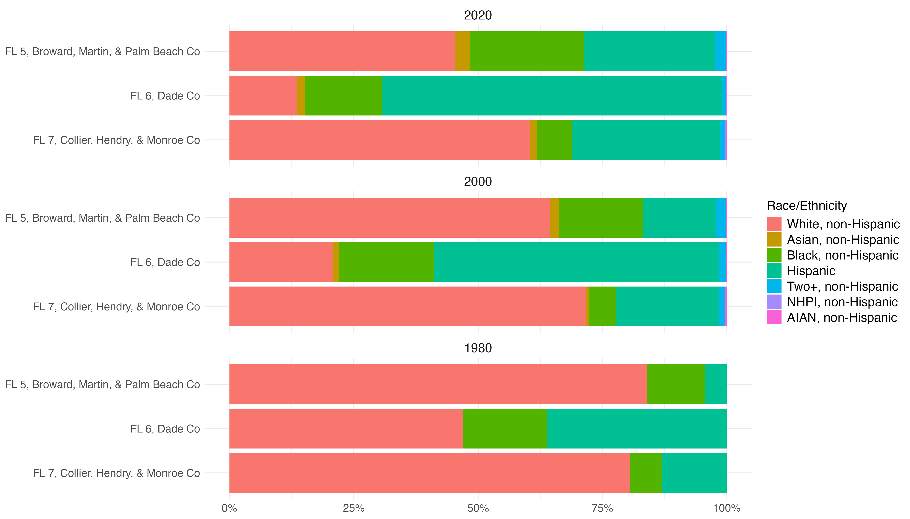
- Race/ethnicity categories not available in 1980 Census: Asian, non-Hispanic; Two+ races, non-Hispanic; NHPI, non-Hispanic; AIAN non-Hispanic
Research question 1
Socioeconomic characteristics of Miami area Geomarkets
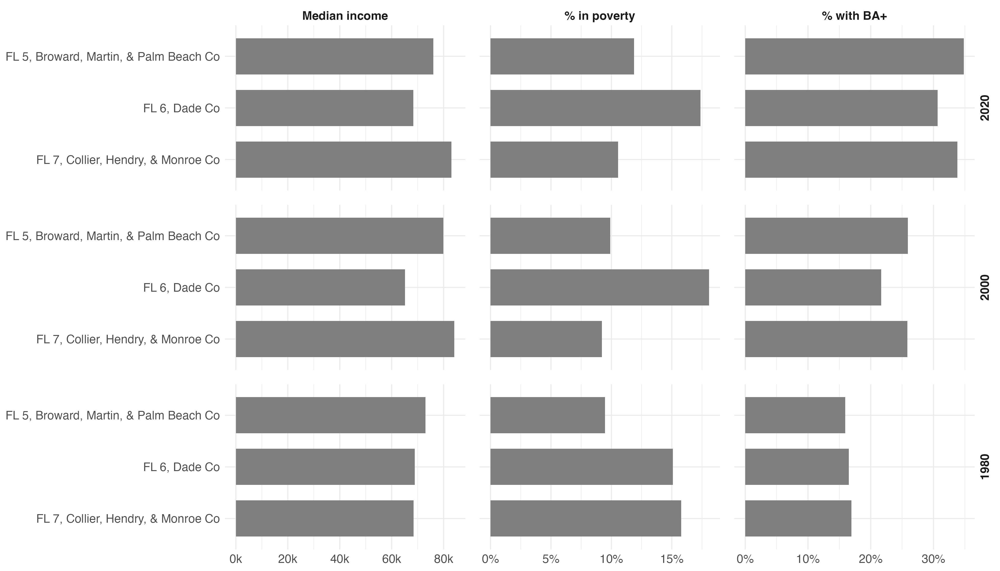
- Household income measured using 2024 CPI
Research question 1
Racial/ethnic and socioeconomic characteristics of Miami area Geomarkets over time
|
1980
|
2000
|
2020
|
||||||||||||||||
|---|---|---|---|---|---|---|---|---|---|---|---|---|---|---|---|---|---|---|
| Wt. Mean | Mean | SD | P25 | P50 | P75 | Wt. Mean | Mean | SD | P25 | P50 | P75 | Wt. Mean | Mean | SD | P25 | P50 | P75 | |
| % White, non-Hispanic | ||||||||||||||||||
| FL 5, Broward, Martin, & Palm Beach Co | 84.0 | 82.3 | 27.3 | 85.9 | 94.0 | 97.0 | 64.4 | 64.9 | 27.4 | 49.5 | 73.1 | 86.2 | 45.3 | 49.3 | 27.1 | 25.8 | 49.3 | 72.7 |
| FL 6, Dade Co | 47.0 | 48.3 | 30.8 | 20.1 | 47.1 | 78.9 | 20.7 | 22.4 | 20.4 | 7.0 | 14.8 | 33.1 | 13.6 | 14.9 | 15.5 | 3.7 | 8.7 | 22.0 |
| FL 7, Collier, Hendry, & Monroe Co | 80.6 | 80.8 | 23.7 | 73.9 | 91.4 | 96.8 | 71.7 | 72.8 | 24.9 | 63.6 | 79.3 | 91.0 | 60.5 | 65.4 | 26.8 | 51.5 | 74.3 | 85.3 |
| % Asian, non-Hispanic | ||||||||||||||||||
| FL 5, Broward, Martin, & Palm Beach Co | NA | NA | NA | NA | NA | NA | 1.9 | 1.7 | 1.3 | 0.7 | 1.4 | 2.4 | 3.1 | 2.9 | 3.3 | 0.5 | 1.8 | 4.1 |
| FL 6, Dade Co | NA | NA | NA | NA | NA | NA | 1.4 | 1.3 | 1.3 | 0.3 | 0.9 | 1.9 | 1.5 | 1.6 | 2.5 | 0.0 | 0.5 | 2.3 |
| FL 7, Collier, Hendry, & Monroe Co | NA | NA | NA | NA | NA | NA | 0.6 | 0.6 | 0.5 | 0.3 | 0.6 | 0.8 | 1.4 | 1.4 | 2.2 | 0.0 | 0.7 | 1.9 |
| % Black, non-Hispanic | ||||||||||||||||||
| FL 5, Broward, Martin, & Palm Beach Co | 11.7 | 12.0 | 25.7 | 0.2 | 0.7 | 4.7 | 16.9 | 16.9 | 24.3 | 2.0 | 6.3 | 17.9 | 22.9 | 20.4 | 23.2 | 3.3 | 11.4 | 28.6 |
| FL 6, Dade Co | 16.8 | 18.0 | 30.0 | 0.3 | 1.4 | 16.7 | 19.0 | 21.2 | 29.3 | 0.9 | 3.7 | 35.8 | 15.6 | 14.7 | 23.8 | 0.3 | 2.6 | 15.4 |
| FL 7, Collier, Hendry, & Monroe Co | 6.5 | 6.6 | 18.6 | 0.1 | 0.9 | 3.0 | 5.4 | 5.9 | 11.0 | 0.6 | 1.8 | 6.8 | 7.1 | 6.4 | 10.5 | 0.1 | 2.4 | 8.1 |
| % Hispanic | ||||||||||||||||||
| FL 5, Broward, Martin, & Palm Beach Co | 4.3 | 4.8 | 6.9 | 1.7 | 3.1 | 5.7 | 14.7 | 14.0 | 11.5 | 5.8 | 10.7 | 19.3 | 26.4 | 24.8 | 17.0 | 11.2 | 21.0 | 35.8 |
| FL 6, Dade Co | 36.2 | 32.5 | 27.7 | 10.1 | 21.0 | 55.4 | 57.4 | 53.3 | 29.1 | 25.9 | 54.4 | 82.8 | 68.4 | 67.5 | 25.1 | 49.6 | 73.5 | 89.7 |
| FL 7, Collier, Hendry, & Monroe Co | 12.9 | 11.8 | 13.1 | 1.5 | 6.5 | 18.7 | 20.8 | 18.1 | 17.1 | 5.1 | 14.5 | 24.9 | 29.7 | 25.2 | 21.5 | 9.6 | 19.1 | 37.6 |
| % Two+, non-Hispanic | ||||||||||||||||||
| FL 5, Broward, Martin, & Palm Beach Co | NA | NA | NA | NA | NA | NA | 2.0 | 1.9 | 2.0 | 0.8 | 1.3 | 2.2 | 2.1 | 2.0 | 2.2 | 0.5 | 1.4 | 2.7 |
| FL 6, Dade Co | NA | NA | NA | NA | NA | NA | 1.4 | 1.5 | 2.4 | 0.4 | 1.0 | 1.8 | 0.8 | 0.8 | 2.2 | 0.0 | 0.0 | 0.9 |
| FL 7, Collier, Hendry, & Monroe Co | NA | NA | NA | NA | NA | NA | 1.2 | 1.4 | 2.3 | 0.6 | 0.9 | 1.5 | 1.1 | 1.0 | 1.5 | 0.0 | 0.4 | 1.4 |
| % NHPI, non-Hispanic | ||||||||||||||||||
| FL 5, Broward, Martin, & Palm Beach Co | NA | NA | NA | NA | NA | NA | 0.0 | 0.0 | 0.1 | 0.0 | 0.0 | 0.1 | 0.0 | 0.0 | 0.2 | 0.0 | 0.0 | 0.0 |
| FL 6, Dade Co | NA | NA | NA | NA | NA | NA | 0.0 | 0.0 | 0.0 | 0.0 | 0.0 | 0.0 | 0.0 | 0.0 | 0.6 | 0.0 | 0.0 | 0.0 |
| FL 7, Collier, Hendry, & Monroe Co | NA | NA | NA | NA | NA | NA | 0.0 | 0.0 | 0.0 | 0.0 | 0.0 | 0.0 | 0.0 | 0.0 | 0.3 | 0.0 | 0.0 | 0.0 |
| % AIAN, non-Hispanic | ||||||||||||||||||
| FL 5, Broward, Martin, & Palm Beach Co | NA | NA | NA | NA | NA | NA | 0.2 | 0.3 | 3.2 | 0.1 | 0.1 | 0.2 | 0.1 | 0.1 | 0.4 | 0.0 | 0.0 | 0.0 |
| FL 6, Dade Co | NA | NA | NA | NA | NA | NA | 0.1 | 0.1 | 0.1 | 0.0 | 0.1 | 0.1 | 0.1 | 0.1 | 0.6 | 0.0 | 0.0 | 0.0 |
| FL 7, Collier, Hendry, & Monroe Co | NA | NA | NA | NA | NA | NA | 0.3 | 1.0 | 7.7 | 0.1 | 0.2 | 0.3 | 0.2 | 0.4 | 3.9 | 0.0 | 0.0 | 0.0 |
| Median income | ||||||||||||||||||
| FL 5, Broward, Martin, & Palm Beach Co | NA | 77.5 | 27.4 | 58.6 | 73.0 | 91.4 | NA | 90.0 | 39.7 | 62.6 | 79.9 | 108.2 | NA | 85.7 | 41.1 | 56.8 | 76.0 | 104.4 |
| FL 6, Dade Co | NA | 74.0 | 35.4 | 50.6 | 68.9 | 90.9 | NA | 75.1 | 42.8 | 48.5 | 65.1 | 92.0 | NA | 76.7 | 39.8 | 47.9 | 68.3 | 94.3 |
| FL 7, Collier, Hendry, & Monroe Co | NA | 73.7 | 39.7 | 53.1 | 68.5 | 83.7 | NA | 90.0 | 35.1 | 67.7 | 84.1 | 101.4 | NA | 88.7 | 36.5 | 64.0 | 83.0 | 110.0 |
| % in poverty | ||||||||||||||||||
| FL 5, Broward, Martin, & Palm Beach Co | 9.5 | 10.3 | 10.0 | 4.5 | 6.9 | 12.3 | 9.9 | 10.4 | 8.3 | 4.8 | 7.8 | 13.4 | 11.9 | 12.0 | 8.4 | 6.0 | 10.2 | 15.7 |
| FL 6, Dade Co | 15.1 | 15.6 | 12.0 | 7.0 | 11.1 | 20.8 | 18.1 | 18.7 | 12.9 | 9.2 | 15.4 | 25.1 | 17.4 | 16.8 | 11.0 | 8.7 | 14.3 | 23.0 |
| FL 7, Collier, Hendry, & Monroe Co | 15.8 | 14.1 | 12.6 | 6.4 | 11.5 | 15.3 | 9.2 | 10.0 | 9.1 | 4.3 | 7.0 | 12.5 | 10.6 | 10.5 | 8.2 | 5.1 | 8.0 | 12.7 |
| % with BA+ | ||||||||||||||||||
| FL 5, Broward, Martin, & Palm Beach Co | 15.9 | 16.6 | 9.4 | 9.3 | 14.6 | 22.3 | 25.9 | 25.4 | 13.9 | 14.0 | 23.3 | 35.8 | 34.8 | 35.2 | 16.7 | 22.1 | 33.9 | 47.9 |
| FL 6, Dade Co | 16.5 | 16.6 | 12.4 | 7.5 | 12.5 | 20.2 | 21.7 | 21.6 | 16.4 | 9.2 | 15.8 | 29.4 | 30.7 | 32.0 | 18.8 | 17.7 | 27.8 | 42.3 |
| FL 7, Collier, Hendry, & Monroe Co | 16.9 | 17.1 | 11.9 | 8.2 | 14.0 | 23.5 | 25.8 | 25.4 | 16.2 | 13.7 | 22.8 | 33.9 | 33.8 | 35.3 | 18.2 | 23.1 | 35.6 | 46.0 |
- Race/ethnicity categories not available in 1980 Census: Asian, non-Hispanic; Two+ races, non-Hispanic; NHPI, non-Hispanic; AIAN non-Hispanic
- Household income measured using 2024 CPI
Research question 1
Racial/ethnic and socioeconomic characteristics of Miami area Geomarkets over time
Fullscreen
- Race/ethnicity categories not available in 1980 Census: Asian, non-Hispanic; Two+ races, non-Hispanic; NHPI, non-Hispanic; AIAN non-Hispanic
- Household income measured using 2024 CPI
New York City area
Research question 1
Racial/ethnic composition of New York City area Geomarkets
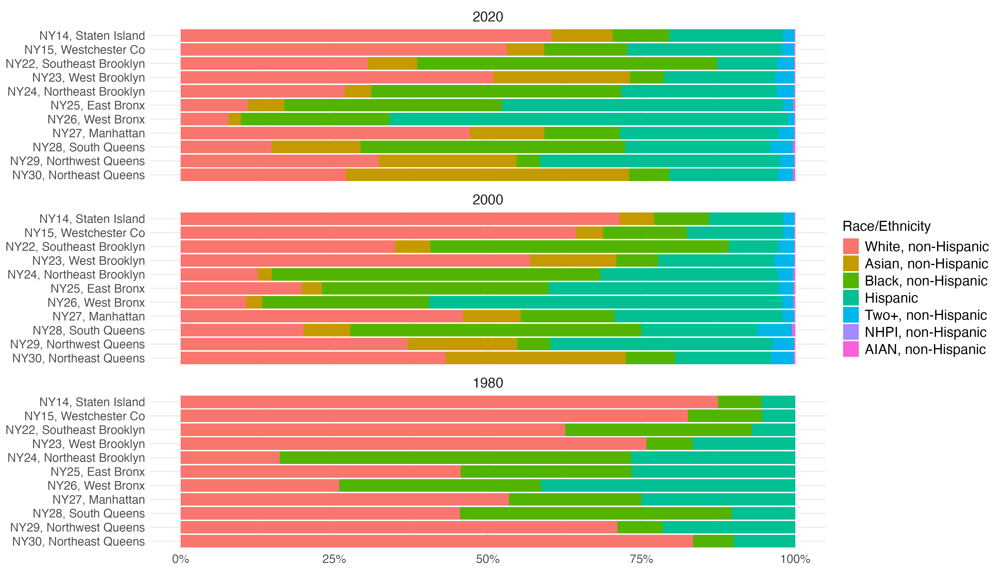
- Race/ethnicity categories not available in 1980 Census: Asian, non-Hispanic; Two+ races, non-Hispanic; NHPI, non-Hispanic; AIAN non-Hispanic
Research question 1
Socioeconomic characteristics of New York City area Geomarkets
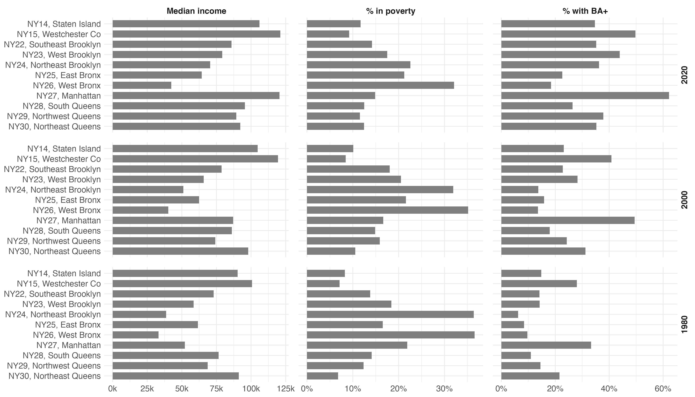
- Household income measured using 2024 CPI
Research question 1
Racial/ethnic and socioeconomic characteristics of New York City area Geomarkets over time
|
1980
|
2000
|
2020
|
||||||||||||||||
|---|---|---|---|---|---|---|---|---|---|---|---|---|---|---|---|---|---|---|
| Wt. Mean | Mean | SD | P25 | P50 | P75 | Wt. Mean | Mean | SD | P25 | P50 | P75 | Wt. Mean | Mean | SD | P25 | P50 | P75 | |
| % White, non-Hispanic | ||||||||||||||||||
| NY14, Staten Island | 87.4 | 82.8 | 19.9 | 81.0 | 90.8 | 95.3 | 71.4 | 67.8 | 24.2 | 53.6 | 75.8 | 87.4 | 60.4 | 57.3 | 26.2 | 37.2 | 63.8 | 78.3 |
| NY15, Westchester Co | 82.5 | 79.5 | 24.6 | 72.9 | 92.1 | 95.4 | 64.3 | 64.8 | 28.7 | 45.2 | 76.4 | 88.7 | 53.1 | 50.7 | 27.0 | 27.2 | 54.9 | 74.4 |
| NY22, Southeast Brooklyn | 62.6 | 65.5 | 36.7 | 27.1 | 87.1 | 95.4 | 34.9 | 38.6 | 35.7 | 3.2 | 23.8 | 78.6 | 30.5 | 30.1 | 31.8 | 3.4 | 12.1 | 62.4 |
| NY23, West Brooklyn | 75.8 | 72.5 | 29.2 | 53.9 | 88.4 | 94.7 | 56.9 | 56.5 | 27.1 | 35.6 | 62.4 | 77.7 | 50.9 | 51.4 | 25.1 | 33.9 | 52.9 | 71.2 |
| NY24, Northeast Brooklyn | 16.1 | 22.2 | 29.7 | 1.3 | 5.7 | 33.6 | 12.6 | 14.8 | 23.7 | 0.8 | 2.5 | 17.5 | 26.7 | 26.0 | 25.5 | 4.3 | 17.4 | 39.1 |
| NY25, East Bronx | 45.6 | 46.7 | 34.8 | 10.4 | 44.8 | 84.2 | 19.7 | 22.1 | 26.4 | 2.6 | 8.5 | 36.0 | 10.9 | 12.8 | 17.3 | 1.8 | 3.9 | 16.9 |
| NY26, West Bronx | 25.8 | 26.8 | 33.0 | 2.4 | 5.8 | 50.7 | 10.7 | 13.7 | 24.9 | 1.1 | 1.9 | 10.7 | 7.7 | 9.7 | 18.6 | 0.8 | 2.2 | 6.4 |
| NY27, Manhattan | 53.4 | 50.3 | 36.0 | 9.2 | 60.8 | 86.4 | 46.0 | 45.7 | 34.0 | 5.4 | 55.6 | 77.5 | 47.1 | 48.7 | 27.5 | 20.4 | 57.2 | 72.0 |
| NY28, South Queens | 45.4 | 43.0 | 37.4 | 5.7 | 32.2 | 84.9 | 20.0 | 18.0 | 23.8 | 1.4 | 6.2 | 27.9 | 14.8 | 12.1 | 19.6 | 1.2 | 3.8 | 12.5 |
| NY29, Northwest Queens | 71.1 | 68.5 | 27.4 | 49.3 | 76.5 | 91.0 | 37.0 | 41.5 | 27.3 | 16.0 | 40.8 | 64.0 | 32.2 | 34.4 | 24.2 | 10.4 | 34.5 | 53.8 |
| NY30, Northeast Queens | 83.4 | 75.0 | 24.1 | 65.8 | 86.4 | 92.3 | 43.1 | 42.9 | 25.0 | 21.5 | 43.0 | 63.4 | 26.9 | 27.0 | 20.2 | 10.4 | 22.6 | 42.6 |
| % Asian, non-Hispanic | ||||||||||||||||||
| NY14, Staten Island | NA | NA | NA | NA | NA | NA | 5.6 | 6.2 | 7.5 | 2.9 | 4.4 | 7.3 | 9.9 | 9.8 | 8.0 | 3.6 | 8.2 | 15.0 |
| NY15, Westchester Co | NA | NA | NA | NA | NA | NA | 4.4 | 4.3 | 3.4 | 2.2 | 3.5 | 5.3 | 6.1 | 6.2 | 5.4 | 2.5 | 4.9 | 8.7 |
| NY22, Southeast Brooklyn | NA | NA | NA | NA | NA | NA | 5.7 | 5.7 | 7.6 | 0.9 | 3.0 | 6.1 | 8.0 | 7.7 | 10.4 | 0.9 | 3.5 | 10.2 |
| NY23, West Brooklyn | NA | NA | NA | NA | NA | NA | 14.0 | 12.7 | 11.9 | 4.1 | 8.6 | 19.5 | 22.2 | 22.4 | 19.9 | 7.1 | 16.3 | 34.0 |
| NY24, Northeast Brooklyn | NA | NA | NA | NA | NA | NA | 2.2 | 2.9 | 4.2 | 0.4 | 1.1 | 3.7 | 4.3 | 4.3 | 5.0 | 1.0 | 2.9 | 5.8 |
| NY25, East Bronx | NA | NA | NA | NA | NA | NA | 3.3 | 3.5 | 3.9 | 0.8 | 2.2 | 4.5 | 6.0 | 6.0 | 7.6 | 0.8 | 3.0 | 8.2 |
| NY26, West Bronx | NA | NA | NA | NA | NA | NA | 2.6 | 2.3 | 2.8 | 0.2 | 0.8 | 3.9 | 2.1 | 2.1 | 3.2 | 0.0 | 0.9 | 2.7 |
| NY27, Manhattan | NA | NA | NA | NA | NA | NA | 9.4 | 8.8 | 13.0 | 1.6 | 5.3 | 10.3 | 12.1 | 12.6 | 12.2 | 4.1 | 9.6 | 16.5 |
| NY28, South Queens | NA | NA | NA | NA | NA | NA | 7.6 | 8.0 | 9.1 | 0.7 | 3.1 | 13.5 | 14.5 | 13.6 | 14.5 | 1.9 | 7.2 | 22.4 |
| NY29, Northwest Queens | NA | NA | NA | NA | NA | NA | 17.8 | 15.8 | 13.7 | 5.2 | 12.2 | 21.0 | 22.4 | 21.3 | 17.5 | 7.6 | 16.8 | 30.9 |
| NY30, Northeast Queens | NA | NA | NA | NA | NA | NA | 29.3 | 27.0 | 15.0 | 16.1 | 24.2 | 34.8 | 46.1 | 45.0 | 19.1 | 31.0 | 44.4 | 57.6 |
| % Black, non-Hispanic | ||||||||||||||||||
| NY14, Staten Island | 7.1 | 8.2 | 13.7 | 0.3 | 1.7 | 9.0 | 9.0 | 10.3 | 14.7 | 0.4 | 2.4 | 17.1 | 9.3 | 11.3 | 16.0 | 0.6 | 3.2 | 17.2 |
| NY15, Westchester Co | 12.1 | 13.1 | 21.7 | 0.9 | 2.5 | 14.2 | 13.6 | 14.4 | 21.4 | 1.5 | 4.7 | 17.7 | 13.5 | 15.0 | 19.0 | 2.7 | 7.8 | 18.1 |
| NY22, Southeast Brooklyn | 30.3 | 25.3 | 33.3 | 0.2 | 2.3 | 58.7 | 48.6 | 45.0 | 37.5 | 1.4 | 54.4 | 83.4 | 48.8 | 49.1 | 36.9 | 3.9 | 64.1 | 83.4 |
| NY23, West Brooklyn | 7.5 | 9.2 | 19.2 | 0.1 | 0.5 | 4.9 | 6.8 | 9.5 | 18.4 | 0.4 | 1.2 | 7.5 | 5.5 | 5.2 | 10.3 | 0.4 | 1.5 | 5.3 |
| NY24, Northeast Brooklyn | 57.1 | 48.7 | 36.6 | 5.2 | 59.4 | 81.9 | 53.4 | 48.5 | 33.6 | 12.2 | 57.4 | 80.7 | 40.7 | 40.1 | 27.1 | 14.0 | 43.8 | 64.4 |
| NY25, East Bronx | 27.8 | 26.0 | 26.4 | 1.9 | 18.7 | 40.9 | 36.9 | 33.5 | 27.9 | 9.7 | 26.3 | 54.7 | 35.4 | 33.7 | 24.3 | 12.7 | 26.5 | 54.5 |
| NY26, West Bronx | 32.8 | 29.8 | 22.9 | 8.6 | 27.4 | 45.6 | 27.2 | 27.8 | 16.0 | 16.6 | 25.8 | 36.7 | 24.2 | 24.1 | 13.9 | 12.5 | 22.3 | 32.9 |
| NY27, Manhattan | 21.6 | 23.3 | 31.4 | 2.9 | 8.2 | 28.0 | 15.3 | 18.8 | 24.9 | 2.7 | 6.5 | 25.3 | 12.3 | 12.4 | 17.0 | 1.8 | 4.6 | 16.0 |
| NY28, South Queens | 44.2 | 43.7 | 40.3 | 1.1 | 32.7 | 87.3 | 47.4 | 47.6 | 37.0 | 8.2 | 50.0 | 87.9 | 43.1 | 44.8 | 34.5 | 8.7 | 49.4 | 79.3 |
| NY29, Northwest Queens | 7.4 | 6.3 | 17.7 | 0.0 | 0.5 | 2.6 | 5.4 | 5.9 | 12.6 | 0.7 | 1.4 | 3.4 | 3.8 | 4.2 | 9.7 | 0.4 | 1.4 | 3.2 |
| NY30, Northeast Queens | 6.6 | 8.2 | 16.0 | 0.1 | 1.1 | 8.3 | 8.0 | 9.8 | 15.6 | 0.7 | 2.4 | 14.4 | 6.5 | 6.5 | 9.3 | 0.4 | 2.0 | 9.6 |
| % Hispanic | ||||||||||||||||||
| NY14, Staten Island | 5.5 | 6.6 | 8.2 | 2.6 | 3.9 | 7.5 | 12.1 | 13.4 | 9.3 | 5.4 | 9.9 | 18.8 | 18.5 | 19.3 | 13.3 | 9.5 | 15.4 | 26.8 |
| NY15, Westchester Co | 5.4 | 5.3 | 6.6 | 1.7 | 2.6 | 5.2 | 15.7 | 14.0 | 14.6 | 4.0 | 8.4 | 17.4 | 25.1 | 25.2 | 19.5 | 9.2 | 19.4 | 36.7 |
| NY22, Southeast Brooklyn | 7.1 | 6.4 | 5.5 | 2.4 | 4.8 | 8.7 | 8.1 | 7.7 | 5.5 | 4.4 | 6.5 | 9.5 | 9.8 | 9.7 | 8.4 | 4.5 | 7.8 | 12.8 |
| NY23, West Brooklyn | 16.7 | 14.9 | 18.0 | 3.1 | 6.1 | 19.5 | 18.9 | 17.4 | 17.4 | 6.8 | 11.1 | 20.9 | 18.1 | 17.2 | 14.8 | 7.7 | 13.6 | 21.1 |
| NY24, Northeast Brooklyn | 26.7 | 26.9 | 24.1 | 7.7 | 18.4 | 42.0 | 28.9 | 30.1 | 24.4 | 10.0 | 21.6 | 48.1 | 25.3 | 26.0 | 19.7 | 11.2 | 19.3 | 36.3 |
| NY25, East Bronx | 26.6 | 25.6 | 23.2 | 7.8 | 17.3 | 39.7 | 37.4 | 37.3 | 22.2 | 17.8 | 34.0 | 56.7 | 45.7 | 44.2 | 18.8 | 29.0 | 44.6 | 59.7 |
| NY26, West Bronx | 41.4 | 41.1 | 24.7 | 22.4 | 40.8 | 58.4 | 57.5 | 53.7 | 21.2 | 46.4 | 59.3 | 68.5 | 64.8 | 62.3 | 18.7 | 55.6 | 65.8 | 75.1 |
| NY27, Manhattan | 25.0 | 21.0 | 22.8 | 4.4 | 9.2 | 32.8 | 27.3 | 24.0 | 24.2 | 5.7 | 13.8 | 33.5 | 25.8 | 23.0 | 21.3 | 7.2 | 15.2 | 31.8 |
| NY28, South Queens | 10.4 | 10.6 | 11.0 | 3.4 | 6.2 | 13.2 | 18.9 | 18.2 | 15.0 | 5.3 | 14.0 | 27.5 | 23.7 | 21.5 | 17.3 | 8.5 | 15.7 | 30.4 |
| NY29, Northwest Queens | 21.5 | 18.4 | 17.4 | 4.3 | 13.3 | 28.2 | 36.2 | 32.7 | 21.5 | 15.0 | 28.0 | 45.8 | 39.1 | 37.4 | 23.3 | 20.3 | 32.0 | 49.8 |
| NY30, Northeast Queens | 10.0 | 10.0 | 9.9 | 3.5 | 5.8 | 13.2 | 15.6 | 15.3 | 9.1 | 8.3 | 14.1 | 20.2 | 17.7 | 17.1 | 9.6 | 10.8 | 15.6 | 22.4 |
| % Two+, non-Hispanic | ||||||||||||||||||
| NY14, Staten Island | NA | NA | NA | NA | NA | NA | 1.8 | 1.9 | 1.3 | 0.8 | 1.6 | 2.7 | 1.8 | 2.0 | 2.8 | 0.0 | 1.2 | 2.8 |
| NY15, Westchester Co | NA | NA | NA | NA | NA | NA | 1.8 | 1.9 | 1.2 | 1.0 | 1.5 | 2.4 | 2.1 | 2.1 | 2.2 | 0.5 | 1.4 | 2.9 |
| NY22, Southeast Brooklyn | NA | NA | NA | NA | NA | NA | 2.5 | 2.4 | 1.5 | 1.4 | 2.3 | 3.2 | 2.7 | 2.7 | 2.7 | 0.7 | 1.9 | 3.7 |
| NY23, West Brooklyn | NA | NA | NA | NA | NA | NA | 3.3 | 3.2 | 2.0 | 1.9 | 2.8 | 4.1 | 3.1 | 3.0 | 3.1 | 0.5 | 2.1 | 4.3 |
| NY24, Northeast Brooklyn | NA | NA | NA | NA | NA | NA | 2.5 | 2.5 | 1.7 | 1.5 | 2.2 | 3.1 | 2.8 | 2.9 | 3.1 | 0.8 | 2.0 | 3.9 |
| NY25, East Bronx | NA | NA | NA | NA | NA | NA | 2.4 | 2.6 | 1.7 | 1.4 | 2.3 | 3.5 | 1.7 | 1.7 | 2.2 | 0.2 | 0.9 | 2.2 |
| NY26, West Bronx | NA | NA | NA | NA | NA | NA | 1.8 | 1.8 | 1.5 | 0.9 | 1.5 | 2.2 | 1.0 | 1.1 | 1.3 | 0.0 | 0.7 | 1.6 |
| NY27, Manhattan | NA | NA | NA | NA | NA | NA | 1.9 | 2.0 | 1.0 | 1.3 | 1.9 | 2.5 | 2.6 | 2.7 | 2.1 | 1.1 | 2.2 | 3.8 |
| NY28, South Queens | NA | NA | NA | NA | NA | NA | 5.7 | 5.5 | 4.8 | 2.3 | 3.8 | 7.2 | 3.6 | 3.3 | 3.3 | 0.9 | 2.2 | 4.4 |
| NY29, Northwest Queens | NA | NA | NA | NA | NA | NA | 3.4 | 3.3 | 2.3 | 1.6 | 2.8 | 4.4 | 2.3 | 2.2 | 2.4 | 0.2 | 1.4 | 3.3 |
| NY30, Northeast Queens | NA | NA | NA | NA | NA | NA | 3.7 | 3.7 | 2.9 | 1.9 | 2.9 | 4.2 | 2.4 | 2.4 | 2.8 | 0.4 | 1.6 | 3.4 |
| % NHPI, non-Hispanic | ||||||||||||||||||
| NY14, Staten Island | NA | NA | NA | NA | NA | NA | 0.0 | 0.0 | 0.0 | 0.0 | 0.0 | 0.0 | 0.0 | 0.0 | 0.1 | 0.0 | 0.0 | 0.0 |
| NY15, Westchester Co | NA | NA | NA | NA | NA | NA | 0.0 | 0.0 | 0.1 | 0.0 | 0.0 | 0.0 | 0.0 | 0.0 | 0.1 | 0.0 | 0.0 | 0.0 |
| NY22, Southeast Brooklyn | NA | NA | NA | NA | NA | NA | 0.0 | 0.0 | 0.0 | 0.0 | 0.0 | 0.0 | 0.0 | 0.0 | 0.2 | 0.0 | 0.0 | 0.0 |
| NY23, West Brooklyn | NA | NA | NA | NA | NA | NA | 0.0 | 0.0 | 0.1 | 0.0 | 0.0 | 0.0 | 0.1 | 0.1 | 0.6 | 0.0 | 0.0 | 0.0 |
| NY24, Northeast Brooklyn | NA | NA | NA | NA | NA | NA | 0.0 | 0.0 | 0.1 | 0.0 | 0.0 | 0.0 | 0.0 | 0.0 | 0.3 | 0.0 | 0.0 | 0.0 |
| NY25, East Bronx | NA | NA | NA | NA | NA | NA | 0.0 | 0.0 | 0.1 | 0.0 | 0.0 | 0.0 | 0.0 | 0.0 | 0.2 | 0.0 | 0.0 | 0.0 |
| NY26, West Bronx | NA | NA | NA | NA | NA | NA | 0.0 | 0.0 | 0.1 | 0.0 | 0.0 | 0.0 | 0.0 | 0.0 | 0.2 | 0.0 | 0.0 | 0.0 |
| NY27, Manhattan | NA | NA | NA | NA | NA | NA | 0.0 | 0.0 | 0.1 | 0.0 | 0.0 | 0.1 | 0.0 | 0.0 | 0.2 | 0.0 | 0.0 | 0.0 |
| NY28, South Queens | NA | NA | NA | NA | NA | NA | 0.0 | 0.1 | 0.1 | 0.0 | 0.0 | 0.1 | 0.1 | 0.1 | 0.5 | 0.0 | 0.0 | 0.0 |
| NY29, Northwest Queens | NA | NA | NA | NA | NA | NA | 0.0 | 0.0 | 0.1 | 0.0 | 0.0 | 0.0 | 0.0 | 0.0 | 0.1 | 0.0 | 0.0 | 0.0 |
| NY30, Northeast Queens | NA | NA | NA | NA | NA | NA | 0.0 | 0.0 | 0.1 | 0.0 | 0.0 | 0.0 | 0.1 | 0.0 | 0.3 | 0.0 | 0.0 | 0.0 |
| % AIAN, non-Hispanic | ||||||||||||||||||
| NY14, Staten Island | NA | NA | NA | NA | NA | NA | 0.1 | 0.1 | 0.2 | 0.0 | 0.1 | 0.2 | 0.1 | 0.1 | 0.3 | 0.0 | 0.0 | 0.0 |
| NY15, Westchester Co | NA | NA | NA | NA | NA | NA | 0.1 | 0.1 | 0.1 | 0.0 | 0.1 | 0.2 | 0.2 | 0.2 | 0.8 | 0.0 | 0.0 | 0.0 |
| NY22, Southeast Brooklyn | NA | NA | NA | NA | NA | NA | 0.1 | 0.1 | 0.2 | 0.0 | 0.1 | 0.2 | 0.1 | 0.1 | 0.5 | 0.0 | 0.0 | 0.0 |
| NY23, West Brooklyn | NA | NA | NA | NA | NA | NA | 0.1 | 0.1 | 0.2 | 0.0 | 0.1 | 0.2 | 0.1 | 0.1 | 0.3 | 0.0 | 0.0 | 0.0 |
| NY24, Northeast Brooklyn | NA | NA | NA | NA | NA | NA | 0.3 | 0.3 | 0.2 | 0.1 | 0.2 | 0.3 | 0.1 | 0.1 | 0.5 | 0.0 | 0.0 | 0.0 |
| NY25, East Bronx | NA | NA | NA | NA | NA | NA | 0.2 | 0.2 | 0.3 | 0.1 | 0.2 | 0.3 | 0.3 | 0.4 | 1.7 | 0.0 | 0.0 | 0.0 |
| NY26, West Bronx | NA | NA | NA | NA | NA | NA | 0.3 | 0.3 | 0.3 | 0.1 | 0.2 | 0.3 | 0.1 | 0.1 | 0.6 | 0.0 | 0.0 | 0.0 |
| NY27, Manhattan | NA | NA | NA | NA | NA | NA | 0.2 | 0.2 | 0.3 | 0.0 | 0.1 | 0.2 | 0.1 | 0.1 | 0.5 | 0.0 | 0.0 | 0.0 |
| NY28, South Queens | NA | NA | NA | NA | NA | NA | 0.5 | 0.5 | 1.1 | 0.1 | 0.3 | 0.6 | 0.3 | 0.4 | 2.3 | 0.0 | 0.0 | 0.0 |
| NY29, Northwest Queens | NA | NA | NA | NA | NA | NA | 0.2 | 0.2 | 0.2 | 0.0 | 0.1 | 0.3 | 0.1 | 0.1 | 0.5 | 0.0 | 0.0 | 0.0 |
| NY30, Northeast Queens | NA | NA | NA | NA | NA | NA | 0.2 | 0.2 | 0.4 | 0.0 | 0.1 | 0.2 | 0.3 | 0.4 | 1.0 | 0.0 | 0.0 | 0.0 |
| Median income | ||||||||||||||||||
| NY14, Staten Island | NA | 86.6 | 23.7 | 72.6 | 90.3 | 103.5 | NA | 99.5 | 32.3 | 79.4 | 104.8 | 119.5 | NA | 104.1 | 32.4 | 88.3 | 106.1 | 126.9 |
| NY15, Westchester Co | NA | 113.1 | 54.7 | 76.8 | 100.7 | 138.8 | NA | 140.0 | 79.0 | 88.4 | 119.4 | 172.8 | NA | 136.6 | 70.1 | 86.7 | 121.1 | 171.6 |
| NY22, Southeast Brooklyn | NA | 72.9 | 21.1 | 55.4 | 73.0 | 88.1 | NA | 77.8 | 29.5 | 59.2 | 78.7 | 95.3 | NA | 88.8 | 26.5 | 73.4 | 85.9 | 102.2 |
| NY23, West Brooklyn | NA | 58.8 | 18.4 | 46.9 | 58.5 | 68.6 | NA | 71.5 | 29.8 | 54.4 | 65.8 | 84.5 | NA | 95.1 | 49.1 | 62.1 | 79.2 | 118.1 |
| NY24, Northeast Brooklyn | NA | 41.7 | 15.4 | 30.8 | 38.6 | 48.9 | NA | 52.3 | 22.7 | 38.7 | 51.1 | 63.6 | NA | 75.4 | 36.6 | 49.7 | 70.4 | 95.0 |
| NY25, East Bronx | NA | 63.4 | 24.3 | 48.6 | 61.7 | 76.7 | NA | 63.5 | 31.9 | 43.7 | 62.5 | 84.6 | NA | 68.1 | 27.5 | 49.6 | 64.4 | 85.0 |
| NY26, West Bronx | NA | 44.5 | 30.2 | 27.7 | 33.2 | 51.9 | NA | 47.7 | 32.3 | 30.4 | 40.2 | 56.8 | NA | 48.5 | 25.4 | 32.4 | 42.4 | 53.7 |
| NY27, Manhattan | NA | 60.9 | 34.5 | 35.5 | 52.1 | 77.7 | NA | 93.6 | 61.8 | 44.5 | 87.0 | 130.6 | NA | 126.4 | 68.1 | 67.6 | 120.5 | 175.4 |
| NY28, South Queens | NA | 77.3 | 22.2 | 64.0 | 76.6 | 88.5 | NA | 85.9 | 29.7 | 70.8 | 86.1 | 104.4 | NA | 96.6 | 25.9 | 83.3 | 95.6 | 111.4 |
| NY29, Northwest Queens | NA | 69.0 | 19.7 | 56.1 | 68.7 | 80.4 | NA | 75.9 | 29.6 | 64.4 | 74.2 | 87.1 | NA | 92.3 | 29.1 | 73.4 | 89.3 | 107.5 |
| NY30, Northeast Queens | NA | 93.8 | 32.1 | 77.3 | 91.1 | 105.1 | NA | 97.8 | 35.9 | 78.3 | 97.9 | 115.3 | NA | 91.5 | 29.7 | 70.5 | 92.2 | 111.2 |
| % in poverty | ||||||||||||||||||
| NY14, Staten Island | 8.3 | 9.6 | 9.1 | 4.0 | 6.1 | 10.6 | 10.1 | 11.2 | 10.1 | 4.9 | 7.6 | 14.2 | 11.7 | 12.5 | 11.2 | 5.4 | 9.5 | 14.6 |
| NY15, Westchester Co | 7.1 | 7.2 | 7.2 | 2.7 | 4.3 | 9.2 | 8.5 | 8.3 | 8.6 | 2.6 | 5.1 | 11.0 | 9.2 | 9.6 | 9.6 | 3.8 | 6.7 | 11.6 |
| NY22, Southeast Brooklyn | 13.8 | 13.1 | 10.3 | 6.4 | 10.0 | 17.8 | 18.0 | 17.0 | 9.2 | 10.1 | 14.7 | 22.6 | 14.2 | 12.7 | 8.4 | 7.1 | 11.7 | 17.5 |
| NY23, West Brooklyn | 18.4 | 18.3 | 12.1 | 9.9 | 15.0 | 24.5 | 20.5 | 20.4 | 10.5 | 13.3 | 19.6 | 26.1 | 17.5 | 17.6 | 11.8 | 9.6 | 15.3 | 23.3 |
| NY24, Northeast Brooklyn | 36.4 | 35.1 | 14.4 | 25.0 | 36.0 | 45.6 | 31.9 | 30.3 | 13.2 | 20.7 | 29.1 | 39.2 | 22.5 | 22.7 | 11.9 | 13.3 | 21.2 | 28.7 |
| NY25, East Bronx | 16.5 | 16.7 | 13.1 | 7.6 | 12.9 | 20.2 | 21.6 | 22.6 | 15.6 | 10.9 | 18.8 | 31.0 | 21.2 | 21.0 | 12.5 | 11.6 | 18.6 | 27.8 |
| NY26, West Bronx | 36.6 | 35.1 | 19.2 | 18.4 | 40.3 | 48.3 | 35.2 | 35.0 | 16.2 | 24.8 | 38.3 | 45.5 | 32.1 | 31.3 | 12.8 | 25.9 | 30.8 | 39.9 |
| NY27, Manhattan | 21.9 | 23.8 | 15.7 | 10.3 | 20.4 | 34.7 | 16.6 | 19.5 | 14.8 | 6.8 | 14.3 | 30.5 | 14.9 | 15.1 | 11.8 | 5.8 | 11.4 | 21.5 |
| NY28, South Queens | 14.1 | 13.8 | 11.0 | 6.3 | 11.5 | 18.2 | 14.9 | 14.6 | 10.2 | 7.8 | 12.6 | 18.7 | 12.5 | 11.6 | 7.3 | 6.4 | 10.4 | 14.9 |
| NY29, Northwest Queens | 12.3 | 12.8 | 9.6 | 6.1 | 10.3 | 16.2 | 15.9 | 15.9 | 8.7 | 10.1 | 14.7 | 19.8 | 11.5 | 11.4 | 8.6 | 6.7 | 10.4 | 14.4 |
| NY30, Northeast Queens | 6.8 | 7.3 | 6.4 | 3.4 | 5.3 | 9.7 | 10.5 | 10.4 | 8.4 | 5.4 | 8.3 | 13.5 | 12.4 | 11.8 | 8.6 | 5.9 | 9.7 | 14.7 |
| % with BA+ | ||||||||||||||||||
| NY14, Staten Island | 14.8 | 14.8 | 10.1 | 8.3 | 13.1 | 19.2 | 23.2 | 23.6 | 9.4 | 17.8 | 22.9 | 27.3 | 34.7 | 35.0 | 11.2 | 28.3 | 35.4 | 40.9 |
| NY15, Westchester Co | 28.0 | 26.9 | 17.2 | 13.2 | 22.9 | 39.8 | 40.9 | 40.4 | 20.5 | 24.5 | 37.2 | 58.3 | 49.7 | 48.1 | 21.1 | 32.2 | 46.2 | 64.6 |
| NY22, Southeast Brooklyn | 14.1 | 14.7 | 8.3 | 9.8 | 13.2 | 17.6 | 22.8 | 23.7 | 11.7 | 16.0 | 22.0 | 29.5 | 35.2 | 35.6 | 13.1 | 27.0 | 33.9 | 42.9 |
| NY23, West Brooklyn | 14.2 | 13.9 | 11.9 | 5.9 | 11.3 | 17.7 | 28.3 | 27.7 | 16.5 | 15.9 | 23.7 | 35.4 | 43.9 | 42.9 | 21.6 | 26.3 | 37.2 | 56.9 |
| NY24, Northeast Brooklyn | 6.2 | 6.2 | 6.9 | 2.4 | 4.3 | 7.4 | 13.7 | 14.6 | 13.4 | 6.4 | 10.3 | 16.8 | 36.2 | 34.4 | 20.2 | 17.1 | 31.0 | 48.3 |
| NY25, East Bronx | 8.4 | 7.9 | 6.1 | 4.3 | 7.7 | 10.3 | 15.9 | 15.4 | 9.2 | 8.9 | 15.3 | 19.7 | 22.6 | 22.7 | 9.8 | 16.6 | 22.7 | 28.5 |
| NY26, West Bronx | 9.6 | 8.4 | 11.2 | 2.3 | 4.7 | 9.3 | 13.6 | 12.9 | 12.6 | 5.9 | 8.4 | 14.9 | 18.4 | 19.4 | 14.6 | 10.5 | 14.8 | 21.5 |
| NY27, Manhattan | 33.3 | 30.4 | 23.1 | 7.1 | 30.8 | 50.8 | 49.4 | 46.0 | 28.9 | 15.2 | 53.3 | 73.1 | 62.2 | 63.2 | 25.0 | 42.7 | 72.8 | 84.2 |
| NY28, South Queens | 10.9 | 10.9 | 8.5 | 5.7 | 8.6 | 14.1 | 17.9 | 17.8 | 10.1 | 11.4 | 15.6 | 21.4 | 26.4 | 26.2 | 9.8 | 19.3 | 25.0 | 31.2 |
| NY29, Northwest Queens | 14.5 | 13.4 | 10.4 | 6.3 | 10.1 | 17.9 | 24.3 | 23.9 | 13.7 | 14.0 | 21.1 | 29.7 | 37.8 | 36.5 | 19.0 | 23.6 | 34.6 | 48.7 |
| NY30, Northeast Queens | 21.6 | 21.7 | 12.0 | 14.1 | 19.3 | 26.8 | 31.2 | 31.8 | 13.2 | 23.8 | 29.7 | 38.6 | 35.3 | 35.8 | 13.3 | 26.4 | 35.1 | 45.9 |
- Race/ethnicity categories not available in 1980 Census: Asian, non-Hispanic; Two+ races, non-Hispanic; NHPI, non-Hispanic; AIAN non-Hispanic
- Household income measured using 2024 CPI
Research question 1
Racial/ethnic and socioeconomic characteristics of New York City area Geomarkets over time
Fullscreen
- Race/ethnicity categories not available in 1980 Census: Asian, non-Hispanic; Two+ races, non-Hispanic; NHPI, non-Hispanic; AIAN non-Hispanic
- Household income measured using 2024 CPI
Northern New Jersey area
Research question 1
Racial/ethnic composition of Northern New Jersey area Geomarkets
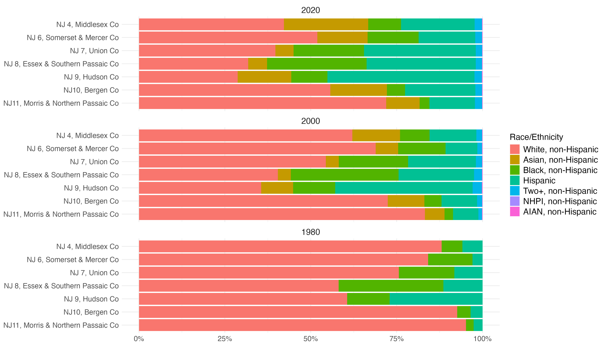
- Race/ethnicity categories not available in 1980 Census: Asian, non-Hispanic; Two+ races, non-Hispanic; NHPI, non-Hispanic; AIAN non-Hispanic
Research question 1
Socioeconomic characteristics of Northern New Jersey area Geomarkets

- Household income measured using 2024 CPI
Research question 1
Racial/ethnic and socioeconomic characteristics of Northern New Jersey area Geomarkets over time
|
1980
|
2000
|
2020
|
||||||||||||||||
|---|---|---|---|---|---|---|---|---|---|---|---|---|---|---|---|---|---|---|
| Wt. Mean | Mean | SD | P25 | P50 | P75 | Wt. Mean | Mean | SD | P25 | P50 | P75 | Wt. Mean | Mean | SD | P25 | P50 | P75 | |
| % White, non-Hispanic | ||||||||||||||||||
| NJ 4, Middlesex Co | 88.1 | 84.0 | 19.3 | 85.0 | 90.9 | 95.6 | 62.1 | 63.7 | 22.9 | 50.3 | 69.4 | 81.5 | 42.2 | 43.4 | 21.3 | 25.3 | 43.6 | 61.7 |
| NJ 6, Somerset & Mercer Co | 84.2 | 83.0 | 24.1 | 83.6 | 93.8 | 97.2 | 68.9 | 67.6 | 27.1 | 53.1 | 75.5 | 89.1 | 51.9 | 51.3 | 25.8 | 31.1 | 56.9 | 73.3 |
| NJ 7, Union Co | 75.6 | 73.5 | 28.8 | 55.6 | 88.4 | 95.7 | 54.4 | 54.1 | 31.3 | 27.0 | 62.5 | 83.9 | 39.7 | 36.8 | 28.4 | 11.0 | 28.7 | 63.8 |
| NJ 8, Essex & Southern Passaic Co | 58.1 | 56.5 | 38.3 | 13.0 | 68.7 | 94.5 | 40.4 | 41.1 | 35.5 | 4.2 | 37.2 | 78.9 | 31.8 | 28.1 | 29.2 | 2.4 | 14.6 | 53.0 |
| NJ 9, Hudson Co | 60.6 | 56.8 | 29.2 | 34.0 | 61.4 | 84.3 | 35.6 | 37.7 | 24.8 | 18.0 | 31.9 | 60.5 | 28.7 | 29.6 | 18.5 | 15.7 | 25.6 | 41.7 |
| NJ10, Bergen Co | 92.6 | 88.7 | 15.8 | 90.1 | 93.8 | 96.1 | 72.4 | 70.4 | 21.4 | 62.0 | 76.5 | 87.3 | 55.7 | 54.9 | 20.4 | 38.3 | 55.7 | 72.1 |
| NJ11, Morris & Northern Passaic Co | 95.2 | 93.3 | 9.5 | 94.1 | 95.9 | 97.3 | 83.2 | 84.3 | 14.7 | 82.0 | 89.2 | 92.2 | 72.0 | 71.8 | 16.9 | 63.1 | 76.9 | 84.1 |
| % Asian, non-Hispanic | ||||||||||||||||||
| NJ 4, Middlesex Co | NA | NA | NA | NA | NA | NA | 13.9 | 11.9 | 11.3 | 3.5 | 7.6 | 17.6 | 24.5 | 23.7 | 20.6 | 6.6 | 17.3 | 35.8 |
| NJ 6, Somerset & Mercer Co | NA | NA | NA | NA | NA | NA | 6.5 | 6.0 | 7.1 | 1.3 | 3.4 | 7.7 | 14.7 | 13.1 | 14.1 | 2.2 | 7.7 | 18.8 |
| NJ 7, Union Co | NA | NA | NA | NA | NA | NA | 3.8 | 4.4 | 4.9 | 1.6 | 3.3 | 5.2 | 5.3 | 5.0 | 4.9 | 1.3 | 3.7 | 6.8 |
| NJ 8, Essex & Southern Passaic Co | NA | NA | NA | NA | NA | NA | 3.8 | 3.8 | 4.2 | 0.5 | 2.4 | 5.5 | 5.5 | 4.8 | 7.1 | 0.1 | 1.8 | 5.9 |
| NJ 9, Hudson Co | NA | NA | NA | NA | NA | NA | 9.3 | 8.8 | 9.6 | 2.7 | 5.2 | 11.3 | 15.6 | 16.3 | 16.7 | 3.6 | 9.8 | 24.0 |
| NJ10, Bergen Co | NA | NA | NA | NA | NA | NA | 10.6 | 9.4 | 8.4 | 4.0 | 6.5 | 11.4 | 16.5 | 16.6 | 13.5 | 6.2 | 12.5 | 24.5 |
| NJ11, Morris & Northern Passaic Co | NA | NA | NA | NA | NA | NA | 5.7 | 5.2 | 5.2 | 1.9 | 3.5 | 6.2 | 9.7 | 10.0 | 11.1 | 2.7 | 6.1 | 12.3 |
| % Black, non-Hispanic | ||||||||||||||||||
| NJ 4, Middlesex Co | 6.0 | 8.1 | 14.6 | 0.6 | 3.1 | 7.4 | 8.6 | 9.7 | 12.5 | 3.0 | 5.6 | 11.5 | 9.6 | 9.1 | 7.9 | 3.0 | 6.8 | 12.4 |
| NJ 6, Somerset & Mercer Co | 12.9 | 12.1 | 21.8 | 0.4 | 2.6 | 10.1 | 13.8 | 14.7 | 21.8 | 1.6 | 5.6 | 15.3 | 14.8 | 16.5 | 21.5 | 2.3 | 6.2 | 23.5 |
| NJ 7, Union Co | 16.1 | 17.0 | 25.0 | 0.5 | 4.4 | 22.9 | 20.1 | 22.1 | 26.0 | 2.7 | 9.9 | 36.3 | 20.5 | 20.6 | 19.6 | 4.5 | 13.4 | 29.7 |
| NJ 8, Essex & Southern Passaic Co | 30.5 | 30.5 | 36.5 | 0.7 | 8.1 | 63.0 | 31.4 | 33.4 | 36.1 | 1.7 | 14.1 | 74.9 | 29.0 | 33.2 | 33.4 | 3.9 | 17.5 | 67.3 |
| NJ 9, Hudson Co | 12.4 | 12.6 | 24.9 | 0.4 | 1.3 | 10.0 | 12.2 | 13.1 | 21.4 | 1.2 | 3.2 | 14.2 | 10.5 | 10.1 | 15.5 | 1.7 | 4.0 | 10.9 |
| NJ10, Bergen Co | 3.9 | 4.1 | 11.4 | 0.2 | 0.6 | 1.7 | 5.0 | 5.2 | 10.9 | 0.7 | 1.3 | 3.7 | 5.3 | 5.5 | 9.0 | 0.8 | 2.3 | 5.7 |
| NJ11, Morris & Northern Passaic Co | 2.2 | 2.5 | 7.7 | 0.3 | 0.7 | 1.6 | 2.5 | 2.5 | 5.0 | 0.7 | 1.3 | 2.4 | 2.9 | 2.9 | 3.4 | 0.5 | 1.9 | 4.0 |
| % Hispanic | ||||||||||||||||||
| NJ 4, Middlesex Co | 5.9 | 5.6 | 10.5 | 1.7 | 2.4 | 3.6 | 13.6 | 12.7 | 16.4 | 4.7 | 7.1 | 11.8 | 21.4 | 21.1 | 20.0 | 8.1 | 14.5 | 26.3 |
| NJ 6, Somerset & Mercer Co | 2.9 | 3.2 | 5.0 | 0.9 | 1.5 | 2.8 | 9.2 | 10.0 | 12.4 | 2.7 | 4.7 | 12.2 | 16.5 | 16.7 | 16.8 | 5.8 | 9.6 | 21.9 |
| NJ 7, Union Co | 8.2 | 7.9 | 11.5 | 1.5 | 2.5 | 7.2 | 19.8 | 17.2 | 17.9 | 4.0 | 10.0 | 22.1 | 32.5 | 34.0 | 23.9 | 13.1 | 26.9 | 56.6 |
| NJ 8, Essex & Southern Passaic Co | 11.4 | 11.0 | 15.9 | 1.6 | 3.0 | 12.6 | 22.0 | 19.1 | 21.1 | 4.4 | 9.0 | 27.8 | 31.8 | 31.3 | 26.3 | 9.6 | 20.2 | 51.6 |
| NJ 9, Hudson Co | 27.0 | 27.2 | 24.0 | 7.6 | 19.7 | 43.0 | 40.0 | 37.1 | 24.5 | 17.0 | 29.8 | 51.1 | 42.8 | 41.1 | 24.8 | 21.5 | 34.1 | 61.8 |
| NJ10, Bergen Co | 3.5 | 4.6 | 7.0 | 1.7 | 2.7 | 4.5 | 10.4 | 13.1 | 14.2 | 4.3 | 8.4 | 15.4 | 20.5 | 20.5 | 14.6 | 10.0 | 16.7 | 26.6 |
| NJ11, Morris & Northern Passaic Co | 2.6 | 2.3 | 4.0 | 1.0 | 1.4 | 2.1 | 7.4 | 6.7 | 9.9 | 2.7 | 3.8 | 6.1 | 13.2 | 12.8 | 12.4 | 6.3 | 9.4 | 15.1 |
| % Two+, non-Hispanic | ||||||||||||||||||
| NJ 4, Middlesex Co | NA | NA | NA | NA | NA | NA | 1.7 | 1.6 | 0.8 | 1.1 | 1.5 | 2.0 | 2.1 | 2.1 | 2.0 | 0.7 | 1.6 | 3.1 |
| NJ 6, Somerset & Mercer Co | NA | NA | NA | NA | NA | NA | 1.4 | 1.4 | 0.7 | 0.8 | 1.3 | 1.7 | 2.0 | 2.0 | 1.9 | 0.7 | 1.5 | 2.8 |
| NJ 7, Union Co | NA | NA | NA | NA | NA | NA | 1.8 | 1.8 | 1.2 | 1.0 | 1.5 | 2.2 | 1.8 | 1.8 | 1.9 | 0.3 | 1.3 | 2.5 |
| NJ 8, Essex & Southern Passaic Co | NA | NA | NA | NA | NA | NA | 2.3 | 2.1 | 1.6 | 1.0 | 1.7 | 2.8 | 1.8 | 1.8 | 2.0 | 0.1 | 1.1 | 2.7 |
| NJ 9, Hudson Co | NA | NA | NA | NA | NA | NA | 2.7 | 2.6 | 1.7 | 1.3 | 2.1 | 3.5 | 2.2 | 2.2 | 2.1 | 0.6 | 1.6 | 3.4 |
| NJ10, Bergen Co | NA | NA | NA | NA | NA | NA | 1.5 | 1.6 | 1.5 | 0.8 | 1.3 | 1.8 | 2.0 | 2.0 | 1.9 | 0.7 | 1.5 | 2.8 |
| NJ11, Morris & Northern Passaic Co | NA | NA | NA | NA | NA | NA | 1.1 | 1.0 | 0.6 | 0.7 | 0.9 | 1.2 | 2.1 | 2.1 | 2.0 | 0.9 | 1.5 | 2.8 |
| % NHPI, non-Hispanic | ||||||||||||||||||
| NJ 4, Middlesex Co | NA | NA | NA | NA | NA | NA | 0.0 | 0.0 | 0.0 | 0.0 | 0.0 | 0.0 | 0.0 | 0.0 | 0.2 | 0.0 | 0.0 | 0.0 |
| NJ 6, Somerset & Mercer Co | NA | NA | NA | NA | NA | NA | 0.0 | 0.0 | 0.1 | 0.0 | 0.0 | 0.0 | 0.0 | 0.0 | 0.1 | 0.0 | 0.0 | 0.0 |
| NJ 7, Union Co | NA | NA | NA | NA | NA | NA | 0.0 | 0.0 | 0.0 | 0.0 | 0.0 | 0.0 | 0.0 | 0.0 | 0.1 | 0.0 | 0.0 | 0.0 |
| NJ 8, Essex & Southern Passaic Co | NA | NA | NA | NA | NA | NA | 0.0 | 0.0 | 0.0 | 0.0 | 0.0 | 0.0 | 0.0 | 0.0 | 0.2 | 0.0 | 0.0 | 0.0 |
| NJ 9, Hudson Co | NA | NA | NA | NA | NA | NA | 0.0 | 0.0 | 0.1 | 0.0 | 0.0 | 0.0 | 0.1 | 0.1 | 0.3 | 0.0 | 0.0 | 0.0 |
| NJ10, Bergen Co | NA | NA | NA | NA | NA | NA | 0.0 | 0.0 | 0.1 | 0.0 | 0.0 | 0.0 | 0.0 | 0.0 | 0.1 | 0.0 | 0.0 | 0.0 |
| NJ11, Morris & Northern Passaic Co | NA | NA | NA | NA | NA | NA | 0.0 | 0.0 | 0.1 | 0.0 | 0.0 | 0.0 | 0.0 | 0.0 | 0.1 | 0.0 | 0.0 | 0.0 |
| % AIAN, non-Hispanic | ||||||||||||||||||
| NJ 4, Middlesex Co | NA | NA | NA | NA | NA | NA | 0.1 | 0.1 | 0.1 | 0.0 | 0.1 | 0.2 | 0.1 | 0.1 | 0.4 | 0.0 | 0.0 | 0.0 |
| NJ 6, Somerset & Mercer Co | NA | NA | NA | NA | NA | NA | 0.1 | 0.1 | 0.1 | 0.0 | 0.1 | 0.1 | 0.1 | 0.1 | 0.6 | 0.0 | 0.0 | 0.0 |
| NJ 7, Union Co | NA | NA | NA | NA | NA | NA | 0.1 | 0.1 | 0.1 | 0.0 | 0.1 | 0.2 | 0.1 | 0.1 | 0.4 | 0.0 | 0.0 | 0.0 |
| NJ 8, Essex & Southern Passaic Co | NA | NA | NA | NA | NA | NA | 0.1 | 0.1 | 0.1 | 0.0 | 0.1 | 0.2 | 0.1 | 0.1 | 0.6 | 0.0 | 0.0 | 0.0 |
| NJ 9, Hudson Co | NA | NA | NA | NA | NA | NA | 0.1 | 0.1 | 0.1 | 0.1 | 0.1 | 0.2 | 0.1 | 0.1 | 0.5 | 0.0 | 0.0 | 0.0 |
| NJ10, Bergen Co | NA | NA | NA | NA | NA | NA | 0.1 | 0.2 | 0.9 | 0.0 | 0.1 | 0.1 | 0.1 | 0.1 | 0.4 | 0.0 | 0.0 | 0.1 |
| NJ11, Morris & Northern Passaic Co | NA | NA | NA | NA | NA | NA | 0.1 | 0.1 | 0.2 | 0.0 | 0.1 | 0.1 | 0.1 | 0.1 | 0.5 | 0.0 | 0.0 | 0.0 |
| Median income | ||||||||||||||||||
| NJ 4, Middlesex Co | NA | 101.2 | 25.3 | 85.7 | 102.1 | 114.4 | NA | 124.3 | 39.1 | 95.5 | 118.5 | 145.7 | NA | 119.5 | 42.2 | 91.7 | 111.5 | 147.0 |
| NJ 6, Somerset & Mercer Co | NA | 102.8 | 34.8 | 76.3 | 103.0 | 128.0 | NA | 132.8 | 55.8 | 89.2 | 130.1 | 170.1 | NA | 132.0 | 62.5 | 83.8 | 126.3 | 170.5 |
| NJ 7, Union Co | NA | 97.3 | 35.3 | 75.0 | 91.6 | 116.3 | NA | 115.6 | 53.0 | 78.9 | 107.0 | 140.2 | NA | 110.1 | 56.1 | 69.2 | 94.8 | 138.7 |
| NJ 8, Essex & Southern Passaic Co | NA | 76.6 | 40.7 | 48.4 | 69.3 | 94.2 | NA | 95.7 | 57.7 | 57.8 | 79.6 | 116.3 | NA | 89.1 | 59.6 | 49.1 | 66.1 | 117.4 |
| NJ 9, Hudson Co | NA | 62.2 | 17.5 | 49.6 | 61.3 | 75.2 | NA | 77.5 | 27.2 | 59.1 | 74.4 | 88.2 | NA | 100.5 | 52.7 | 65.8 | 82.1 | 119.1 |
| NJ10, Bergen Co | NA | 107.8 | 34.3 | 83.9 | 98.6 | 131.2 | NA | 130.8 | 48.0 | 94.6 | 119.7 | 156.0 | NA | 137.5 | 52.3 | 92.7 | 131.8 | 168.7 |
| NJ11, Morris & Northern Passaic Co | NA | 123.0 | 30.8 | 100.0 | 118.2 | 142.0 | NA | 154.7 | 44.0 | 125.3 | 149.1 | 180.5 | NA | 150.9 | 47.2 | 115.5 | 147.5 | 181.2 |
| % in poverty | ||||||||||||||||||
| NJ 4, Middlesex Co | 6.3 | 6.5 | 6.6 | 2.6 | 4.5 | 6.8 | 6.1 | 6.0 | 5.9 | 2.6 | 4.1 | 7.1 | 8.7 | 8.6 | 9.1 | 3.2 | 5.9 | 10.0 |
| NJ 6, Somerset & Mercer Co | 7.1 | 7.1 | 8.1 | 2.7 | 4.3 | 7.1 | 6.3 | 7.0 | 8.3 | 2.1 | 4.0 | 7.8 | 8.5 | 9.3 | 10.2 | 2.7 | 6.4 | 10.2 |
| NJ 7, Union Co | 7.5 | 8.4 | 9.5 | 2.5 | 5.2 | 11.1 | 8.3 | 8.7 | 8.8 | 2.9 | 5.1 | 11.4 | 8.9 | 9.5 | 7.9 | 3.7 | 7.5 | 12.6 |
| NJ 8, Essex & Southern Passaic Co | 16.8 | 17.4 | 16.4 | 3.7 | 11.6 | 28.3 | 14.4 | 15.5 | 13.3 | 4.4 | 11.5 | 24.2 | 16.0 | 17.6 | 13.4 | 5.6 | 15.9 | 26.9 |
| NJ 9, Hudson Co | 16.9 | 18.0 | 10.8 | 10.3 | 15.9 | 23.3 | 15.3 | 15.5 | 8.3 | 9.5 | 14.3 | 21.0 | 14.0 | 14.5 | 9.5 | 8.2 | 12.3 | 19.9 |
| NJ10, Bergen Co | 4.1 | 4.9 | 4.7 | 2.3 | 3.7 | 5.5 | 5.3 | 5.7 | 4.7 | 2.7 | 4.5 | 7.7 | 7.2 | 7.2 | 5.4 | 3.3 | 6.0 | 10.1 |
| NJ11, Morris & Northern Passaic Co | 3.6 | 3.7 | 2.9 | 2.0 | 3.1 | 4.6 | 3.6 | 3.4 | 2.2 | 2.0 | 3.0 | 4.1 | 5.3 | 5.3 | 5.0 | 2.3 | 4.0 | 7.2 |
| % with BA+ | ||||||||||||||||||
| NJ 4, Middlesex Co | 18.1 | 18.9 | 12.5 | 10.1 | 15.4 | 25.8 | 33.0 | 33.7 | 17.8 | 19.6 | 30.5 | 47.6 | 44.4 | 44.2 | 18.9 | 30.7 | 40.9 | 59.5 |
| NJ 6, Somerset & Mercer Co | 23.7 | 23.9 | 15.6 | 11.3 | 21.6 | 35.8 | 39.9 | 37.8 | 21.2 | 19.6 | 37.5 | 55.4 | 49.3 | 47.8 | 23.5 | 27.0 | 50.6 | 68.0 |
| NJ 7, Union Co | 19.2 | 17.9 | 13.8 | 8.5 | 13.5 | 21.9 | 28.5 | 27.9 | 19.5 | 12.9 | 22.5 | 40.2 | 37.1 | 34.5 | 22.5 | 17.2 | 30.0 | 48.8 |
| NJ 8, Essex & Southern Passaic Co | 16.4 | 14.7 | 13.7 | 4.8 | 10.4 | 19.5 | 24.9 | 23.6 | 19.7 | 8.3 | 16.9 | 34.3 | 33.3 | 30.4 | 22.9 | 13.4 | 20.9 | 46.4 |
| NJ 9, Hudson Co | 11.2 | 10.2 | 6.1 | 6.2 | 9.0 | 12.6 | 25.3 | 25.2 | 17.0 | 14.1 | 20.6 | 29.7 | 44.0 | 44.0 | 22.9 | 25.9 | 37.2 | 56.6 |
| NJ10, Bergen Co | 23.9 | 22.4 | 12.5 | 12.2 | 20.2 | 29.9 | 38.2 | 36.1 | 16.2 | 24.0 | 36.1 | 47.2 | 50.7 | 50.9 | 16.6 | 39.0 | 52.1 | 62.6 |
| NJ11, Morris & Northern Passaic Co | 27.3 | 29.1 | 12.1 | 19.2 | 30.1 | 36.5 | 42.2 | 43.0 | 16.2 | 30.2 | 43.6 | 55.2 | 53.4 | 54.1 | 15.7 | 42.3 | 54.9 | 65.3 |
- Race/ethnicity categories not available in 1980 Census: Asian, non-Hispanic; Two+ races, non-Hispanic; NHPI, non-Hispanic; AIAN non-Hispanic
- Household income measured using 2024 CPI
Research question 1
Racial/ethnic and socioeconomic characteristics of Northern New Jersey area Geomarkets over time
Fullscreen
- Race/ethnicity categories not available in 1980 Census: Asian, non-Hispanic; Two+ races, non-Hispanic; NHPI, non-Hispanic; AIAN non-Hispanic
- Household income measured using 2024 CPI
Orange County area
Research question 1
Racial/ethnic composition of Orange County area Geomarkets
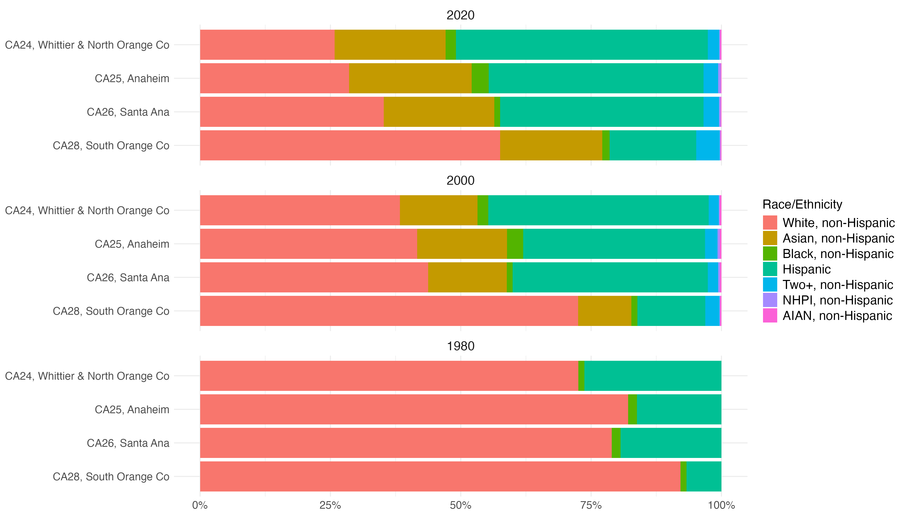
- Race/ethnicity categories not available in 1980 Census: Asian, non-Hispanic; Two+ races, non-Hispanic; NHPI, non-Hispanic; AIAN non-Hispanic
Research question 1
Socioeconomic characteristics of Orange County area Geomarkets
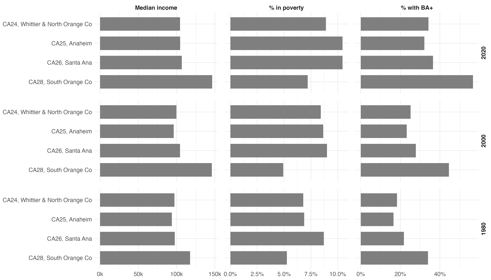
- Household income measured using 2024 CPI
Research question 1
Racial/ethnic and socioeconomic characteristics of Orange County area Geomarkets over time
|
1980
|
2000
|
2020
|
||||||||||||||||
|---|---|---|---|---|---|---|---|---|---|---|---|---|---|---|---|---|---|---|
| Wt. Mean | Mean | SD | P25 | P50 | P75 | Wt. Mean | Mean | SD | P25 | P50 | P75 | Wt. Mean | Mean | SD | P25 | P50 | P75 | |
| % White, non-Hispanic | ||||||||||||||||||
| CA24, Whittier & North Orange Co | 72.5 | 65.3 | 20.4 | 53.0 | 71.1 | 82.0 | 38.3 | 37.1 | 22.5 | 18.4 | 32.4 | 53.8 | 25.8 | 26.2 | 18.2 | 11.5 | 21.2 | 40.4 |
| CA25, Anaheim | 82.1 | 76.0 | 14.2 | 70.2 | 79.7 | 85.8 | 41.6 | 44.0 | 21.7 | 25.6 | 41.8 | 62.9 | 28.6 | 30.2 | 18.5 | 15.0 | 25.2 | 45.2 |
| CA26, Santa Ana | 79.0 | 75.8 | 21.2 | 74.4 | 82.7 | 88.4 | 43.7 | 50.8 | 28.7 | 23.9 | 56.5 | 77.4 | 35.2 | 39.9 | 27.4 | 13.4 | 39.9 | 63.6 |
| CA28, South Orange Co | 92.1 | 86.8 | 9.4 | 83.0 | 89.1 | 93.0 | 72.5 | 71.5 | 14.8 | 64.9 | 73.6 | 81.4 | 57.6 | 59.3 | 15.7 | 51.3 | 62.6 | 71.3 |
| % Asian, non-Hispanic | ||||||||||||||||||
| CA24, Whittier & North Orange Co | NA | NA | NA | NA | NA | NA | 14.9 | 15.5 | 17.0 | 4.4 | 9.4 | 17.8 | 21.3 | 20.5 | 19.6 | 7.7 | 13.6 | 24.7 |
| CA25, Anaheim | NA | NA | NA | NA | NA | NA | 17.2 | 16.3 | 13.8 | 7.4 | 12.4 | 20.3 | 23.5 | 23.4 | 15.9 | 11.7 | 19.9 | 29.9 |
| CA26, Santa Ana | NA | NA | NA | NA | NA | NA | 15.1 | 15.1 | 14.3 | 4.4 | 10.5 | 20.8 | 21.2 | 20.0 | 18.9 | 5.8 | 13.3 | 26.7 |
| CA28, South Orange Co | NA | NA | NA | NA | NA | NA | 10.2 | 10.7 | 10.2 | 3.9 | 7.5 | 12.3 | 19.6 | 18.2 | 15.4 | 8.1 | 13.2 | 23.7 |
| % Black, non-Hispanic | ||||||||||||||||||
| CA24, Whittier & North Orange Co | 1.1 | 1.5 | 2.4 | 0.3 | 0.7 | 1.7 | 2.1 | 2.3 | 2.1 | 1.0 | 1.6 | 2.7 | 2.0 | 2.0 | 2.2 | 0.3 | 1.4 | 2.7 |
| CA25, Anaheim | 1.7 | 1.5 | 2.1 | 0.4 | 0.9 | 1.6 | 3.1 | 3.2 | 3.7 | 1.2 | 2.0 | 3.9 | 3.3 | 3.3 | 3.9 | 0.8 | 1.9 | 4.5 |
| CA26, Santa Ana | 1.7 | 1.5 | 2.5 | 0.4 | 0.7 | 1.4 | 1.1 | 1.2 | 1.8 | 0.6 | 0.9 | 1.4 | 1.1 | 1.2 | 1.9 | 0.1 | 0.7 | 1.4 |
| CA28, South Orange Co | 1.2 | 1.4 | 3.3 | 0.2 | 0.5 | 0.9 | 1.2 | 1.3 | 1.3 | 0.7 | 1.0 | 1.6 | 1.4 | 1.3 | 1.5 | 0.3 | 0.9 | 2.1 |
| % Hispanic | ||||||||||||||||||
| CA24, Whittier & North Orange Co | 26.3 | 27.6 | 20.5 | 12.6 | 20.2 | 39.1 | 42.3 | 42.5 | 26.2 | 17.8 | 38.9 | 64.0 | 48.3 | 47.7 | 24.9 | 24.2 | 48.4 | 71.7 |
| CA25, Anaheim | 16.2 | 16.0 | 12.7 | 8.4 | 12.5 | 17.5 | 34.8 | 33.2 | 21.6 | 15.2 | 28.7 | 47.9 | 41.2 | 39.2 | 20.9 | 20.6 | 36.4 | 53.0 |
| CA26, Santa Ana | 19.3 | 16.4 | 19.6 | 5.9 | 8.5 | 15.3 | 37.4 | 29.9 | 28.7 | 8.2 | 16.8 | 43.8 | 39.0 | 35.2 | 28.8 | 12.9 | 24.1 | 55.0 |
| CA28, South Orange Co | 6.7 | 7.7 | 7.2 | 3.9 | 5.7 | 9.1 | 13.0 | 12.5 | 10.2 | 6.4 | 10.2 | 14.4 | 16.6 | 16.2 | 10.8 | 9.4 | 13.1 | 20.5 |
| % Two+, non-Hispanic | ||||||||||||||||||
| CA24, Whittier & North Orange Co | NA | NA | NA | NA | NA | NA | 1.9 | 2.0 | 0.9 | 1.5 | 2.0 | 2.4 | 2.2 | 2.2 | 1.9 | 0.7 | 1.8 | 3.0 |
| CA25, Anaheim | NA | NA | NA | NA | NA | NA | 2.4 | 2.4 | 0.9 | 1.8 | 2.4 | 3.0 | 2.8 | 2.9 | 2.3 | 1.1 | 2.3 | 4.5 |
| CA26, Santa Ana | NA | NA | NA | NA | NA | NA | 2.0 | 2.2 | 1.2 | 1.4 | 2.1 | 2.9 | 3.0 | 3.1 | 2.9 | 1.0 | 2.4 | 4.5 |
| CA28, South Orange Co | NA | NA | NA | NA | NA | NA | 2.7 | 3.4 | 7.9 | 2.0 | 2.7 | 3.3 | 4.5 | 4.3 | 2.3 | 2.7 | 4.2 | 5.6 |
| % NHPI, non-Hispanic | ||||||||||||||||||
| CA24, Whittier & North Orange Co | NA | NA | NA | NA | NA | NA | 0.2 | 0.2 | 0.2 | 0.1 | 0.1 | 0.2 | 0.2 | 0.2 | 0.6 | 0.0 | 0.0 | 0.0 |
| CA25, Anaheim | NA | NA | NA | NA | NA | NA | 0.4 | 0.4 | 0.4 | 0.1 | 0.3 | 0.6 | 0.4 | 0.4 | 1.0 | 0.0 | 0.0 | 0.4 |
| CA26, Santa Ana | NA | NA | NA | NA | NA | NA | 0.3 | 0.3 | 0.3 | 0.1 | 0.2 | 0.4 | 0.3 | 0.3 | 0.8 | 0.0 | 0.0 | 0.2 |
| CA28, South Orange Co | NA | NA | NA | NA | NA | NA | 0.1 | 0.2 | 0.1 | 0.1 | 0.1 | 0.2 | 0.1 | 0.1 | 0.4 | 0.0 | 0.0 | 0.0 |
| % AIAN, non-Hispanic | ||||||||||||||||||
| CA24, Whittier & North Orange Co | NA | NA | NA | NA | NA | NA | 0.3 | 0.3 | 0.2 | 0.2 | 0.3 | 0.4 | 0.2 | 0.7 | 7.1 | 0.0 | 0.0 | 0.3 |
| CA25, Anaheim | NA | NA | NA | NA | NA | NA | 0.3 | 0.3 | 0.2 | 0.2 | 0.3 | 0.4 | 0.2 | 0.2 | 0.4 | 0.0 | 0.0 | 0.1 |
| CA26, Santa Ana | NA | NA | NA | NA | NA | NA | 0.3 | 0.3 | 0.2 | 0.2 | 0.3 | 0.4 | 0.2 | 0.1 | 0.3 | 0.0 | 0.0 | 0.2 |
| CA28, South Orange Co | NA | NA | NA | NA | NA | NA | 0.2 | 0.2 | 0.2 | 0.1 | 0.2 | 0.3 | 0.2 | 0.2 | 0.5 | 0.0 | 0.0 | 0.0 |
| Median income | ||||||||||||||||||
| CA24, Whittier & North Orange Co | NA | 102.2 | 28.2 | 82.5 | 97.2 | 118.2 | NA | 108.2 | 35.0 | 82.7 | 99.9 | 125.9 | NA | 111.7 | 34.9 | 86.7 | 104.5 | 129.6 |
| CA25, Anaheim | NA | 99.1 | 30.7 | 79.2 | 93.8 | 114.1 | NA | 105.6 | 38.2 | 78.4 | 96.3 | 123.9 | NA | 110.5 | 36.2 | 83.5 | 104.8 | 131.5 |
| CA26, Santa Ana | NA | 103.0 | 36.3 | 78.7 | 97.6 | 121.3 | NA | 114.9 | 43.4 | 83.5 | 104.5 | 139.4 | NA | 114.2 | 41.0 | 85.2 | 106.8 | 135.4 |
| CA28, South Orange Co | NA | 118.9 | 46.0 | 90.0 | 117.7 | 144.9 | NA | 146.1 | 51.7 | 112.1 | 146.1 | 170.4 | NA | 146.4 | 48.0 | 114.1 | 146.6 | 175.1 |
| % in poverty | ||||||||||||||||||
| CA24, Whittier & North Orange Co | 6.8 | 7.5 | 6.3 | 3.5 | 6.0 | 10.0 | 8.4 | 8.9 | 6.2 | 4.3 | 7.9 | 11.9 | 8.9 | 8.7 | 5.4 | 4.6 | 8.0 | 11.9 |
| CA25, Anaheim | 6.9 | 7.1 | 4.9 | 3.9 | 6.0 | 9.1 | 8.6 | 9.1 | 6.4 | 4.3 | 7.5 | 12.8 | 10.4 | 10.2 | 6.2 | 5.7 | 8.7 | 14.2 |
| CA26, Santa Ana | 8.7 | 8.7 | 9.0 | 3.8 | 6.5 | 10.5 | 9.0 | 9.2 | 7.7 | 3.9 | 6.6 | 12.9 | 10.4 | 10.2 | 6.2 | 5.7 | 8.6 | 13.5 |
| CA28, South Orange Co | 5.3 | 6.9 | 11.9 | 3.1 | 4.3 | 7.7 | 4.9 | 5.0 | 5.8 | 2.3 | 3.6 | 5.8 | 7.2 | 7.2 | 6.2 | 3.7 | 5.9 | 8.4 |
| % with BA+ | ||||||||||||||||||
| CA24, Whittier & North Orange Co | 18.3 | 16.4 | 10.9 | 7.6 | 13.5 | 24.9 | 25.2 | 24.1 | 14.9 | 10.8 | 21.9 | 36.9 | 34.2 | 34.0 | 16.6 | 21.2 | 31.2 | 46.3 |
| CA25, Anaheim | 16.5 | 16.1 | 9.5 | 9.5 | 13.5 | 20.5 | 23.2 | 23.2 | 14.1 | 13.4 | 19.4 | 30.6 | 32.1 | 33.0 | 14.4 | 21.3 | 29.4 | 44.5 |
| CA26, Santa Ana | 21.8 | 21.9 | 13.1 | 11.3 | 20.1 | 31.9 | 27.8 | 30.0 | 19.5 | 12.5 | 28.2 | 45.9 | 36.5 | 37.8 | 19.8 | 21.3 | 37.8 | 52.3 |
| CA28, South Orange Co | 34.0 | 32.5 | 13.7 | 25.9 | 33.0 | 43.0 | 44.5 | 45.7 | 15.2 | 36.2 | 44.7 | 56.2 | 56.7 | 56.7 | 13.5 | 46.0 | 55.4 | 66.5 |
- Race/ethnicity categories not available in 1980 Census: Asian, non-Hispanic; Two+ races, non-Hispanic; NHPI, non-Hispanic; AIAN non-Hispanic
- Household income measured using 2024 CPI
Research question 1
Racial/ethnic and socioeconomic characteristics of Orange County area Geomarkets over time
Fullscreen
- Race/ethnicity categories not available in 1980 Census: Asian, non-Hispanic; Two+ races, non-Hispanic; NHPI, non-Hispanic; AIAN non-Hispanic
- Household income measured using 2024 CPI
Philadelphia area
Research question 1
Racial/ethnic composition of Philadelphia area Geomarkets
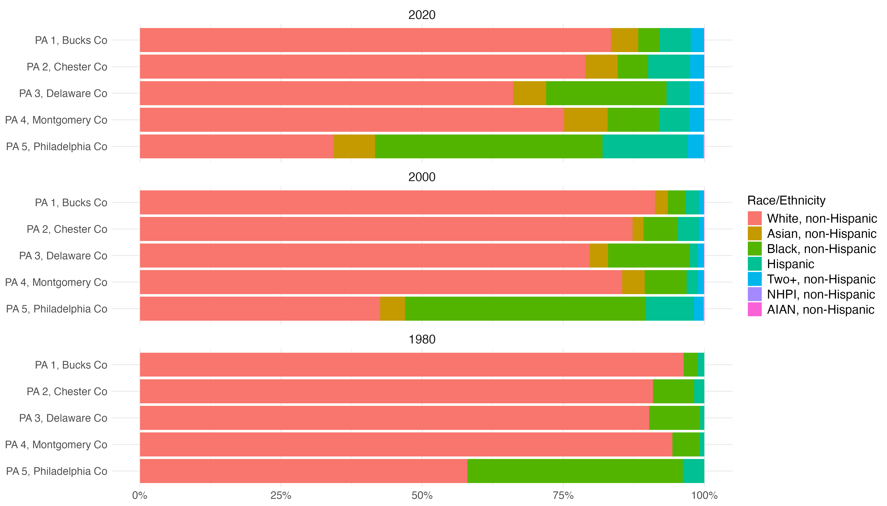
- Race/ethnicity categories not available in 1980 Census: Asian, non-Hispanic; Two+ races, non-Hispanic; NHPI, non-Hispanic; AIAN non-Hispanic
Research question 1
Socioeconomic characteristics of Philadelphia area Geomarkets
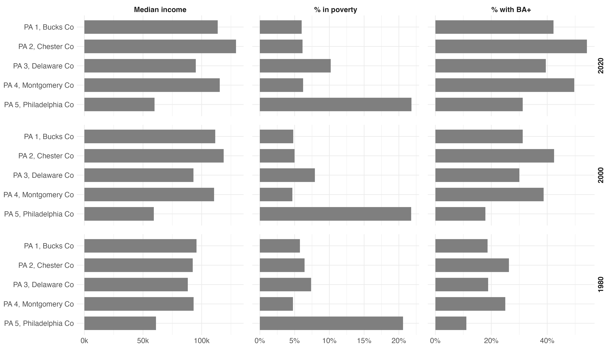
- Household income measured using 2024 CPI
Research question 1
Racial/ethnic and socioeconomic characteristics of Philadelphia area Geomarkets over time
|
1980
|
2000
|
2020
|
||||||||||||||||
|---|---|---|---|---|---|---|---|---|---|---|---|---|---|---|---|---|---|---|
| Wt. Mean | Mean | SD | P25 | P50 | P75 | Wt. Mean | Mean | SD | P25 | P50 | P75 | Wt. Mean | Mean | SD | P25 | P50 | P75 | |
| % White, non-Hispanic | ||||||||||||||||||
| PA 1, Bucks Co | 96.3 | 95.5 | 6.6 | 96.2 | 97.6 | 98.4 | 91.2 | 91.4 | 8.7 | 90.5 | 94.7 | 96.4 | 83.4 | 83.2 | 11.8 | 78.0 | 86.3 | 91.7 |
| PA 2, Chester Co | 90.9 | 90.9 | 12.1 | 89.7 | 95.7 | 97.9 | 87.3 | 87.2 | 13.8 | 86.1 | 91.7 | 95.3 | 78.9 | 78.1 | 16.6 | 71.5 | 83.3 | 89.8 |
| PA 3, Delaware Co | 90.2 | 84.1 | 26.9 | 86.5 | 96.5 | 98.3 | 79.7 | 75.5 | 29.7 | 68.9 | 90.5 | 94.5 | 66.1 | 64.1 | 30.5 | 43.7 | 77.3 | 87.6 |
| PA 4, Montgomery Co | 94.3 | 91.2 | 15.9 | 93.1 | 96.3 | 98.0 | 85.4 | 82.5 | 20.5 | 82.1 | 89.8 | 93.9 | 75.2 | 75.0 | 16.9 | 70.1 | 79.0 | 85.9 |
| PA 5, Philadelphia Co | 58.0 | 62.3 | 38.9 | 17.1 | 82.6 | 97.0 | 42.5 | 46.2 | 36.5 | 5.3 | 48.9 | 85.2 | 34.3 | 35.9 | 30.2 | 6.1 | 30.0 | 65.6 |
| % Asian, non-Hispanic | ||||||||||||||||||
| PA 1, Bucks Co | NA | NA | NA | NA | NA | NA | 2.3 | 2.2 | 2.7 | 0.8 | 1.4 | 2.7 | 4.8 | 4.6 | 4.6 | 1.2 | 3.4 | 6.4 |
| PA 2, Chester Co | NA | NA | NA | NA | NA | NA | 1.9 | 1.8 | 2.0 | 0.4 | 1.1 | 2.7 | 5.7 | 5.7 | 7.8 | 0.9 | 2.8 | 6.9 |
| PA 3, Delaware Co | NA | NA | NA | NA | NA | NA | 3.3 | 3.4 | 6.4 | 1.0 | 2.0 | 3.0 | 5.9 | 5.2 | 7.1 | 0.8 | 3.2 | 6.8 |
| PA 4, Montgomery Co | NA | NA | NA | NA | NA | NA | 4.0 | 3.4 | 3.3 | 1.1 | 2.5 | 4.2 | 7.7 | 7.3 | 7.1 | 2.0 | 5.1 | 10.1 |
| PA 5, Philadelphia Co | NA | NA | NA | NA | NA | NA | 4.4 | 4.3 | 7.5 | 0.5 | 1.7 | 4.7 | 7.4 | 7.1 | 8.5 | 0.8 | 4.3 | 9.5 |
| % Black, non-Hispanic | ||||||||||||||||||
| PA 1, Bucks Co | 2.5 | 2.5 | 5.9 | 0.3 | 0.8 | 1.8 | 3.2 | 3.1 | 5.5 | 0.6 | 1.1 | 3.0 | 3.7 | 3.6 | 4.9 | 0.5 | 1.9 | 4.3 |
| PA 2, Chester Co | 7.3 | 6.8 | 10.9 | 0.9 | 2.7 | 7.0 | 6.1 | 6.5 | 10.5 | 1.1 | 2.6 | 6.7 | 5.4 | 5.3 | 8.0 | 1.2 | 2.9 | 6.2 |
| PA 3, Delaware Co | 9.0 | 13.9 | 26.5 | 0.3 | 1.5 | 8.9 | 14.4 | 18.0 | 28.0 | 1.2 | 3.7 | 19.4 | 21.3 | 23.6 | 29.0 | 2.6 | 8.2 | 38.1 |
| PA 4, Montgomery Co | 4.8 | 6.6 | 15.6 | 0.4 | 1.2 | 4.0 | 7.4 | 10.6 | 18.7 | 1.6 | 3.5 | 8.2 | 9.1 | 9.4 | 11.7 | 2.4 | 5.1 | 11.4 |
| PA 5, Philadelphia Co | 38.2 | 32.4 | 38.2 | 0.7 | 8.2 | 75.1 | 42.7 | 40.2 | 36.9 | 5.7 | 26.7 | 82.2 | 40.3 | 40.4 | 34.1 | 9.4 | 27.6 | 77.2 |
| % Hispanic | ||||||||||||||||||
| PA 1, Bucks Co | 1.2 | 1.1 | 1.6 | 0.5 | 0.7 | 1.1 | 2.3 | 2.2 | 2.8 | 1.1 | 1.4 | 2.3 | 5.6 | 5.5 | 4.8 | 2.0 | 3.9 | 6.9 |
| PA 2, Chester Co | 1.8 | 1.5 | 2.4 | 0.5 | 0.8 | 1.3 | 3.7 | 3.4 | 5.4 | 1.0 | 1.5 | 2.9 | 7.5 | 7.8 | 9.6 | 2.0 | 4.4 | 8.8 |
| PA 3, Delaware Co | 0.8 | 0.9 | 1.3 | 0.4 | 0.6 | 1.0 | 1.5 | 1.7 | 1.9 | 0.8 | 1.2 | 1.9 | 4.0 | 3.9 | 3.6 | 1.4 | 2.9 | 5.7 |
| PA 4, Montgomery Co | 0.8 | 0.9 | 1.2 | 0.4 | 0.7 | 1.1 | 2.0 | 2.2 | 2.7 | 1.0 | 1.4 | 2.2 | 5.4 | 5.3 | 6.2 | 1.9 | 3.8 | 5.9 |
| PA 5, Philadelphia Co | 3.8 | 3.5 | 9.2 | 0.7 | 1.1 | 1.7 | 8.5 | 7.1 | 13.8 | 1.4 | 2.5 | 4.7 | 15.1 | 13.2 | 17.8 | 2.9 | 6.5 | 14.1 |
| % Two+, non-Hispanic | ||||||||||||||||||
| PA 1, Bucks Co | NA | NA | NA | NA | NA | NA | 0.8 | 0.8 | 0.5 | 0.5 | 0.7 | 1.0 | 2.3 | 2.3 | 2.4 | 0.7 | 1.6 | 3.1 |
| PA 2, Chester Co | NA | NA | NA | NA | NA | NA | 0.8 | 0.9 | 0.6 | 0.5 | 0.7 | 1.1 | 2.5 | 2.9 | 5.8 | 0.9 | 2.0 | 3.3 |
| PA 3, Delaware Co | NA | NA | NA | NA | NA | NA | 1.1 | 1.1 | 0.8 | 0.5 | 0.9 | 1.3 | 2.6 | 2.6 | 2.2 | 1.1 | 2.0 | 3.7 |
| PA 4, Montgomery Co | NA | NA | NA | NA | NA | NA | 1.0 | 1.0 | 0.7 | 0.6 | 0.9 | 1.3 | 2.6 | 2.6 | 2.3 | 1.1 | 2.1 | 3.5 |
| PA 5, Philadelphia Co | NA | NA | NA | NA | NA | NA | 1.6 | 1.8 | 4.9 | 0.9 | 1.4 | 2.1 | 2.7 | 2.8 | 3.1 | 0.7 | 2.0 | 3.8 |
| % NHPI, non-Hispanic | ||||||||||||||||||
| PA 1, Bucks Co | NA | NA | NA | NA | NA | NA | 0.0 | 0.0 | 0.0 | 0.0 | 0.0 | 0.0 | 0.0 | 0.0 | 0.2 | 0.0 | 0.0 | 0.0 |
| PA 2, Chester Co | NA | NA | NA | NA | NA | NA | 0.0 | 0.0 | 0.0 | 0.0 | 0.0 | 0.0 | 0.0 | 0.0 | 0.1 | 0.0 | 0.0 | 0.0 |
| PA 3, Delaware Co | NA | NA | NA | NA | NA | NA | 0.0 | 0.0 | 0.0 | 0.0 | 0.0 | 0.0 | 0.0 | 0.1 | 0.6 | 0.0 | 0.0 | 0.0 |
| PA 4, Montgomery Co | NA | NA | NA | NA | NA | NA | 0.0 | 0.0 | 0.1 | 0.0 | 0.0 | 0.0 | 0.0 | 0.0 | 0.1 | 0.0 | 0.0 | 0.0 |
| PA 5, Philadelphia Co | NA | NA | NA | NA | NA | NA | 0.0 | 0.0 | 0.1 | 0.0 | 0.0 | 0.0 | 0.0 | 0.0 | 0.2 | 0.0 | 0.0 | 0.0 |
| % AIAN, non-Hispanic | ||||||||||||||||||
| PA 1, Bucks Co | NA | NA | NA | NA | NA | NA | 0.1 | 0.1 | 0.1 | 0.0 | 0.1 | 0.1 | 0.1 | 0.1 | 0.2 | 0.0 | 0.0 | 0.0 |
| PA 2, Chester Co | NA | NA | NA | NA | NA | NA | 0.1 | 0.1 | 0.1 | 0.0 | 0.1 | 0.2 | 0.0 | 0.0 | 0.2 | 0.0 | 0.0 | 0.0 |
| PA 3, Delaware Co | NA | NA | NA | NA | NA | NA | 0.1 | 0.1 | 0.1 | 0.0 | 0.1 | 0.1 | 0.1 | 0.1 | 0.4 | 0.0 | 0.0 | 0.0 |
| PA 4, Montgomery Co | NA | NA | NA | NA | NA | NA | 0.1 | 0.1 | 0.1 | 0.0 | 0.1 | 0.1 | 0.0 | 0.0 | 0.2 | 0.0 | 0.0 | 0.0 |
| PA 5, Philadelphia Co | NA | NA | NA | NA | NA | NA | 0.2 | 0.2 | 0.2 | 0.1 | 0.2 | 0.3 | 0.2 | 0.2 | 0.6 | 0.0 | 0.0 | 0.0 |
| Median income | ||||||||||||||||||
| PA 1, Bucks Co | NA | 97.7 | 21.8 | 84.5 | 95.6 | 109.4 | NA | 115.2 | 32.8 | 91.8 | 111.6 | 128.6 | NA | 120.4 | 43.4 | 88.2 | 113.7 | 143.0 |
| PA 2, Chester Co | NA | 98.7 | 29.8 | 77.3 | 92.4 | 116.5 | NA | 123.5 | 44.1 | 92.2 | 118.8 | 153.1 | NA | 134.8 | 48.1 | 97.5 | 129.3 | 159.4 |
| PA 3, Delaware Co | NA | 91.8 | 34.4 | 70.2 | 88.2 | 109.6 | NA | 104.0 | 47.4 | 73.4 | 93.0 | 124.1 | NA | 101.3 | 46.5 | 65.5 | 95.0 | 128.5 |
| PA 4, Montgomery Co | NA | 100.6 | 31.7 | 79.2 | 93.1 | 114.9 | NA | 115.1 | 42.5 | 87.1 | 110.7 | 134.0 | NA | 120.1 | 42.1 | 92.1 | 115.4 | 140.0 |
| PA 5, Philadelphia Co | NA | 65.1 | 33.7 | 44.7 | 61.0 | 75.7 | NA | 65.3 | 40.2 | 41.6 | 59.2 | 77.7 | NA | 66.2 | 34.5 | 40.3 | 59.8 | 83.0 |
| % in poverty | ||||||||||||||||||
| PA 1, Bucks Co | 5.8 | 5.8 | 4.8 | 3.3 | 4.6 | 6.8 | 4.8 | 4.5 | 3.5 | 2.3 | 3.8 | 5.2 | 6.0 | 6.2 | 4.8 | 2.6 | 5.0 | 8.4 |
| PA 2, Chester Co | 6.4 | 6.9 | 5.2 | 3.3 | 5.2 | 8.5 | 5.0 | 5.5 | 5.4 | 2.2 | 4.1 | 6.5 | 6.1 | 6.0 | 5.5 | 2.5 | 4.5 | 8.5 |
| PA 3, Delaware Co | 7.4 | 9.1 | 11.9 | 3.5 | 5.5 | 9.6 | 7.9 | 8.6 | 8.0 | 3.6 | 5.3 | 10.6 | 10.2 | 10.6 | 9.3 | 4.0 | 7.7 | 14.2 |
| PA 4, Montgomery Co | 4.8 | 5.7 | 5.2 | 2.8 | 4.5 | 6.5 | 4.7 | 5.7 | 4.9 | 2.5 | 4.3 | 6.7 | 6.2 | 6.5 | 5.1 | 3.2 | 4.9 | 8.2 |
| PA 5, Philadelphia Co | 20.6 | 19.3 | 15.9 | 6.7 | 13.6 | 28.1 | 21.8 | 21.0 | 14.6 | 9.8 | 17.4 | 30.0 | 21.8 | 22.5 | 14.7 | 11.2 | 19.3 | 30.8 |
| % with BA+ | ||||||||||||||||||
| PA 1, Bucks Co | 18.6 | 18.7 | 10.7 | 10.3 | 17.0 | 24.7 | 31.2 | 29.2 | 14.7 | 19.2 | 26.8 | 38.1 | 42.2 | 42.1 | 16.6 | 28.9 | 39.3 | 56.5 |
| PA 2, Chester Co | 26.3 | 23.2 | 14.7 | 11.2 | 18.8 | 35.1 | 42.5 | 37.8 | 20.4 | 19.5 | 37.4 | 55.8 | 54.2 | 52.6 | 18.5 | 37.9 | 56.1 | 66.8 |
| PA 3, Delaware Co | 18.9 | 20.9 | 15.8 | 7.3 | 18.6 | 29.7 | 30.0 | 32.2 | 20.7 | 14.1 | 27.7 | 45.4 | 39.5 | 37.8 | 20.5 | 20.3 | 35.9 | 52.4 |
| PA 4, Montgomery Co | 25.0 | 23.7 | 14.5 | 12.5 | 19.6 | 34.2 | 38.7 | 35.9 | 17.6 | 21.3 | 33.1 | 48.1 | 49.6 | 49.1 | 18.4 | 36.1 | 49.3 | 61.3 |
| PA 5, Philadelphia Co | 11.1 | 14.9 | 16.0 | 4.1 | 7.8 | 19.9 | 17.9 | 20.7 | 19.9 | 6.7 | 13.3 | 27.5 | 31.2 | 33.4 | 24.7 | 14.6 | 24.9 | 48.6 |
- Race/ethnicity categories not available in 1980 Census: Asian, non-Hispanic; Two+ races, non-Hispanic; NHPI, non-Hispanic; AIAN non-Hispanic
- Household income measured using 2024 CPI
Research question 1
Racial/ethnic and socioeconomic characteristics of Philadelphia area Geomarkets over time
Fullscreen
- Race/ethnicity categories not available in 1980 Census: Asian, non-Hispanic; Two+ races, non-Hispanic; NHPI, non-Hispanic; AIAN non-Hispanic
- Household income measured using 2024 CPI
San Diego area
Research question 1
Racial/ethnic composition of San Diego area Geomarkets
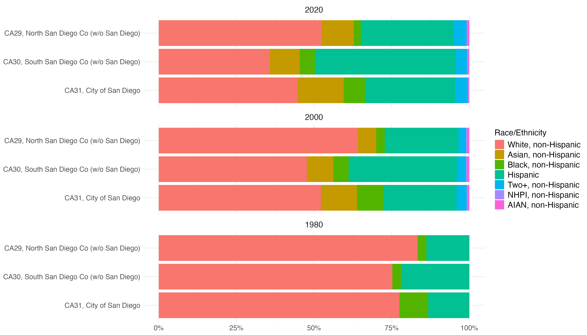
- Race/ethnicity categories not available in 1980 Census: Asian, non-Hispanic; Two+ races, non-Hispanic; NHPI, non-Hispanic; AIAN non-Hispanic
Research question 1
Socioeconomic characteristics of San Diego area Geomarkets
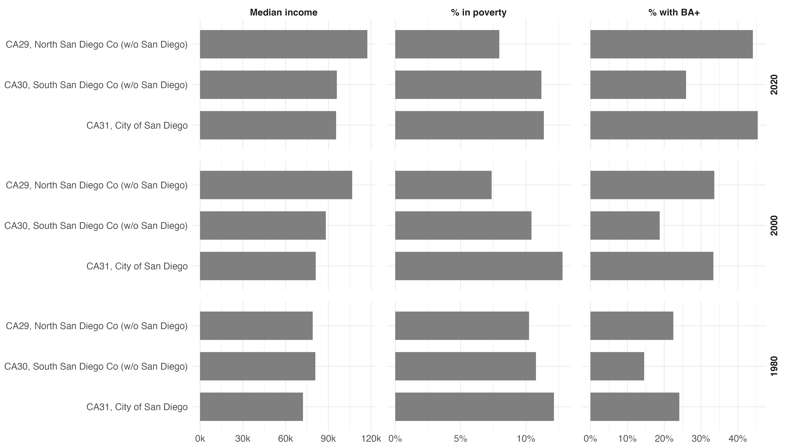
- Household income measured using 2024 CPI
Research question 1
Racial/ethnic and socioeconomic characteristics of San Diego area Geomarkets over time
|
1980
|
2000
|
2020
|
||||||||||||||||
|---|---|---|---|---|---|---|---|---|---|---|---|---|---|---|---|---|---|---|
| Wt. Mean | Mean | SD | P25 | P50 | P75 | Wt. Mean | Mean | SD | P25 | P50 | P75 | Wt. Mean | Mean | SD | P25 | P50 | P75 | |
| % White, non-Hispanic | ||||||||||||||||||
| CA29, North San Diego Co (w/o San Diego) | 83.3 | 80.3 | 14.5 | 76.9 | 85.0 | 89.5 | 64.1 | 65.8 | 19.1 | 55.2 | 69.5 | 81.0 | 52.4 | 53.8 | 19.7 | 41.8 | 54.0 | 69.5 |
| CA30, South San Diego Co (w/o San Diego) | 75.2 | 70.7 | 24.6 | 57.0 | 82.1 | 89.4 | 47.7 | 48.3 | 28.3 | 22.2 | 49.0 | 78.2 | 35.8 | 38.3 | 26.6 | 12.8 | 32.6 | 65.2 |
| CA31, City of San Diego | 77.5 | 73.1 | 24.1 | 68.2 | 82.6 | 89.5 | 52.3 | 54.1 | 27.6 | 35.3 | 61.7 | 77.5 | 44.8 | 47.1 | 23.6 | 27.8 | 50.3 | 66.4 |
| % Asian, non-Hispanic | ||||||||||||||||||
| CA29, North San Diego Co (w/o San Diego) | NA | NA | NA | NA | NA | NA | 5.9 | 6.2 | 7.1 | 2.3 | 4.1 | 6.6 | 10.4 | 9.9 | 10.7 | 2.9 | 6.1 | 11.7 |
| CA30, South San Diego Co (w/o San Diego) | NA | NA | NA | NA | NA | NA | 8.5 | 8.7 | 11.3 | 2.3 | 4.3 | 9.4 | 9.6 | 8.9 | 9.6 | 2.7 | 5.4 | 11.2 |
| CA31, City of San Diego | NA | NA | NA | NA | NA | NA | 11.6 | 11.2 | 12.6 | 3.2 | 6.3 | 12.8 | 14.8 | 13.5 | 14.3 | 4.4 | 8.2 | 16.2 |
| % Black, non-Hispanic | ||||||||||||||||||
| CA29, North San Diego Co (w/o San Diego) | 2.9 | 2.0 | 3.7 | 0.3 | 0.6 | 1.6 | 2.8 | 2.3 | 2.8 | 0.7 | 1.6 | 2.9 | 2.3 | 2.0 | 2.5 | 0.4 | 1.3 | 2.6 |
| CA30, South San Diego Co (w/o San Diego) | 3.0 | 4.4 | 10.6 | 0.7 | 1.5 | 3.3 | 5.0 | 5.6 | 7.1 | 1.6 | 3.6 | 6.4 | 4.9 | 4.7 | 5.1 | 1.2 | 3.2 | 6.0 |
| CA31, City of San Diego | 9.2 | 7.2 | 13.0 | 1.1 | 2.5 | 6.9 | 8.5 | 7.8 | 8.9 | 1.7 | 4.7 | 10.8 | 6.9 | 6.5 | 6.5 | 2.0 | 4.4 | 9.4 |
| % Hispanic | ||||||||||||||||||
| CA29, North San Diego Co (w/o San Diego) | 13.8 | 13.5 | 11.0 | 6.3 | 10.6 | 15.8 | 23.7 | 22.0 | 18.7 | 8.2 | 14.8 | 29.6 | 29.8 | 28.9 | 21.4 | 11.1 | 24.0 | 40.7 |
| CA30, South San Diego Co (w/o San Diego) | 21.8 | 18.7 | 18.1 | 6.9 | 10.2 | 23.3 | 34.8 | 33.2 | 23.0 | 12.3 | 29.1 | 48.1 | 45.4 | 43.6 | 24.1 | 22.4 | 40.9 | 63.0 |
| CA31, City of San Diego | 13.2 | 13.5 | 14.9 | 5.7 | 8.4 | 14.2 | 23.6 | 22.7 | 20.4 | 8.7 | 14.5 | 28.0 | 29.0 | 28.1 | 19.8 | 13.7 | 22.0 | 36.9 |
| % Two+, non-Hispanic | ||||||||||||||||||
| CA29, North San Diego Co (w/o San Diego) | NA | NA | NA | NA | NA | NA | 2.5 | 2.4 | 0.9 | 1.7 | 2.3 | 2.9 | 4.2 | 4.2 | 3.1 | 2.0 | 3.6 | 5.7 |
| CA30, South San Diego Co (w/o San Diego) | NA | NA | NA | NA | NA | NA | 3.0 | 2.9 | 1.2 | 2.2 | 2.7 | 3.7 | 3.6 | 3.6 | 2.8 | 1.5 | 2.9 | 5.1 |
| CA31, City of San Diego | NA | NA | NA | NA | NA | NA | 3.2 | 3.1 | 1.2 | 2.4 | 3.0 | 3.9 | 4.0 | 4.0 | 2.8 | 1.8 | 3.5 | 5.6 |
| % NHPI, non-Hispanic | ||||||||||||||||||
| CA29, North San Diego Co (w/o San Diego) | NA | NA | NA | NA | NA | NA | 0.4 | 0.4 | 0.5 | 0.1 | 0.2 | 0.4 | 0.4 | 0.3 | 1.0 | 0.0 | 0.0 | 0.2 |
| CA30, South San Diego Co (w/o San Diego) | NA | NA | NA | NA | NA | NA | 0.5 | 0.5 | 0.4 | 0.2 | 0.4 | 0.7 | 0.5 | 0.4 | 1.0 | 0.0 | 0.0 | 0.4 |
| CA31, City of San Diego | NA | NA | NA | NA | NA | NA | 0.4 | 0.4 | 0.4 | 0.2 | 0.3 | 0.5 | 0.3 | 0.3 | 0.9 | 0.0 | 0.0 | 0.3 |
| % AIAN, non-Hispanic | ||||||||||||||||||
| CA29, North San Diego Co (w/o San Diego) | NA | NA | NA | NA | NA | NA | 0.7 | 0.7 | 2.0 | 0.2 | 0.4 | 0.6 | 0.5 | 0.6 | 3.1 | 0.0 | 0.0 | 0.3 |
| CA30, South San Diego Co (w/o San Diego) | NA | NA | NA | NA | NA | NA | 0.6 | 0.6 | 1.2 | 0.3 | 0.4 | 0.6 | 0.3 | 0.4 | 1.4 | 0.0 | 0.0 | 0.2 |
| CA31, City of San Diego | NA | NA | NA | NA | NA | NA | 0.4 | 0.4 | 0.3 | 0.2 | 0.4 | 0.5 | 0.2 | 0.3 | 0.7 | 0.0 | 0.0 | 0.3 |
| Median income | ||||||||||||||||||
| CA29, North San Diego Co (w/o San Diego) | NA | 85.4 | 28.9 | 64.7 | 79.0 | 101.3 | NA | 115.8 | 50.9 | 80.3 | 106.7 | 135.4 | NA | 124.8 | 49.1 | 88.0 | 117.4 | 152.5 |
| CA30, South San Diego Co (w/o San Diego) | NA | 82.1 | 27.6 | 63.5 | 80.9 | 95.5 | NA | 92.6 | 37.1 | 66.0 | 88.3 | 114.5 | NA | 98.2 | 35.9 | 68.6 | 96.0 | 125.1 |
| CA31, City of San Diego | NA | 78.8 | 33.4 | 53.6 | 72.3 | 96.3 | NA | 91.4 | 44.4 | 62.5 | 81.2 | 113.1 | NA | 101.7 | 40.0 | 76.5 | 95.4 | 120.6 |
| % in poverty | ||||||||||||||||||
| CA29, North San Diego Co (w/o San Diego) | 10.2 | 10.6 | 5.8 | 6.0 | 9.5 | 13.5 | 7.4 | 7.5 | 5.7 | 3.4 | 6.2 | 9.8 | 8.0 | 7.9 | 6.3 | 3.1 | 6.2 | 11.1 |
| CA30, South San Diego Co (w/o San Diego) | 10.8 | 10.4 | 6.3 | 6.0 | 9.1 | 13.4 | 10.4 | 10.5 | 8.0 | 4.4 | 7.8 | 14.5 | 11.2 | 11.0 | 7.9 | 4.9 | 8.9 | 15.5 |
| CA31, City of San Diego | 12.1 | 12.1 | 8.6 | 6.0 | 9.4 | 15.9 | 12.8 | 12.5 | 10.2 | 5.2 | 9.7 | 16.3 | 11.4 | 11.6 | 8.2 | 5.6 | 9.4 | 15.0 |
| % with BA+ | ||||||||||||||||||
| CA29, North San Diego Co (w/o San Diego) | 22.5 | 22.9 | 14.2 | 12.9 | 19.2 | 27.9 | 33.6 | 33.6 | 19.0 | 17.5 | 29.1 | 48.2 | 44.1 | 44.0 | 20.8 | 26.0 | 41.9 | 61.6 |
| CA30, South San Diego Co (w/o San Diego) | 14.6 | 16.4 | 12.8 | 8.6 | 12.4 | 20.1 | 18.8 | 20.0 | 13.9 | 9.4 | 15.6 | 27.8 | 25.9 | 26.7 | 14.6 | 15.3 | 24.3 | 34.8 |
| CA31, City of San Diego | 24.1 | 23.2 | 14.8 | 12.2 | 20.4 | 30.9 | 33.4 | 31.8 | 19.9 | 15.6 | 29.1 | 47.5 | 45.4 | 46.0 | 21.0 | 29.7 | 49.1 | 62.2 |
- Race/ethnicity categories not available in 1980 Census: Asian, non-Hispanic; Two+ races, non-Hispanic; NHPI, non-Hispanic; AIAN non-Hispanic
- Household income measured using 2024 CPI
Research question 1
Racial/ethnic and socioeconomic characteristics of San Diego area Geomarkets over time
Fullscreen
- Race/ethnicity categories not available in 1980 Census: Asian, non-Hispanic; Two+ races, non-Hispanic; NHPI, non-Hispanic; AIAN non-Hispanic
- Household income measured using 2024 CPI